| 魔王の俺が奴隷エルフを嫁にしたんだが、どう愛でればいい？1 (ＨＪ文庫) | |
| 手島史詞 | |
| ホビージャパン (2017) | |
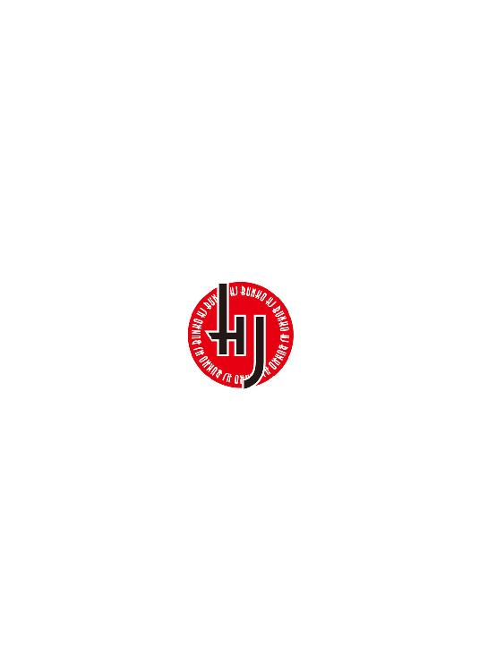
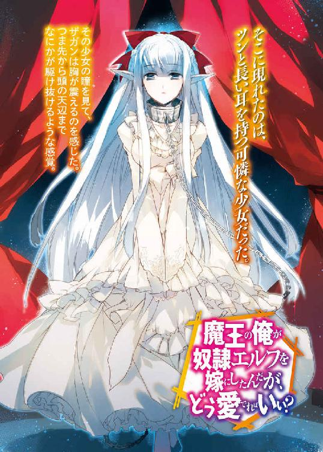
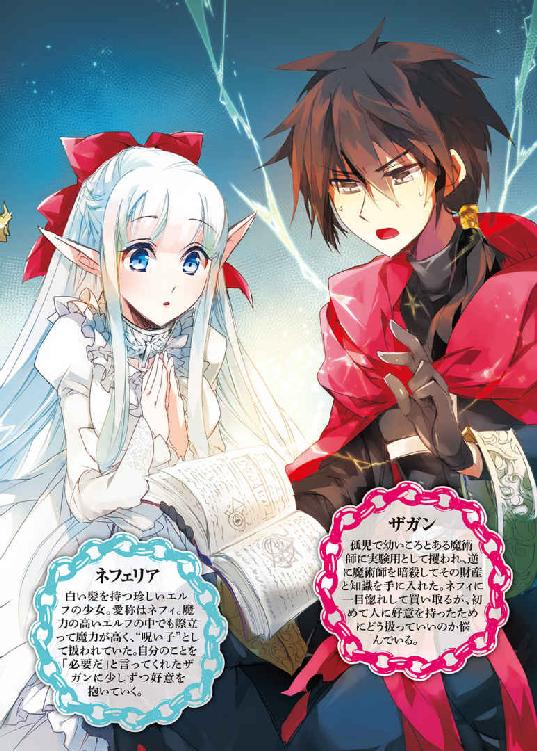
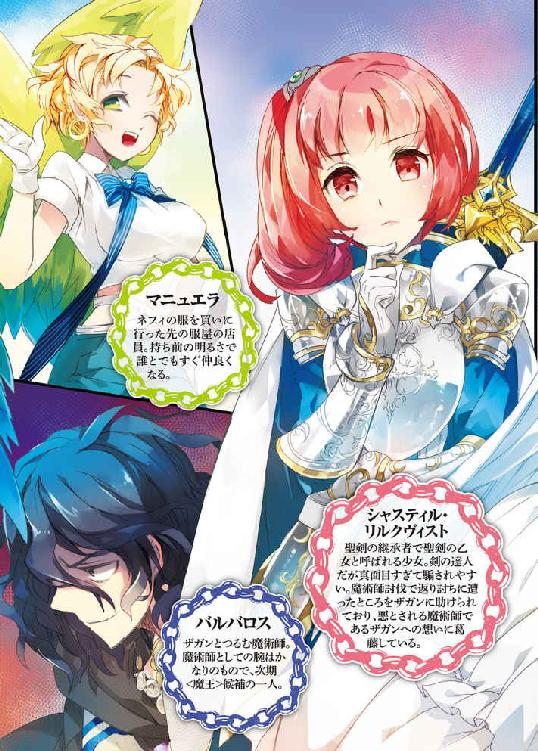
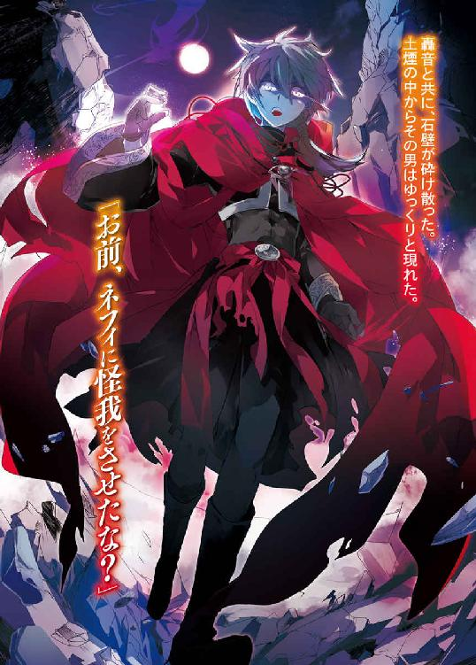
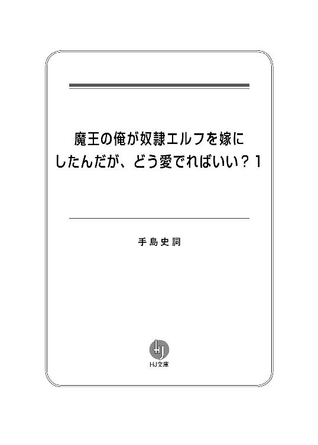
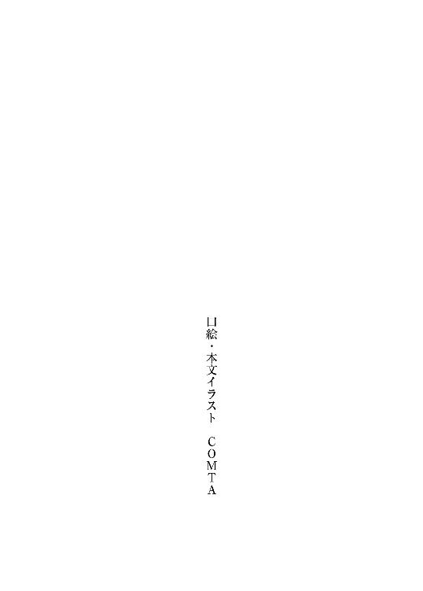
――どうすればいいのだ、この状況を......！
ザガンはいま、窮地に立たされていた。
そこは自身の居城だ。
床は古びてささくれたクヌギでできており、壁は苔むした石煉瓦を積み上げたもの。絨毯や壁掛けを飾って誤魔化そうとはしているのだが、ザガンは根本的に手入れというものをしてこなかった。
建築から最低でも二百年は経っているだろう、陰鬱とした空気のこもる廃城である。
そんな城の玉座で膝を組んでふんぞり返るザガンの前に、ひとりの少女がちょこんと立ち尽くしていた。
まず目を惹くのは腰まで覆う真っ白な髪。そしてその髪を飾る深紅のリボン。小さな顔に嵌まる大きな瞳は夏の空のような紺碧で、唇は控えめで薄い桃色だった。
華奢な肢体を覆うのは純白のドレスで、開いた胸元からは細い体に反して大きなふたつの膨らみが覗いている。
ただ、その瞳はひどく虚ろで、耳はツンと尖っていた。
古くは北の聖地の妖精とも呼ばれた伝説の種族――エルフだ。
特に、白い髪の個体は珍しく、ことさら力が強いと言われていた。
人より神に近いとされる彼女たちだが、その神聖さゆえに人族から狙われることも少なくはない。彼女たちはその髪の毛一本から血の一滴、命そのものでさえ、魔術的な触媒として計り知れない力を持っているのだ。
その儚くも神秘的な少女の首には、鎖のついた無骨な首輪が嵌まっていた。
奴隷の首輪である。
そして、この少女の存在こそが、ザガンを苦悩させるものの正体だった。
――好きな女の子と会話するのって、どうすればいいんだ......！
数刻前、この少女に一目惚れしてその身柄を買い取ったまではよかったのだが、ザガンはこれまで年頃の少女と口を利く機会自体がほとんどなかった。
異性の気の引き方などまるでわからない。
少女の方も奴隷という身分で買い取られているのだ。緊張しているのか、表情は硬く、無表情と言っても差しつかえないほどだ。
いつまでも黙っておくわけにはいかない。なにか言わなければ。
心の中で言葉を思い浮かべてみる。
『空が綺麗ですね』
――......いや。これは、ない。これはないな。
ここは窓も見えない室内で、天井を見上げればなんの拷問器具か錆びた鎖がぶら下がっている。そもそも外は曇っていたはずだ。
いくらなんでも、これはない。ならばなにを言うべきか。
『この城、どう思いますか？』
――頭を冷やせ。ここは死体や魔術道具がゴロゴロ転がってる廃城だぞ？
処刑場か地獄のようですね、という返事しか思い浮かばない。
というか、連れてくる前に掃除くらいしておくべきだったといまさら後悔する。
そうして半刻が経とうとしたころだった。
先に口を開いたのはザガンではなかった。
「ご主人さま。質問を、お許しいただける......でしょうか？」
鈴を転がすような、静かで心地好い声だった。
「......なんだ？」
無愛想に返事をしてしまい、ザガンは頭を抱えたくなる。
――これではまるで腹を立てているようではないか！
せっかく少女の方から話しかけてくれたというのに。
ザガンが悶絶していると、少女はなにも感じていないような声音でこう言った。
「わたしは、どのような殺され方をするの......でしょうか？」
愕然として、ザガンは口を開く。
「ちょっと待て！ なぜ俺がお前を殺すことになっている？」
「え......。違う......んですか？」
そう言って、少女は壁や天井からぶら下がるものに目を向ける。
血がべっとりとこびり付いたノコギリ、内側に長い針が取りつけられた鉄の棺、大小さまざまな鋏など、物騒この上ない代物が装飾品のように飾られている。
この城の前の持ち主が残した、拷問器具だった。
――それ以前に、玄関に今朝の侵入者の死骸を放置したままだったものな。それは怖がるよな......。
思い返してみれば、あの死体――頭を吹き飛ばした惨死体である――を見て少女も身を強張らせていたような気がする。
こんな不気味な場所に女の子を連れ込んで『自分は紳士だ。怖いことはなにもしない』などとのたまう魔術師がいたら、ザガンならとりあえずぶん殴るだろう。
ダラダラと冷や汗が背筋を伝う。
一切の希望を失ったような瞳をする少女に、ザガンはなにも言い訳ができなかった。
ことの発端は、その日の朝のことだった。
夜が明けて間もない森の中に、甲高い悲鳴が響いた。
鬱蒼とした木々の枝葉が天井のように広がり、陽の光も遮られた森。近隣の街々では迷いの森などと呼ばれる場所だ。この森の中心には蔦に覆われた古い廃城があり、亡霊だか悪魔だかの魔術師が住み着いているという噂があった。
そんな薄気味悪い森を、ザガンは歩いていた。
今年で十八歳になる少年だ。黒い髪に銀色の瞳。顔立ちも端正なもので、赤布で裏打ちされた黒のローブを羽織っている。もう少し小綺麗な格好をしていればどこかの貴族と名乗っても通じるかもしれない。
「お願い、やめてマイアス！ 正気に戻って......」
見ればひとりの女が騎士らしき男に組み敷かれていた。
まだ若い娘だ。少女と呼んでもいい年頃だろう。磨かれた銅のように美しい赤髪と紺碧の瞳。抜けるような白い肌。スッと通った鼻梁からは貴族のような品のよさが感じられるが、それ以上におてんばという印象が強い。
しかしその快活そうな顔もいまは恐怖に歪んでいた。
貴族の令嬢とその護衛の騎士といったところだろうか。
ザガンはのんびり彼らに向かって歩きながらそんなことを考えた。
そうしている間に、少女は激しく抵抗して男の顔を引っ掻いた。
「――ッ」
だが、そこで青ざめたのは男ではなかった。
少女の爪が引っ掻いたその顔が、ズルリと剥けたのだ。
皮膚がめくれ上がり、ボタボタと肉片の交じった血液がしたたり落ちる。
「ひ......っ」
悽惨な光景に少女は声にならない悲鳴を上げる。
ずるりと顔の皮膚がはげ落ちた下に、顔はなかった。耳や鼻は削ぎ落とされ、頬骨も砕かれて原形を失っている。
――男の方は魔術師か。
ザガンには、それが魔術の対価なのだとわかった。
そんな醜悪な顔を間近に突きつけられて、哀れな少女はカタカタと震える。
男はさらに腰からナイフを取り出すと、少女の胸の上を撫でるように滑らせた。
「～～っ」
はらりと、シャツがはだけて乳房がさらけ出される。これから少女がなにをされるのかは想像に難くない。
羞恥心と恐怖で声も出ない少女に、男は笑う。
「はは、なかなかそそる顔をしてくれるねえ。がっかりさせるようで悪いが、お前が期待してるような陵辱はしてやれねえんだな。処女ってのはなあ、魔術師にとっちゃけっこうな価値があるもんなのよ」
――身体を穢されるわけではない――
そんな男の言葉に、少女の表情に一瞬だけ安堵の色が浮かぶ。
だが、少女はわかっていなかった。
それは、穢されるよりもさらにおぞましい目に遭わされるのだということを。
「生きたまま剥がした処女の顔の皮ってのは、いい媒体になるんだ。簡単に死ぬなよ？」
少女の瞳に、地面に投げ捨てられた肉片が映った。
「い、いやっ、いやああああああああああああああああああああああああああっ！」
絶叫する少女に、男はますます気分をよくしたように笑みを浮かべる。
「それにな、やっぱりお前みたいないい女の顔を剥ぐってのは、個人的にもたまらんのだよ。顔を剥ぎ終わったら、体の方も可愛がってやるから安心しな。ひひゃひゃひゃ！」
ザガンが男の後ろに到着したのは、そのときだった。
そのまま男の頭を鷲摑みにすると、片手でヒョイと持ち上げる。
「あ、あれ......？」
少女の頬にあてがおうとしたナイフが離れていき、男は間の抜けた声を上げる。
「だ、誰だてめえ！」
自分の置かれた状況を理解していないのか、怒声を上げる男に呆れた。
「お前こそ誰だ。強姦だか拷問だか知らんが、人の家の庭で馬鹿騒ぎしやがって、これから寝るところだったのに目が覚めちまっただろうが」
安眠妨害――少女への哀れみも正義感の欠片もない言葉に、男だけでなく少女までもが愕然とする。
廃城を中心にこの森一帯がザガンの領地だった。
そして、それは同時にここでは誰もザガンには勝てないということでもあった。
魔術師ならばその意味くらいは理解できるだろう。男は即座にナイフを放り出して手を上げる。
「ま、待て！ 同じ魔術師だろう？ 俺を殺しても貴様にはなんの得もないぞ。見逃してくれたら俺の研究成果を譲渡する！」
それは命乞いだった。それも、財産の全てを投げ出してもいいという次元のものだ。
魔術師にとって、個人の研究成果というものはそのまま自分の力と置き換えられる。知識を手にするということは、それだけ多くの魔術を振るうということなのだから。
なのだが、ザガンは胡乱げな目で男を睨むと、吐き捨てるようにこう言った。
「人の生皮を剥がないと使えんような魔術なんぞ――いらん」
直後、男の頭が果実のようにパシャンと砕けた。
「......あ、やっちまった」
男は少女の上に跨っていたのだ。その頭を潰したのだから、砕けた肉片や血しぶきはまともに少女の上に降り注いでいた。
血まみれになって、少女は気を失ってしまう。目が覚めれば心的外傷のひとつやふたつは負っているだろう。
さすがに年端もゆかぬ少女にこの仕打ちは、ザガンの胸にも罪悪感が込み上げた。
――お、落ち着け。俺は魔術師だ。これくらい、すぐに元に戻せる。
血の跡がなければ少女も全てを夢だと思い込んで忘れることができるかもしれない。
ザガンは気を落ち着かせるように深呼吸をすると、人差し指を立ててクルリと回す。
「逆巻け円環」
そう唱えると、地面に大きな円環が広がる。精緻な文字と図形で紡がれた魔法陣だ。時間を戻したかのように少女の体から血しぶきと肉片が剥がれ、魔術師の死体へと集まっていく。ザガンの手にこびり付いた血糊もだ。
これが魔術だった。
魔術というものは、基本的にこの魔法陣を描くことで行使される。この図形の中では物理法則を無視して魔術師の望み通りの現象を起こすことができるのだ。その手順や仕組みを工夫することによって、個々に力の差というものが現れてくる。
呪文という、その意味を口にすることで魔法陣を描く手間を省く方法もあるが、原理的には同じことをやっていた。
もっとも、この魔術は物体の位置を動かすだけのもので、骸に集まった肉片は確かに失われた頭部の形に集まりはしたがすぐにグシャリと崩れる。
それでも、少女の体は破れた衣服も含めて元に戻っていた、
改めてその顔を見て、ザガンはほうっと息をもらす。
――美人だな。
それから、少女の首に一本のペンダントが下がっていることに気づく。
「......十字架の紋章――教会の人間か？」
教会というのは、魔術師を目の敵にする自称神の使徒――そして彼らが保持する正義の聖騎士団を示す。
騎士といえば本来、王に忠誠を捧げる敬虔な兵士を指すが、彼らでは力ある魔術師には対抗できない。しかし教会には魔術に対抗できる神の奇跡が存在する。
魔術師との戦いの場におもむくのは王の騎士ではなく教会の聖騎士で、いつしか騎士と言えば教会を指すようになっていた。
つまり教会は魔術師の宿敵だ。
――どうしよう。俺が犯人だと勘違いされてそうな気がするが......。
一応、ザガンはこの少女を助けたことになるのだが、向こうにしてみれば悪人面の魔術師が仲間割れをしたようにしか見えなかっただろう。しかも血しぶきのシャワーまで浴びせられているのだ。
少女が目を覚ましたとしても、誤解を解くのは難しいかもしれない。しかし、曲がりなりにも一度は助けた少女を殺し直すのも後味が悪い。
「......まあ、別にいいか」
少し悩んだ末、ザガンは少女を外に放り出すことにした。
森の外に延びる街道に放り出してやれば誰かが見つけてくれるだろう。その先でも気を失った少女に危害を加えるような悪党に見つかるようなら、彼女の運が悪いのだ。そこまで面倒を見る義理もない。
軽く踵を踏み鳴らす。少女の体の下に、先ほどのものとは別の魔法陣が描かれた。
これは領地の外と内側を繋ぐ、転移の魔法陣だ。
しかし少女を転移させる前に、魔法陣の向こう側からなにかがやってきた。
「――ッ？」
ザガンは目を見開く。
――俺の魔法陣が、乗っ取られた？
ここはザガンの領地内だ。
いまのような侵入者に備えて、ザガンは自分の城とその敷地を包み込むような魔法陣をいくつか用意していた。
結界だ。
侵入者の位置を知らせる結界。それを捕らえるための結界。自分以外の魔術師の力を減退させる結界。そして、己の力を高める結界。
つまりここはなにからなにまでザガンにとって有利なザガンの領域なのだ。
そこで魔法陣を乗っ取るなど、並みの魔術師にできる芸当ではなかった。
ただならぬ力量の侵入者に、しかしザガンの反応はのんびりしたものだった。
「人の魔法陣を勝手に使うな、バルバロス」
現れたのは、ひょろりとした長身の青年だった。
二十歳ほどだろうか。ザガンよりもふたつかみっつは年上のようで、背も高い。しかし頬は痩けて目の周りにもくまが広がっている。頭からフードつきのローブを羽織っていて、首からはいくつもの装飾品を下げていた。
ザガンの結界を破ったことからも、人並み外れた力の持ち主だとわかる。
「いよう、ザガン。相変わらず不健康そうな顔してやがるなあ」
「不健康というならお前の方がそうだろう、バルバロス」
数いる魔術師の中でも、ここまで堂々とザガンの領地に侵入してくる男はこのバルバロスくらいのものだった。
そして、ザガンの唯一の悪友でもある。
「それと、人の魔法陣を勝手に使うな」
「そうでもしなきゃここで転移なんぞ使えないだろう？」
魔術師の力の要は魔法陣だ。
その魔法陣を、この男はザガンのものから自分のものへ上書きしてここに侵入してきたのだった。これは口で言うほど簡単なことではない。
ここがザガンに有利な空間だとしても、正面から戦ってこの男に勝てるかは怪しい。そんな魔術師だった。
バルバロスは気を失った少女と地面に転がったままの死体を眺め、目を細める。
「なんだ。パーティの最中だったのか？」
「人の庭ではしゃぐ悪党に少しおしおきをしてやっただけだ」
「ひひ、お前が言うなよ」
魔術師などという生き物は例外なく悪党だ。
関心があるのは自分の力を高めることで、他人の命にも財産にも価値を見出さない。必要だと感じれば他人から奪い取ることにも罪悪感を抱かない。
ザガンが先ほどの少女を助けたのも、自身が善良だからではなく、ただ単に興味がなかったからというだけだった。
バルバロスは少女を見遣る。
「ほう、この娘、けっこうな魔力を持ってるようじゃないか。生贄にでも使うのか？」
「生贄が必要な魔術は趣味じゃない」
そう言って、もう一度踵を踏み鳴らす。
少女の体は淡い光に包まれ、消えていく。今度こそ、領地の外へと送られたはずだ。
「もったいねえなあ。いらねえなら俺にくれよ」
「人の領地で人攫いをするな。俺が犯人扱いされるだろうが」
「ひひっ、そいつはいいな。次からそうさせてもらうぜ」
「......その場合、俺はお前の拠点を吹っ飛ばすからな？」
この男なら本当にやりかねないので、ザガンは剣呑な目つきで睨んだ。
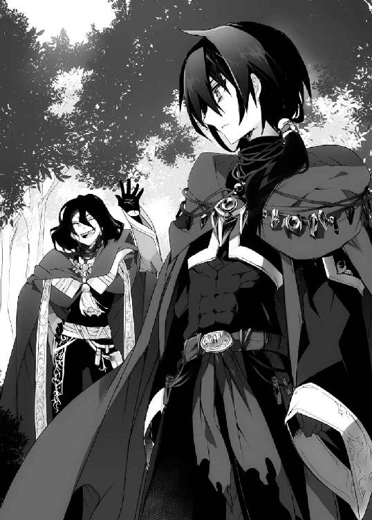
しかしそれも数秒のことで、ザガンは眠たそうに欠伸をもらす。
「おいおい、なんだよ眠たそうだな」
「夜通し魔術書を読み耽ってたんだ。俺はもう寝る。用ならあとにしろよ」
「はっ、眠気なんぞちょいと脳内のアドレナリンをいじってやれば関係ないだろう？ わざわざ俺が訪ねてきてやったのに、つれないことを言うなよ」
「そんなことやってるからお前は不健康な顔なんだよ」
魔術師とは生涯をかけて魔術を研究し、人を超えることを目指す者だ。
魔術を研究するためにはまず生きなければならない。
だからまず、魔術師は己の肉体を操作することから学んでいく。単純な筋力操作だけでなく、体内を細胞レベルで操るのは魔術の初歩だった。それゆえ魔術師は病や寿命からも縁遠い存在になる。
そこまで至って、ようやく魔術師と名乗れるのだ。
ただ、それでも水や食料がなければ飢えて死ぬ。睡眠も誤魔化すことはできるが、払拭することはできないのだ。その結果がいまのバルバロスの顔つきだ。
だからザガンはあまりその手の魔術は使いたくなかった。
バルバロスがおかしそうに笑う。
「そう言うなって。おもしろい話を持ってきてやったんだからよ」
悪人面のわりに、バルバロスは親しげに肩を組んでくる。
「おもしろい話だと？」
うっとうしい友人を腕で押し返しつつも、ザガンは聞き返してしまう。
バルバロスが、痩せこけた顔に笑みを浮かべた。
「おうよ。この前〈魔王〉のひとり――マルコシアスが崩御したのは知ってるだろう？」
その名前には、ザガンも目を見開いた。
〈魔王〉――それは物語で語られるような魔物の王のことではない。
魔術を究めし王の呼び名だ。
その称号と共に絶大な魔力を与えられ、下位の魔術師たちを下僕として従えることができる。魔術師が求めるべき力と権力があるというなら、これこそがその極致だった。
本来は十三人いるこの〈魔王〉だが、うちひとりが一千歳という高齢で、ついに息を引き取ったのだ。魔術は寿命をも遠ざけるが、それでも一千年が限界らしい。
その〈魔王〉がらみと聞けば、ザガンも無視はできない。
「お？ なんだなんだ、聞きたくて仕方がないって顔だな？ いや待て。だがお前は眠たいと言っていたよな？ うーん、残念だがここでお前の恨みを買うのもおもしろい話ではないしなあ」
「もったいぶってないでさっさと言え」
「......相変わらず、愛想のねえ野郎だなあ」
辟易としたため息をついて、バルバロスは言う。
「キュアノエイデスって街があるだろう？ マルコシアスはそこを領地にしていたわけなんだが、そこで大がかりなオークションが開かれる。まっとうな品から俺たち好みの品まで、なんでも流れる」
「まさか......」
ごくりと、咽が鳴った。
「そのまさかさ！ 出るんだよ。〈魔王〉の遺産が」
胡散臭い――まず、最初にそう思った。
しかし彼の〈魔王〉マルコシアスは一千歳の高齢だった。ひと口に遺産と言っても、ひとつやふたつではないだろう。
その中のひとつがオークションに流出したとしても、不思議はなかった。
バルバロスは肘でザガンをつつく。
「だからさ。お前も来いよ。なんだったらいい女のひとりやふたり見繕ってやるからよお。あとはほら、ついでに少しばかりコレを援助してくれると助かるんだがなあ？」
そう言って、二本の指で硬貨の形を作ってみせる。
要するに、オークションに参加したいが資金が足りないらしい。
ザガンはため息をもらしながらも、拒絶はしなかった。
「そういうことなら遺産は俺がもらうぞ？」
「おまっ、そりゃねえだろ？ 教えてやったの俺だぞ」
「いやなら他を当たれよ」
「他に金貸してくれるような魔術師なんているわけねえだろおっ？」
半泣きですがりつかれて、ザガンは結局オークションに連れていかれることになるのだった。
しかし、とザガンは思う。
――女......ねえ。
ザガンとて男だ。女の体に興味がないわけではない。
実際に、先ほどの少女にはグッと来るものがあった。
それでも、複数の女を侍らせている光景には、魅力を感じる前に面倒くさそうだという感想が出てきてしまう。
道具のように扱えばいいという考え方もあるのだろう。だったら口も開かず与えられた役目をまっとうしてくれる普通の魔術道具の方がずっといい。
愛されたいという欲求もなくはないが、自分が相手にそうしてやらなければならないと考えるとこれも面倒だ。
体の魅力よりも、その欲求を果たすことで生じるデメリットの方が目の前をちらついてしまうのだ。だからザガンは未だに女を知らなかった。
――そんなことより、人間は強くないとすぐ死ぬからな。
弱い人間はなにをされても文句は言えない。
自分を守りたければ強くなるしかない。
だから、ザガンは十八歳という若さで力ある魔術師になれたのだ。
......まあ、そんな孤高の魔術師を気取っていられたのも、このときまでの話だったが。
◇
キュアノエイデスは運河の街だ。
大陸の四方へ延びる枝葉を持つこの運河に船を浮かべ、物流の拠点として栄えた街である。商品だけでなく様々な人種が集まってくる。
ヒト以外にも獣のような牙と毛皮を持った獣人族。背に翼を持つ翼人族。背が低く無骨な見た目なわりに、細かな装飾を得意とする小人族などがいる。
それぞれの紋章を掲げた美しい帆船が浮かび、運河から吹き込む風でさえ拭えぬ喧噪と土のにおい。この国でももっとも華やかな街のひとつだろう。一日のうちに百万人以上もの人間が行き来するとまで言われていた。
そんな華やかな街の中に、首輪をつけて鎖で繋がれた人間が何人もいた。
奴隷だ。
ヒトもいれば、それ以外の種族もいる。彼らを連れている人間も、ヒトとは限らない。ヒトの大男を杖で殴っている小人族もいれば、美しい翼人族の女を従えているヒトもいる。地面に置かれた皿から犬のようにミルクをすする獣人族もいた。
彼らの一部も、きっと〝商品〟としてオークションにかけられるのだろう。
奴隷とそうでない人間の差は、金と力を持っているかどうか、そして運がいいか悪いか程度のものだった。
ザガンは、そうなりたくなかったから必死で力を求めた。
だから同情する気持ちは起きなかった。
しかし、とザガンは呟く。
「妙に、ピリピリしているように感じるな」
街の空気だ。
キュアノエイデスに来るのは初めてではないが、教会の騎士たちがあちこち巡回している。街の住民からもなにかに怯えているような、憤りに満ちているような、そんな普段は感じられない気配があった。
バルバロスが愉快そうに笑う。
「どっかの馬鹿が若い女ばかり集めて魔術の実験をやろうとしたらしいぜ？」
「生贄か？ ずいぶん危ない橋を渡るもんだな」
生贄を使えば、個人の力では発動できないような魔術も操ることができる。魔術の触媒としても一般的なもので、それ自体はそう珍しいことではない。
ただ、そうした生贄には奴隷を買うなり身元もわからないような浮浪児を攫うなり、最低限足が付かないようにする必要がある。
わざわざ教会に目をつけられる危険を冒してまで、一般人の少女を攫う意味がわからなかった。これでは教会にケンカを売っているようなものだ。
バルバロスは肩を竦める。
「さあな？ 生まれた日なんかまで限定し始めると、そういう女を攫うなんてことにもなるんじゃないか？」
「魔族でも召喚するつもりか？」
物語に語られるような角と翼を持った怪物の名前だ。それそのものが実在するかは定かではないが、この世界に神や悪魔に相当する〝なにか〟が存在した形跡はある。
そうしたものを召喚するなら、いまバルバロスが言ったような儀式も必要になってくるだろう。だが、夢物語だとザガンは思う。
呆れた顔をしていると、バルバロスがさも愉快そうに笑う。
「そういえばザガンよ、お前、その犯人のひとりだと疑われてるらしいぜ？」
「くだらんな。生贄がなければ使えんような魔術がいざというときに役に立つのか？」
「ひははっ、違いねえ。というか、お前につるむような仲間なんていねえもんなあ」
言われて、思わず肩を落としそうになった。
――まあ、仲間なんて必要ないがな。
孤独には慣れている。慣れているのだ。
そんなことを話しながらも、魔術師たちの目的は観光ではない。
バルバロスが案内したのは街の地下だった。
この地下には古い遺跡――恐らくは闘技場だろう――が残っており、そこを改修して市場にすることで、表では捌けないような商品が取り引きされている。
オークション会場は、闘技場本体部分だった。円形の舞台をステージとして、それを囲むように客席が並んでいる。すでに競売は始まっているようで、数字を叫ぶ声がいくつも響いていた。
灯りがあるのはステージだけで、客席の方には蝋燭も置かれていない。これは不親切ではなく、客同士の顔がわからないようにという配慮だ。
......まあ、魔術師にはあまり意味のないことではあるが。
自分たちの席を確保すると、バルバロスが口笛を吹いた。
「おい、見ろよザガン。《黒刃》のキメリエスに、あっちには《妖婦》ゴメリ。あっちには《亡霊》ウァレフォルなんてのもいるぞ」
明かりを灯さずとも、魔術師を名乗るなら夜眼を利かせる魔術くらいは使えて当然だ。
バルバロスが示す方向に目を向けると、なるほどただならぬ空気をまとった人影がいくつも見て取れる。
ザガンに面識はないが、どれも名の通った魔術師だ。ヒトが大半を占めているが、中には他の種族もチラホラ見かけられる。いま名前が挙がった《黒刃》キメリエスなどは雄々しい鬣を持った獣人族だ。《亡霊》ウァレフォルなどは仮面とフード付きローブで全身を隠していて、種族もわからない。
黒刃の、など枕詞が置かれているのは、魔術師の通り名だ。称号とも言えるだろう。ある程度の力を持った魔術師に与えられるものだった。
有名なところでは、彼の〈魔王〉マルコシアスの《最長老》だろう。バルバロスは《煉獄》の名でも呼ばれている。
ザガンもそれなりに名の通った魔術師ではあるが、まだ通り名は与えられていない。
十八歳という若さのせいもあるが、この辺り一帯を仕切っていた〈魔王〉マルコシアスが他界したのが大きい。その通り名を名付けるのは〈魔王〉の役目だったのだが、ザガンに通り名を与える前に死去してしまった。
つまるところ、通り名とは力の証でもあるのだ。
他人とはいえ、通り名持ちの魔術師となると少しは興味もあった。
「強いのか？」
「強いな。俺やお前と同じく、次の〈魔王〉候補に名前を挙げられているような連中だ」
現在、マルコシアスが崩御したことで〈魔王〉の座にもひとつ空席ができている。
その席をどう埋めるのか、残った〈魔王〉たちが協議中だというが、力ある魔術師の誰かが推挙されるはずだ。
「はっ、あんな連中まで出張ってきてるってことは、遺産の話は本物くさいな」
「そう祈るぞ」
でなければ睡眠を放棄してまで来た意味がない。
そうしている間にもオークションは進んでいく。
『お集まりの皆さま。次はいよいよ本日最後の、そして最大の商品でございます！』
司会の声に、バルバロスが身を乗り出す。
「おい、そろそろみたいだぜ、ザガン」
「ああ」
まだ〈魔王〉の遺産などというものが本当にあるのかはわからないが、今回の目玉が舞台に上がるころ合いだった。
やがて舞台に上がってきたのは、頭からフードをかぶった小柄な人間だった。足元までマントで隠されており、人種すらわからない。小人族というほど小さくはないが、他の種族なら子供くらいだろう。
問題の遺産は、フードの人物が持っているのだろうか？
会場中の人間が注目すると、司会が説明を始める。
『こちらは本来、彼の〈魔王〉マルコシアス様が納品される予定の商品でございました。しかしながら商品が届く前にマルコシアス様は逝去され、宙に浮いてしまった商品をわたくしどもが取り寄せた次第でございます』
その言葉に、バルバロスは顔をしかめる。
「遺産じゃねえのか？」
「〈魔王〉の触媒のひとつということだろうな」
魔術を行使するには魔法陣を描いて呪文を唱えるだけでなく、道具を用いることもある。魔法陣を描くためのインクから、魔術師が身につける装飾品、他にも魔術の力を高めるための生贄などだ。
そんな道具を触媒と呼ぶのだが、この触媒の善し悪しで力の差が現れることもある。
遺産でないのは残念だが、〈魔王〉が選ぶほどの触媒というのは興味を惹かれた。
そして、司会はフードの人物からマントを取り払った。
そこに現れたのは、ツンと長い耳を持つ可憐な少女だった。
ひと目でわかる。
人が踏み入ることの敵わぬ北の聖地にのみ住まうという、伝説の種族――エルフだ。
腰まで覆う真っ白な髪。そしてその髪を飾る深紅のリボン。小さな顔に嵌まる大きな瞳は夏の空のような紺碧で、唇は控えめで薄い桃色だった。華奢な肢体は純白のドレスに包まれ、どこかの姫君と言われれば信じてしまいそうな容姿だ。
だが、その手足は枷が、首には魔力を封じる首輪が嵌められていた。
その少女の瞳を見て、ザガンは胸が震えるのを感じた。つま先から頭の天辺までなにかが駆け抜けるような感覚。
昏く、空虚な瞳。
なにも映さず、なにも思わず、未来の全てを諦めてしまった者の目だ。
なのに、なぜかその瞳から目を離せない。
『北の聖地にて捕獲された伝説の種族エルフでございます！ しかもなんとご覧の通り白髪でございます。染め物ではございません。天然の白髪エルフでございます！』
エルフは人間というより神や精霊の一種だとも言われていた。
そして種族に関わらず白い髪の個体というのは変異種のようなもので、高い魔力を持つことが多い。
白髪のエルフなど、生贄に使えばまさに魔王のごとき力を得ることができるだろう。
司会はエルフの少女の後ろに回ると、その髪をしゃらりと指で掬う。
『加えて雌としても上物でございまして、単なる魔術の贄としてだけでなく愛玩奴隷としての価値も非常に高くあります。まさしく嬲るもしゃぶるもお客様の自由！』
司会は高らかに宣言する。
『それでは一万から始めて参りま――』
「百万だ」
気がついたときには、ザガンはそう宣言していた。
――この胸の高鳴りはなんだ？
愛しい――そう、表現すればいいのだろうか。
あんなところに立たされたエルフの少女を助けてやりたい。笑った顔を見てみたい。そして、その肌に触れてみたい。
そんな、かつて感じたことのない衝動がザガンを衝き動かすのだ。
しんっと、会場が静まり返る。
ひくっと、隣でバルバロスが顔を引きつらせる。
「お、おい、ザガン......？」
「キュリオテス金貨で百万枚だ」
それは、ザガンの城にある全財産だった。
面食らった司会は、ハンカチで額の汗を拭いながら声を張り上げる。
『ありがとうございます！ 素晴らしい金額が出ました。百万です！ 続かれる方はいらっしゃいませんか？ いらっしゃらない？』
魔術師は魔術の研究に没頭するため、財産を貯め込む傾向が強い。
しかしいくら財産を貯えているとはいえ、百万という金額はそうそう出てこない。単純に所持している者なら何人かはいるだろうが、それをはたけば研究が立ちゆかなくなる。そういう金額だった。
「おいザガン、なに考えてんだよ。いくらエルフったってそんな大金はたくなんて......」
「ずっと欲しかったものがあるんだ。だがそれがなんなのかわからなかった。やっと、それを見つけた気がするんだ」
この感覚をどう説明したらいいのかわからず、ザガンはうわごとのように呟く。
だが、爛々と輝く瞳は傍目から見るとひどく邪悪だった。欲情に駆られているのだから当然のことではあるが。
怯えるように、バルバロスが目を見開いた。
「お前、一体どんな魔術を使うつもりなんだ......？」
バルバロスはなにか勘違いをしているようだ。
ザガンは頭を振る。
「そういうのじゃない。もしかすると他の魔術なんて必要なかったのかもしれない。上手く言えないが、そういうことなんだ」
「魔術ですらない、次元の違う力を手に入れるっていうのか......っ？」
なにか言い方を間違えたらしい。バルバロスは戦慄していた。
これ以上口を開くと、余計におかしなことになりそうだ。ザガンは違うという意味を込めて笑い返すが、彼もこれで気が動転していたのだ。悪魔のような笑みになっていた。
ペタンと、腰が抜けたようにバルバロスが尻もちをついていた。
――またなにか間違えたか？
悪友への弁解がどんどんドツボに嵌まっていく中、やがて、落札を告げる木槌の音が響いた。
「おめでとうございます！ 白髪のエルフは魔術師ザガン様が落札されました！」
名乗った覚えはないが、司会はザガンの顔を見て名前を言い当てた。それだけ、この業界でも顔の広い人間なのだとわかるが、どうでもよかった。
ザガンは席を立つと、へたり込んだままのバルバロスを置いて飛行魔術を使う。
観客席を飛び越えると、ふわりと舞台へと下りていった。
少女の前に立つが、彼女は下を向いたまま顔を上げようとはしなかった。
――どうしよう。なんて声をかけたらいいんだ？
勢いよく飛び出したはいいものの、その先のことはなにも考えていなかった。
いきなり戸惑っていると、司会が猫なで声で話しかけてくる。
「どうぞお納めくださいまし。高名な魔術師ザガン様に落札されるとは運のよいエルフでございますなあ。ちなみにドレスと魔力封じの首輪はサービスとなっております。首輪を外されますと逃げられる危険がございますのでご注意ください」
「ああ」
司会がなにを言っているのか耳に入っていなかったが、ザガンは適当に相づちを打つ。
――せめてこっちを向いてくれないかな？ でもやっぱり怖がってるよな。というか酷い目に遭わされたりとかしてないよな？
こんな綺麗な少女だからこそ、口に出すのもおぞましい目に遭わされるということもあるだろう。今朝の少女のことだってある。
不安になってきて、少女の顎にそっと手を伸ばす。
絹のように滑らかな肌。ザガンが触れれば傷をつけてしまうのではないかと不安になるほどだ。
それでもできるだけ優しく触れてみると、少女の顔がわずかに上を向いた。
虚ろな瞳がザガンを見つめる。
我知らずため息がもれる。やはり可憐な少女だ。
しかし、どこか焦点が合っていない。ザガンのことが見えているのかも怪しい。いや、それ以前に意思のようなものさえ感じられなかった。
――だ、大丈夫か？ 操られたりしているわけじゃないよな？
意思を剝奪するような魔術は珍しくもない。
青ざめるザガンに、司会もおろおろした声をもらす。
「ザガン様？ なにか、不具合でもございましたでしょうか？」
「......いや、こいつに意識はあるのか？」
ひくつく咽からこぼれたのは、不安というより機嫌の悪そうな声だった。自分でもなにを怒っているのかと聞きたくなるくらいだ。
だが、司会は納得したように頷く。
「ご安心くださいまし。このエルフは捕獲当初からおとなしく、自然体のまま保管されてございます。そもそも個体としての魔力が凄まじく高く、並みの魔術では効果を持たないのでございます。ですので、鮮度はわたくしどもが保証いたします」
生贄などを使う場合、魔術で拘束や洗脳をしていると、それが混じり気となって儀式の精度が落ちることがある。司会はザガンがそれを気にしていると思ったらしい。
しかし、貴婦人のように飾り立てられたエルフの少女に、見たところ怪我のようなものはなさそうだ。扱いは奴隷とはいえ、これほど高価な〝商品〟を傷ものにするほど競売の運営係は愚かではない。そのあたりは信用してもよさそうだった。
ザガンもようやくホッとして吐息をもらす。
「信じよう。こいつにはせいぜい、いい声で囀ってもらわねば困るからな」
まずはきちんと話してみたい......と言いたかったのだが、盛大に言い方を間違えた。
司会が青ざめて後退る。
エルフの少女も、ピクリと怯えるように震えた気がした。
――あ、よかった。こっちの言っていることは聞こえているんだな。
そのことに安心したザガンは、自分がどれだけ紛らわしいことを言ったのか理解していなかった。
これが、数刻前まで〝女なんて面倒くさい〟などと思っていた男の、人生で初めての一目惚れだった。
そして、いまに至る。
滞りなく支払いを終え、居城に戻ったまではよかった。しかしそれからどう話しかけたらいいかもわからず悶々と半刻も経ち、少女が初めて口にしてくれた言葉が――
――わたしは、どのような殺され方をするの......でしょうか――
だった。
鈴を転がすような声とは、こういうのを言うのか――などと余韻に浸る間もなかった。
手足の枷こそ外してあるものの、首には魔力封じの首輪がつけられたままだ。
これも外してやりたいとは思うが、ザガンでもそう簡単に外せるものではなかった。司会も外し方はわからないらしく、鍵のようなものもない。
恐らく、本来の購入者である〈魔王〉の遺物だろう。これに関しては時間をかけて調べていくしかない。
表情こそ浮かんでいないが、悲壮な声で少女は訴える。
「どういった死に方をするのか知っていれば、少しは覚悟もできるかと......思います」
少女の無表情は、緊張によるものではなく諦観から来るものだったらしい。
ザガンは慌てて声を上げる。
「待て待て待て！ お前を殺すつもりはない。というか、生きていてもらわねば困る！」
安心させるつもりで言ったのだが、なぜか少女の表情はさらに曇ったように見えた。
「つまり、死んで楽になるような終わりはない......ということ、ですか？」
心なしか青ざめた様子で少女が見上げるのは、天井からぶら下がる鎖と、そこに引っかかる白骨だった。
冷や汗が頬を伝う。
――違うんだ。あんなところ魔術を使ってまで片付けるのが面倒だから放っておいただけなんだ！
この城はもともと別の魔術師の住み処だった。
少女の落札に使った財産もその魔術師が遺したもので、厳密にはザガンが貯えたものではない。
しかし前の持ち主は良くも悪くも典型的な魔術師で、城内には拷問器具や魔術道具、白骨死体などがごろごろ転がっていた。天井からぶら下がる骨もザガンの趣味ではないが、この状況で違うと言っても説得力はないだろう。
気が動転しつつも、ザガンは平静を取り繕って言う。
「安心しろ。あんな物騒なものをお前に使うつもりはない。痛めつけるつもりもない。お前が恐れるようなことは、なにもしない」
あまり優しく言ってやることはできなかったが、自分にしては伝えるべき言葉を口にできたと思った。......そこに説得力があるかは別の話だが。
やはりというか、少女は不思議そうに首を傾げてしまう。
「......？ では、なぜわたしをお買いになったの......ですか？」
「うぐっ、それは......」
当然の疑問だろう。
しかしザガンの性格上、一目惚れしましたなどと答えることはできなかった。
――こういうときどうすればいいのか、バルバロスに聞いておけばよかった......。
あのあとオークション会場に置いてきてしまったが、なぜ彼はついてきてくれなかったのだろう。
彼もあまり女性経験が豊富には見えないが、それでも〝女を見繕う〟などという言葉が自然と出てくるくらいなのだ。少なくとも、ザガンよりは女性との接し方をわかっていただろうに。
追いつめられたかのように呻くザガンの口を衝いて出たのは、こんなセリフだった。
「お前が知る必要はない」
――なに言ってるんだ俺はぁっ！
心の中で絶叫を上げる。
ただ、少女の方は意外なことに表情を変えなかった。心なしか落胆しているように見えなくもないが、その程度だ。
――この平静さは、少しおかしくはないか？
表情に出にくいというのはあるかもしれないが、それ以前に少女は全てを諦めきっているように見える。
捕まってから、身体的にはなにもされていないという話ではあるが、一体なにがあったのだろう......。
「お前......」
言いかけて、ザガンは彼女の名前すら知らないことに気づく。
――というか向こうも俺のことをなにも知らないはずだよな。
ようやく、会話の糸口が摑めたような気がした。
「俺の名はザガンだ。見ての通りの魔術師だが、別に拷問の趣味はない」
「はい」
「それでだな、お前は............」
名前を訊くだけだと言うのに、ザガンは言葉の先が出てこなかった。
――バカな......！ 名前を訊くだけだというのに、女の子だと意識するとなぜこうも気後れしてしまう！
ザガンはすでに魔術師としてかなりの力を持っている。
だというのに、勝ち目のない死地に挑むかのような勇気が求められていた。
勇気――自分には無縁だと思っていた言葉だ。
だがしかし、ここで奮い立たなければ一歩も前に進めないのだ。
「お前は――」
口を開いたところで、少女は「あ」と声を上げた。
「申し、遅れました。わたしは、ネフェリアと、申します」
胸の中を涼やかな風が吹き抜けたような感覚だった。
どうやらザガンの言いたいことを察してくれたらしい。よく気が回る素敵な少女だと思った。
「ネフェリア......か」
何度も繰り返したくなるような響きだ。
神話の中に〝天から落ちてきた者〟という意味のネフェリムという言葉がある。その女性形だろうか。神秘的で素敵な名前だと思った。
――外見と同じで、綺麗な名前だな。
名前がわかっただけで、舞い上がりそうな気分だった。
恋愛が人を破滅させるという言葉の意味が嫌というほどわかる。
常にハイな状態とでも言えばいいだろうか。こんな異常な精神状態のままでいたら、どれほど優れた人間でも破滅するだろう。
――だがネフェリアというのは、ファーストネームなのかファミリーネームなのか。
ゆるみそうになる顔を引き締め、ザガンは問いかける。
「ネフェリア......なんと言うのだ？」
「ネフェリアだけです。姓はありません。呼びにくければネフィと呼んでいただければ」
「いいのか！」
「はい？」
ネフェリアという名前も美しい響きだが、ネフィという愛称も可愛らしい。
思わず声が出てしまい、少女――ネフィが首を傾げた。
――というか、姓がないとは俺と同じだな......。
物心ついたときにはゴミ溜めで追いはぎをしていた。
姓どころか親の顔も知らない。ザガンという名前も下町のスラングで、悪魔かなにかのように忌むべき者としてつけられたものだ。
――思えば、あのころが一番楽しかったな。追いはぎ仲間や街の人間もちゃんと口を利いてくれたし。ボコボコに殴られることも多かったけど、なんだか充実してた。
やっていたことは確かに悪事だが、まだ陽の光の当たる場所にいられた。女の子とも自然に話すことができたのだ。ザガンの人生で陽だまりの記憶と言えばあの時期だろう。
と、そこでネフィがキョトンとしていることに気づいて頭を振る。
「エルフでは、その、一般的なのか？ 姓がないというのは」
「いいえ。わたしは呪い子でしたから」
「呪い子......？」
なにやら聞き捨てならない単語が聞こえてザガンは眉を顰めた。
ネフィは口が滑ったというように口元を押さえる。
「あの......。なぜそのようなことを聞かれるのですか？」
「いや、少し気になってだな......」
名前や呪い子の意味だけでなく、とにかくネフィのことをなんでも知りたいというだけのザガンは言い淀む。
ネフィはまた察したように頷くと、どういうわけかスカートの前の裾を持ち上げた。
真っ白なふとももがさらけ出され、繊細なレースを編み込んだショーツまでもが垣間見えてしまう。
「ご安心ください。わたしは処女です」
自分の顔が赤くなるのがわかった。
「お、お前、自分がなにを口走っているのかわかってるか？」
「......？ 魔力は処女の方が高いと言われています。実験材料としての価値が損なわれていないかという話では？」
「勘違いをするな。俺はお前を実験に使うつもりもなければ拷問にかける気もない」
ネフィはなおのこと意味がわからないという顔をする。
「では、なぜわたしは買われたのですか？」
「............」
ザガンは眉間を押さえて黙り込んでしまう。
「それはお前が知る必要はないことだ」
そしてまた同じ言葉を繰り返してしまう。
というか、答えられない。
闇オークションで一目惚れしたから有り金はたいて買い取ったなど、誰がどう聞いてもただの変態だ。ネフィからそんな目で見られたらザガンは立ち直れない。いくら魔術師が不老長寿だとしてもショック死する可能性まで考えられる。
――とはいえ、なにも答えないでいるとネフィも不安だろうしな。
一体、どうすればいいのか。
今日のところは一度帰らせてあげるべきか......。
――いや、そもそも帰るところなんてあるのか？
先ほど〝呪い子〟という不穏な単語も口にしていたし、そのことに関しては聞かれたくなさそうに思えた。外ならぬザガン自身も帰るところなどない身だし、姓を持たないところからも同じような気配がする。
もちろん故郷に帰りたいというなら力になってあげたいが、軽はずみに訊ける雰囲気には思えなかった。
となると、彼女の身柄はザガンが買い取ったわけであるし、当面はここでいっしょに生活していくことになるのだが......。
――はっ、いっしょに暮らすっ？
未だにまともに口も利けないでいる自分が、こんな可憐な少女と同じ屋根の下ふたりっきりで暮らすというのか？
軽い目眩を感じた。
自分はなんて大それたことをしてしまったのだろう。
いやもちろん嬉しい事実ではあるのだが、なんだかいけないことをしている気分になってきた。
――落ち着け。俺は魔術師だ。力ある魔術師はうろたえない。
なにも同衾することになったわけではないのだ。まずは性活......もとい生活するならなにが必要なのかを考えよう。
ザガンは玉座から立ち上がり、ネフィの前に立つ。
「ネフィ」
「はい」
面と向かって名前を呼んでみると、奇妙な気恥ずかしさが込み上げてきた。
それでも怯まず、ザガンは語りかける。
「ネフィよ、お前は俺が買った俺のものだ」
「はい」
「だからまずはお前に部屋を与えよう。好きな部屋を選ぶがいい」
「つまり、死に場所を選ばせていただけると？」
「殺さないとさっきから言っているだろうっ？」
とうとう嘆きの声を上げると、ネフィは困ったように俯く。
「わたしがそうしていただく意味が、わからないんです。どういう使われ方をするにしろ、わたしは、死ぬわけではないのですか？」
きっと、彼女は人間に捕らえられてからずっとそう聞かされてきたのだろう。希望を信じたくなくなるほどに。
実は、ザガンにも似たような覚えがあった。
ゴミ溜めのような貧民街で残飯を漁りながら、追いはぎをしていたころのことだ。
――あのとき、俺はどう言ってほしかったんだっけ......。
当時でも、きっと答えなどわからなかったのだろう。
それでも、ザガンはそっとネフィの髪に手を伸ばした。
手の平に真っ白な髪が触れる。ネフィがピクンと身を震わせたのがわかった。
そのまま、手に力を入れないようにしてザガンはこう言った。
「俺は、お前が必要だから買ったんだ。だからそう死ぬ死ぬ言うな」
ネフィは大きく目を見開いてザガンの顔を見上げた。
驚いている。
彼女と出会ってから、こんなに表情らしい表情は初めて見た。
「必、要......。わたしが......ですか？」
なんだか気恥ずかしくなってきたが、これはきちんと伝えておかなければならないと思った。
「ああ、お前が必要だ。だからまずは俺のために生きろ」
「......はい」
あいかわらずネフィは表情を動かしてはくれなかったが、ザガンの言葉を疑うような顔も見せなかった。
こんなことでザガンの全てを信じてくれたわけではないだろう。それでも、彼女は自分は死ぬのだろうと嘆くようなことは言わなくなった。
これが、ふたりの長い共同生活の始まりだった。
◇
「さて、お前に与える部屋だが......」
どこがいいだろうか。
ネフィは奴隷として捕まっていたのだ。きっと辛い思いをしてきたはずだ。地下などの暗い場所より景色の綺麗な部屋がいいだろう。
なら、城の最上階は尖塔になっている。景色というならそこが一番のはずだ。
そこに案内しようとして、ふと気づく。
「ネフィ、お前は高い場所は平気か？」
これは自分でも、かなり自然に聞けたと思った。
ネフィは表情を浮かべないまま、コクンと頷く。
「はい。手でも首でも吊っていただいてけっこうです」
「誰が拷問をすると言ったかなっ？」
「もうしわけ、ありません。高いところと聞いて、他に思いつきませんでした」
キョトンとするネフィに、ザガンは頭を抱えた。
――もっと生きる希望を持とうよ......。
こうなると高い部屋は問題だろうか。まさかとは思うが、ネフィが身投げする危険が頭をよぎった。
それでも螺旋状の階段を上り、最上階へと向かう。
外は陽が暮れてしまったようだ。
パチンと指を鳴らすと、壁に並んだ蝋燭がいっせいに灯火を宿す。
「こっちだ」
「はい――あっ」
ザガンが再び階段を上り始めると、ネフィが小さな悲鳴をもらしてよろめいた。
揺らめく蝋燭の炎は、灯りとしては少し心許ない。足元は暗く、ネフィの靴は踵の尖った歩きにくそうなものなのだ。
ザガンは、とっさにその手を取って支えた。
「もうしわけ、ありません......」
そういう少女の顔は、鼻と鼻が触れ合いそうなほど近くにあった。
ほのかに甘い香りが鼻をくすぐる。
白いまつ毛に縁取られた、紺碧の瞳を真っ直ぐ覗き込んでしまう。
思わず見惚れてしまい、同時に強烈な気恥ずかしさが込み上げてきた。
それを誤魔化すように、ザガンはフンと鼻を鳴らす。
「き、気をつけるんだな。足元をよく見ろ」
「は、い......」
キツイ言い方をしてしまっただろうか。ネフィはどこかたじろいでいるように見えた。
そのまま螺旋階段を上ろうとして、手の中に柔らかな感触があることに気づいた。
――あれ？ 俺はもしかして、ネフィの手を握っているのか？
支えたときに握っていたのだろう。そしてそのまま何気なく手を引いてしまっている。
たぶん、初めてではないとは思うが、女の子と手を繋いだ記憶など思い起こすのも難しい。......やっぱり初めてかもしれない。
真っ白な手は細くて、柔らかくて、あたたかかった。
手の平ごしに、鼓動が感じられる。もしかすると自分のものかもしれないが。
ネフィは意外そうにその手を見つめながら、なにも言わずについてくる。
言いしれぬ羞恥心が込み上げるが、この手を離すのも嫌だ。
早足になったりゆっくりになったりしながら、ザガンは最上階へと上っていった。
三階分ほど上ると、最上階の扉が見えてくる。
ここをネフィの自室にすると、少し上り下りが大変だろうかと悩むが、ひとまず扉に手をかけた。
「普段は使わん部屋だ。多少、汚れているかもしれんが......」
そう言って『そもそもこんなところ入ったことあったっけ？』という根本的な疑問が脳裏を過ぎった。
ここに住み始めて十年になるが、普段は書庫にこもっていて、城内の全てを把握しているとは言えない有様なのだ。
そして、その疑問をきちんと確かめるべきだったと後悔する。
涼やかな風が吹き込むその部屋には、ギロチンの鎌が音を立てて揺れていた。
他にも、長年放置されていたらしい白骨死体や得体の知れないものが詰まったビンが転がっている。蝋燭の火の薄暗さも手伝って、最悪に気味の悪い場所だった。
「ここはやめておこう」
すかさず扉を閉めるが、少し遅かった。
人は、希望を与えられたときこそ絶望するものである。
必要だといった矢先に拷問器具を突きつけられ、ネフィの瞳から意志の光が消えた。
全てを投げ出すように少女は両腕を広げる。
「どうぞ、ご主人さまのお望みのまま」
「違うからな？ これは、あれだ。......そう！ 上空から侵入する敵に備えての罠だ」
言っていて、自分でも苦しい言い訳だと思った。
「だがまあ、あれだ。無用な備えではあるし、こんなものがあっては邪魔だろう。処分してやる」
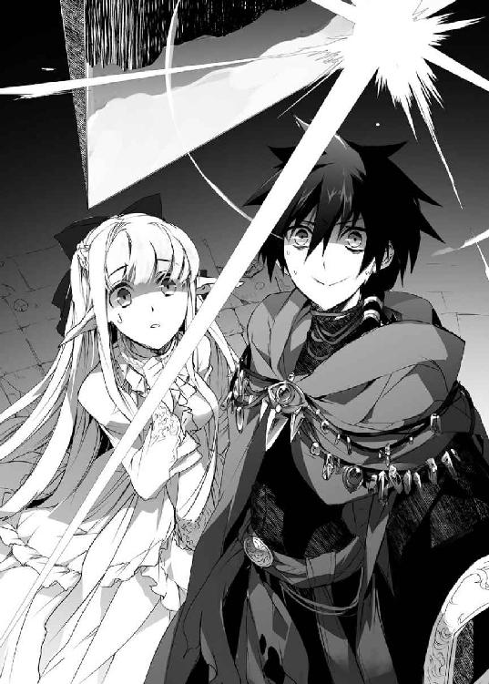
そう言って、ギロチン鎌の揺れる室内に電光の魔術を投げ込み、扉をもう一度閉めた。
直後、爆音が弾ける。
扉の隙間から衝撃がこぼれ、ネフィの真っ白な髪がフワリとなびいた。思わずそれに見惚れていると、ばたんと扉が部屋の内側に向けて倒れた。
どうやら蝶番まで砕けたらしい。
果たして、部屋の中から先ほどまでのおぞましい物体は綺麗さっぱりなくなっていた。
......まあ、天井まで黒こげで、部屋として機能するのかは疑わしかったが。蝋燭さえも消し飛んでいる。
つうっと、頬を冷や汗が伝う。
――そ、それでも恐怖の原因は取り除いたはずだ。
怖る怖るネフィに振り返ると、彼女は心なしか青ざめていた。
震える唇が開く。
「こんな破壊的な魔術は、初めて見ました......」
――そりゃあいきなり攻撃魔術なんてぶっ放したら怖いよね！
しかも控えめに見ても、並みの魔術師なら三回は灰になっているような威力である。これで動じない一般人はいないだろう。
――違うんだ。いままでまともに会話するような人間なんてバルバロスくらいしかいなかったから、つい......。
魔術師同士の感覚でやってしまったのだった。
どうしようもなくなって、ザガンは部屋に背中を向けた。
「......うむ。ここは、よくないな。殺風景すぎる」
「これは、殺風景と呼ぶのでしょうか？」
小鳥のように首を傾げる少女に、ザガンはなにも言い返せなかった。
ネフィは部屋の中に足を踏み入れる。
歩くたびに灰がパラパラと舞い上がる。窓にもガラスはなく、部屋と呼ぶより鳥籠かなにかのようだ。とてもではないが、女の子が足を踏み入れていいような場所ではないだろう。
それでも、ネフィは気にした様子もなく中へ進みテラスへと出る。
――これ、転落防止の結界かなにか張っておいた方がいいかな。
さすがにネフィが身投げをすることはないと信じたいが、ザガンが魔術をぶち込んでいるのだ。最悪、ここが崩れるようなことだって考えられる。
万が一に備えながらザガンもネフィの隣に並ぶ。
テラスにも石煉瓦の手すりはあるものの、これもひび割れていていつ崩れてもおかしくない。
そんな手すりに手を乗せ、ネフィは空を見上げていた。
夜になって、少しは雲も晴れたらしい。糸のように細い孤月が浮かんでいた。
空に向かって、ネフィが両手を伸ばす。
何気ない仕草だというのに、なにか神聖な儀式でも見ているような感覚に陥った。
「月が、好きなのか？」
「......わかりません」
問いかけるザガンに、ネフィは困ったように首を横に振る。
「なら、その仕草にはなんの意味があるのだ？」
「......わかりません」
今度はわからないとばかり言うようになってしまった。
だが、月を見つめるネフィの瞳には、郷愁のような切なさが滲んで見えた。
なんとなく、ザガンもそれに倣って手を伸ばす。
「なにも摑めんな」
「......だと思います」
真顔で答えられ、羞恥心で死にたくなった。
どうしてこういうときに気の利いたセリフのひとつも思いつかないのだろう。
それから、ネフィが呟く。
「この部屋を、いただいても、よろしいでしょうか？」
ネフィの方からそんなことを言ったのは、初めてのことだった。
しかしザガンは怖る怖る部屋の中に振り返る。
物騒な代物は確かになくなったが、代わりに窓ガラスすらもなくなっているのだ。人が生活できる空間には思えなかった。
――魔術で修復すると、ギロチンまで修復されるんだよな。
掃除や補強を人力でやらなければならない。
「もう少しまともな部屋が......」
言いかけて、どこの部屋も似たり寄ったりだと思い出す。
拷問器具がなくとも不気味な魔術道具は転がっているのだ。結局、女の子が使えるような部屋ではないだろう。
悩んでから、ザガンは言う。
「こんな場所でいいのか？」
「はい。ご主人さまが用意してくださった部屋ですから」
攻撃魔術をぶち込んで全部灰にしただけである。これは用意したとは言わないと思うのだが......。
しかし他の部屋ならマシかといえば首を傾げざるを得ないので、結局ザガンは頷いた。
「よかろう。ならばここを好きに使うがいい」
つい大仰な言い方をしてしまうが、ネフィはペコリと頭を下げてこう言った。
「ありがとうございます、ご主人さま」
そのひと言は、なぜか胸に染みた。
ネフィが首を傾げる。
「どうかなさいましたか？」
「......いや、そんなことを言ってもらったのは、ずいぶん久しぶりだと思ってな」
たまに城に迷い込んだ人間を殺さずに逃がしてやることはあったが、ザガンも人相のいい人間ではない。
たいていの場合は脱兎の勢いで逃げられ、礼を言われることなどなかった。
しかしネフィはそれを不思議がることもなく、納得したように頷いていた。
「わたしも、ずいぶん久しぶりに言った気がします」
「そうか......」
いつか、自分も誰かに〝ありがとう〟と言う日が来るのだろうか。
打ち解けたというにはほど遠いが、まともに口を利いてもらえるようになったのは素直に嬉しかった。
そうして、最初の一日は更けていった。
◇
翌朝。
ネフィに最上階を与えたものの、とうてい寝泊まりできる場所ではなく、その日はふたりで玉座の間で眠った。
――というか、一睡もできなかった。
前日も寝ていないのだ。すぐに眠れるかと思ったのだが、隣にネフィがいるのだと考えたら目が冴えてしまったのだ。それでいて実際になにかする度胸もなかったし、それで嫌われることを考えたらなにもできなかった。
反面、ネフィの方はやはり疲れもあったのだろう。
絨毯の上で丸くなるとそのまま眠ってしまった。
しかしこれもザガンが眠れなくなった原因のひとつではある。こんなにも無防備な姿をさらされ、なにも考えずにいろというのが無理な話である。
夜中、ネフィが寒そうに見えたので布団代わりに自分のマントをかけてやったのだが、これもよくなかったかもしれない。なぜかこの可憐な少女が自分のマントを羽織っているのだと考えたら胸が高鳴ってしまったのだ。
そうして悶々としているうちに、気がついたら朝陽が昇っていた。
腹がぐうっと情けない音を立てた。
「......飯でも食うか」
ザガンは地下の倉庫へと下りると、保管している干肉とミルクをふたり分持ち出す。ネフィがいつごろ起きるかはわからないが、ご飯くらいはすぐに食べられるようにしておいてあげよう。
玉座の間に戻ると、目を覚ましたネフィが正座をして待っていた。布団にしていたマントは綺麗に畳まれている。なんだかもう一度羽織るのがもったいない光景だ。
「起きたか」
「はい。おはようございます、ご主人さま」
ザガンは思わず顔が綻びそうになった。
――挨拶はちゃんとしてくれるんだ。
自分も挨拶を返そうとして『あれ？ おはようって言ってもらったらなんて返すんだっけ』と頭を抱える。
そのままおはようと返せばいいのか。それともこんにちはと答えるものだったか。ごきげんよう、はさすがに違うとは思うが。
思えばそんなまともな挨拶をしてもらえたのなど何年ぶりだろうか。
悶絶していると、ネフィが呆然としてザガンを見つめていた。
コホンと咳払いをする。
「食事を持ってきた。食べるがいい」
言ってから、なんだか自分が嫌になった。
――挨拶もちゃんとできないのか俺は......。
いつの間に自分はこんな駄目な人間になってしまったのか。
......思えば初めから駄目な人間だった気がする。
懊悩するザガンを不思議そうに眺めながらも、ネフィは素直に干肉とミルクのコップを受け取ってくれた。
「ありがとうございます、ご主人さま」
「......うん」
不甲斐ない自分に消沈していると、ネフィが怖ず怖ずとザガンを見上げてきた。
「ご主人さま」
「なんだ？」
「わたしは、なにをすればよいでしょうか？」
「うむ、そうだな......」
ひと晩経っても、ネフィになにをしてもらうべきか思いつかないでいた。
――掃除でもしてもらうべきか？
しかし昨日はひと部屋覗いただけで大惨事だった。
そんな汚部屋がこの城には五十近くもあり、しかもいままで一度も掃除などしたことがないのだ。とてもひとりの手に負えるものではないし、なんだかこの少女は命じたらやり遂げるまでやってしまいそうな気がする。
そもそもザガンは美観にこだわっていないし、興味もないのに死ぬような思いをさせてまでやらせるのはどうかと思う。
だが、そうなるとなにをやらせればいいのか。
――なにもすることがないのも不安だろうしなあ......。
自分は生贄か実験動物だと教え込まれてきた少女だ。
なのに自分を買った男にただそこに突っ立っていろと言われて『あ、なにもしなくていいんだ』と喜ぶとも思えない。
唸りながらも答えは出ず、ザガンも床にミルクのコップを置いて干肉をかじり始める。
ネフィが意外そうな顔をした。
「ご主人さまも、同じものを食べられるのですか？」
「......？ なにかおかしいか？」
「いえ、あの......」
なにか言いたいことがあるようだが、ネフィはとても口に出せないというように視線を宙に彷徨わせる。
「言ってみろ。別に怒りはしない」
もう少し親しみやすい言い方はできないのかと自分に悪態をつきながらも、なんとかザガンはそういった。
ネフィは表情こそ変わらないものの、ひどく言いにくそうに口を開く。
「わたしは、食事をいただけるだけで光栄です。ですが、ご主人さままで同じものを食されるのが不思議で......」
彼女なりに精一杯、疑問を言葉にしてくれたのだろう。
ザガンは腕を組んで考える。
いったい、ネフィはなにを不思議がっているのだろうか。
目の前にあるのは汚れたカップに注がれたミルク。そしていつからあるのかもわからない干肉だけだ。
――ん？ そういえば昨日、街でこんなものを食べてた連中がいたな。
そうだ。確か、キュアノエイデスで見かけた奴隷たちだ。
街中で見るとずいぶん哀れだったが、よく考えたら自分が食べているのも似たようなものだった。
ふむ、とザガンは頷いて口を開く。
「もしや、これは質素な食事なのか？」
「その、はい......。わたしのような奴隷に与えられる部類のものだと思います」
つまり食事というより〝餌〟だということだ。
しかし腹を立てているというよりは、純粋に嘆かれている。いや、むしろ――
――心配、されているのか？
いや、それも少し違うかもしれない。
昨日の今日でいきなり心を開いてくれたわけではないだろう。
そういうことではなく、相手が誰だったとしても見ていられないというような、たとえるなら『この人、自分がどうにかしてあげないと死ぬんじゃないか？』という同情めいた反応に思えた。
ザガンは自分がもしゃもしゃとかじっていた、しなびた干肉を眺める。
――あー、そうなんだ。これ、食事って呼ばないようなレベルの食いものなんだ。
追いはぎ時代からこういうものしか食べてこなかったため、疑問にも思わなかった。食料など飢えさえ満たせればなんでもいいくらいにしか考えていなかったのだ。
干肉以外には固くなったパンなども食べていたが、あれはすぐにカビが生えて食べられなくなってしまう。それでも何度か無理矢理食べてみたことはあるが、そのあと腹痛で悲惨な思いをした。
――昨日から空回りしてる自分を振り返ると、あのパンの味を思い出すなあ。
初恋はレモンの味だというたとえを聞いたことはあるが、現実には腹を下しそうな酸っぱさだった。
素直に美味しいと感じたものと言えば酒だろうか。バルバロスが馬鹿を言いながら持ってきてくれた酒は本当に美味しかったが、そのときのつまみも干肉だった。
酒も自分ではどれを買ったらいいかわからず、結局干肉生活を続けたのだ。
「普通の人間って、どういうものを食べるんだろう......」
我知らずそうこぼすと、ネフィが意を決したように口を開いた。
「あの、ご主人さま」
「なんだ？」
小さく深呼吸をしてから、ネフィはこう言った。
「差し出がましいかもしれませんが、わたしが、なにか作りましょうか？」
ガタッと、ザガンは立ち上がった。
ビクッとして後退るネフィの手を握り締める。
「料理ができるのか？」
「見様見真似なので、味は保証しかねますが......」
なんと有能なのだろう。
――手料理――
それも恋した少女が作ってくれるという。
この選択肢はザガンの中にはなかったものだ。
――そういえば、人間の三大欲求の中に食欲っていうものがあったな......。
魔術の研究ばかりで、そういった欲求を満たすことを考えていなかった。
目頭が熱くなる。
込み上げるこれは涙だろうか？ まさか自分の中にこんなものが残っていたなど驚愕すべき事実だ。
ザガンはミルクを一気に飲み干した。
「ふっ、ネフィよ。やるべきことが決まったな」
「はい。なにをいたしましょう」
「街へ買い物だ！」
この城に、食料などしなびた干肉と古いミルクしかない。このふたつだけでは料理を生み出せないことくらい、ザガンでも知っている。
「............あっ、はい」
ポカンとザガンを見上げ、それからネフィもハッとしたように拍手を送る。
なにかリアクションをしなければいけないと思ったのかもしれないが、なんだか恥ずかしくなった。
◇
この近辺でもっとも大きい街と言えばキュアノエイデスだが、廃城の近くには小さな街や村がいくつかあった。
ザガンはそのうちのひとつに向かうが、城を出たところで問題に気づいた。
――よく考えたら、ネフィの落札に全財産を使い果たしたんだった......。
紛う事なき一文無しである。
あのときは心の声に衝き動かされて、後先なにも考えていなかったのだ。
貿易都市のキュアノエイデスからは各地へと延びる街道が整備されている。それに沿って街が点在しており、移動には馬車を使うのが普通だ。道を歩いていれば乗合馬車くらいはすぐに捕まる。
その馬車に乗り込もうとして、ようやく金がないことに気づいたのだった。
「乗らないんですかい？」
首を傾げる御者――猫の顔をした獣人族の少年だ――に、ザガンは首を横に振る。
「あー、忘れものをしたようだ。先に行ってくれ」
「そうですかい？」
馬車はカラカラと車輪を鳴らして去って行く。
虚しく馬車を見送るザガンの後ろで、ネフィが首を傾げる。
「城に戻られますか？」
「いや、その必要はない」
「そうですか......？」
城に戻ったところで銅貨一枚残っていないのだ。もしかすると拷問器具の手合いは売れるかもしれないが、買い取りや見積もりの業者を呼び寄せるのにも結局金がかかる。
――というか、ネフィが着るものも必要だよな。
昨晩から、この少女は真っ白なドレスを着たままだ。それも城が汚いせいでよごれてきている。
なんとかして、金銭を得る必要があった。
それを誤魔化すように、ザガンはもっともらしい顔で呟く。
「こんな時間に外に出るのは久しぶりだ。たまには歩いてみるのも悪くはない」
「はい」
苦しい言い訳を口にしながら馬車が去っていった方向へ歩き始めると、ネフィもついてきてくれた。
チラリと振り返ると、ネフィはスカートの裾を持ち上げ小走りになっている。歩幅の違いもあるが、ドレスとこの靴では歩きにくいのかもしれない。少し意識してゆっくり歩くようにした。
歩きながら、ザガンは悩む。
――いまの馬車を襲って金品を巻き上げればよかったか？
最近はやっていなかったが、昔はそれで食べていたくらいなのだ。
しかし昨晩も攻撃魔術を使ったらネフィが怯えていた。
というか目の前で追いはぎをするような男に、彼女はなにを思うだろうか？
――やっぱり、追いはぎは駄目な気がする。
だがそうなると、どうやって金品を稼げばいいのか。
ネフィは料理ができるというし、いっそのこと城を処分して街で軽食屋でも開こうかなどとまで考えていたときだった。
街道の向かう先で、悲鳴が上がった。
ネフィが息を呑む。
「ご主人さま」
「ん？ ああ、追いはぎかなにかだろうな。この辺りはたまに野盗も出る」
遠目に、鉈を持った男たちが馬車を襲っているのが見えてきた。
武装した男たちが十数名はいるだろうか。人畜無害な野盗の一団だ。
彼らは魔術師ではなくただの人間だ。騎士のように訓練を受けているわけでもなければ、聖騎士のように厄介な武具をまとっているわけでもない。ただ単にわかりやすい刃物を持って暴れているだけの一般人である。
ザガンにとっての認識はそんなものだった。
客たちが引きずり落とされ、金品を奪われていく。若い女はそのまま連れていくつもりなのか、別の場所に連れていかれようとしている。人買いに売りさばくのか、慰み者にするつもりか、いずれにせよろくな末路は辿らないだろう。
攫われる子はかわいそうだなくらいには思うが、自分だって似たようなことをやってきたのだ。特に悲惨な光景だとは思わなかった。
他人事のように眺めて、ネフィがカタカタと震えていることに気づいた。
「どうした？」
「い、え......」
本人は平静を装っているのようだが、顔色はすっかり青ざめて唇が震えている。その昏い瞳が凝視しているのは、略奪される人々だ。
ザガンはハッとした。
――もしかして、ネフィもこんなふうに攫われてきたのか？
ネフィとて初めから人買いに捕まっていたわけではなく、どこかで平和に暮らしていたはずなのだ。そんな辛い記憶を思い出したのかもしれない。
ザガンは野盗たちを指で示す。
「ネフィ、よく見ておけ。あんなものは塵芥だ」
「......はい」
その声には、どこか落胆の色が滲んでいた。
なにに落胆しているのかはわからなかったが、ザガンはその示した指に魔力を込めた。
直後、矢のように一条の雷が放たれる。
「きゃっっ」
ネフィが可愛らしい悲鳴を上げて顔を覆う。
雷の枝葉に触れて、野盗の何人かが消し飛んでいた。
ネフィが声が出ないようにパクパクと口を開く。
突然の攻撃に、野盗たちもなにが起こったのか理解できないように硬直した。
――守ってやるだとか、押しつけがましいことを言うつもりはない。
攻撃魔術を見るとネフィは怯えるかもしれないが、いくらなんでも野盗なんかを怖がっていたら精神が保たない。こういうものは雑草とか石ころみたいなもので、怯える要素はなにもないのだ。
だから野盗なんて可愛いものだというところを見せてあげたかった。
それでも、敵が現れたのだということくらいはわかったらしい。
「う、うろたえるな！ 魔術師といっても、魔術の連発なんてできるわけがねえ。次の魔術を使われる前にたたみかけろ！」
リーダーらしき男の声に、野盗たちが武器を手に襲いかかってくる。
「ご主人さま」
「俺の後ろにいろ」
震える声をもらすネフィにそう言って、ザガンは前に出る。
一番近くにいた野盗は、ザガンより頭ふたつ分も高い巨漢だった。筋肉で膨れ上がった腕はネフィの腰よりも太いかもしれない。
そんな大男が、斧を手に切りかかってきた。巨木さえも両断するだろう、凶悪な一撃だ。ザガンの頭など卵のように簡単に砕かれる。
斧は真っ直ぐザガンの頭に振り下ろされた。
「ば、馬鹿な......っ？」
だが、そこで驚愕の声をもらしたのは大男の方だった。
ザガンは、大男の斧を素手で受け止めていた。それどころか、大男が押しても引いても斧は微動だにしなかった。
「魔術師相手に腕力で挑むとは、確かに馬鹿な話だな」
魔術師といえば、たいていの人間は薄暗い研究所にこもり、大量の書物に囲まれ動きが鈍そうだという印象を持つだろう。
しかし彼らは魔術という力で雷を落とし、炎を操り、不可視の盾さえ生み出すのだ。彼らも人間である以上、その万能な力をまずは身を守るために費やす。
肌は並みの刃物では傷さえつけられぬほど強靱に、足は駿馬すら追い抜くほど速く、その腕は鉄すらも素手で引きちぎり、心臓は丸一昼夜戦い続けても息を切らさない。
歳を経た魔術師はそこからさらに物語のような異能を振るう。どれほどの修練を積んだ騎士だろうと、人の身では太刀打ちできない怪物。
それが、魔術師という存在だ。
ザガンは手に力を込める。
ミシミシと鋼の斧に亀裂が走り、大男が目玉を剝く。
「あ、あり得ん......」
パンッと斧がガラスのように砕けて、大男が呆けた声をもらす。
がっくりと膝をつく大男の額を、ザガンは虫を追い払う程度の力で軽く叩いた。
「ぷぎっ？」
豚のような声を上げて、大男は馬車まで吹き飛ばされた。運悪くそこにいた野盗のひとりが下敷きにされる。
「ひいっ、カシラが！」
......どうやら、野盗のリーダーのようだった。自分たちの頭領が押し潰されて、他の野盗たちは馬車の陰や草むらの中に逃げ込む。
「げえっ、だ、助げで......。旦那！ 助けてくれえっ！」
それは命乞いのようでもあったが、ザガンに向けられた言葉ではなかった。
果たして、どこに潜んでいたのかゆらりとザガンの前にローブ姿の男が立ちはだかる。
魔術師だ。
どうやら野盗たちは魔術師を雇っていたらしい。
「ふぅむ......。魔術師が人助けをするというのか？ おかしなことだ」
魔術師は怪訝そうに顎を撫でると、もう一方の手をかざす。
「だが、これも契約だ。何者かは知らぬが、我が前に現れたことを後悔するがよい」
その手の平に小さな魔法陣が浮かんだと思った瞬間、炎が噴き出した。
息が詰まるような熱量だ。周囲の草原が燃え上がり、そこに隠れていた野盗たちまでが火だるまになって絶叫を上げる。
魔術師と炎の動きをつぶさに観察し、ザガンは呟く。
「なるほど、炎を媒体にさらにもうひとつ魔法陣を描いているのか」
炎は無軌道に広がっているわけではなかった。魔術師を中心に円を描くように駆け抜けていくのだ。攻撃ではなく、牽制をかねた魔法陣の構築だった。
馬車もザガンも呑み込み、巨大な魔法陣が広がっていく。
ザガンを強敵と見て大がかりな魔術を使うつもりのようだ。
――まあ、そんなものを悠長に待ってやる理由もないな。
炎の舌が目の前に迫る。
ネフィが後ろで息を呑むが、彼女の前にはザガンが立っているのだ。
うっとうしそうに腕を振るう。
炎は溶けるように消え、草むらや馬車に燃え移っていたものまで消失する。足元に魔法陣の光だけが残っていた。
それでも、魔術師は腕を掲げ高らかに叫ぶ。
「やるな。だが一手遅い――灰となれ！」
魔法陣が輝き――
そして、なにも起こらなかった。
「なっ、なんだと......？」
魔法陣は確かにいまも輝いている。
だが、それはもう魔術師の魔法陣ではなかった。
これ見よがしにため息をもらす。
「こんな大きな魔法陣を描かなければ魔術のひとつも使えないのか」
炎を振り払ったとき、ザガンは魔術師から魔法陣の主導権をぶんどっていた。
昨日、バルバロスがザガンの結界内に転移したのと同じだ。
「塵芥とは、こういうことだ」
人差し指を空に掲げると、ザガンは縦一筋の線を描いて振り下ろす。
魔法陣が大きく輝いて弾けた。
「がっ？」
空から真っ直ぐ光の槍が降り注ぐ。
雷を集束した一撃だ。さして高度なものではないが、ザガンが放てば城壁をも粉砕する威力になる。
その一撃をまともに受けた魔術師は、跡形もなく消し飛んでいた。
そこで凄まじいのは、そんな一撃を放っておきながら周囲の馬車やその客たちに傷ひとつつけていない点だった。
炎ひとつ起こすのに味方まで巻き込んでしまう魔術師と、対象だけを消したザガン。技量な差というものはこういうところに現れてくる。
ザガンはゆっくりと馬車に近づいていく。野盗たちがまだそこに残っているのだ。
「どうした。かかってこい。奪うからには奪われる覚悟もできているのだろう？」
「ひ、ひいっ、俺たちがなにをしたって言うんだ！」
どの口が言うのだろうか。
ようやく大男の下から抜け出した野盗のリーダーが、尻もちをついて後退る。
「さあな。ただそこにいたのが目障りだったからじゃないのか？ お前たちだって似たようなものだろう？」
「ひぎゃああああああああああああっ」
絶叫を上げると、野盗はそのまま白目を剥いて気絶してしまう。......嫌なにおいがすると思えば、情けないことに失禁までしている。
他の野盗たちもリーダーのありさまに武器を捨てて降伏してくる。
立ち向かってくる者がいなくなったことを確かめて、ザガンはネフィに振り返る。
安全な道を切り開いたつもりが、ネフィは目を見開いたまま硬直していた。
――あれ？ またなにか失敗したか？
冷や汗が噴き出すが、ザガンは咳払いをすると平静を装って言う。
「いいかネフィ。見ての通り、野盗というものは人畜無害な塵芥だ。お前に危害を加えられるようなものではないし、目障りなら軽く撫でてやればおとなしくなる」
「馬車が襲われていますが、人畜無害なのでしょうか......？」
「うぐ......」
無表情ながらも、ネフィからの指摘は厳しかった。
――この子、呆然としてるときはけっこうグサッと言い返すんだな......。
呆れられているわけだが、そんな一面に気づくことができたのは嬉しい発見だった。
だが、そんなふたりを見て、誰かが堪えきれなくなったように噴き出した。
それでなにかが決壊したように、笑い声が沸く。
「すげえな魔術師さん！」
そんな声とともに、客たちがザガンの周りに集まってくる。
「あんた、さっき乗らなかったお客さんだよな？」「ありがとう助かったぜ」「魔術師にもいい人っているんだな」
そんなふうに声をかけられ、ザガンは目を白黒させた。
野盗を蹴散らしたのは今回が初めてではない。たまたま通りすがりの人間を助けたこともあったが、こんなふうに感謝の声を聞いたのは初めてだった。
そんな輪の中に押し込まれたのは、ザガンだけではなかった。
「あんた、魔術師さんの連れだよな？」「綺麗な子だな」「いいご主人さまだな」
「あの......」
ネフィももみくちゃにされていた。
ザガンは納得する。
――ネフィもいっしょだったからかもな？
きっと、自分ひとりだったらいつものように怯えられて逃げられていただろう。
ネフィがいることで彼らがどう思ったのかはわからないが、恐怖以外のなにかを感じる要因になったようだ。
つい先ほどまで真面目に彼らから金品を巻き上げることを考えていたザガンは、くすぐったいような居心地が悪いような複雑な気持ちだった。
それから、御者の男が小袋を取り出す。
「なあ、あんた。よかったら護衛代わりにいっしょに乗ってくれないか？ もちろん謝礼は出す。......あまり大した金額じゃないが」
「お、おお」
手の中に小袋を押し込まれ、問答無用で受け取らされてしまう。重さと感触から、金貨が十数枚ほど入っているのがわかった。
以前ならはした金だったが、いまはこの上なくありがたい。食材とネフィの服を買うには十分な金額だったのだ。
――なんだこれは？ 金というのはこんなふうに湧いて出るものなのか？
つまり適当に悪党を滅ぼしていれば勝手に金が舞い込んでくるらしい。
わずかな希望を抱いてから――よく考えたらそこで真っ先に退治されるべき悪党の中に自分が入っていることに気づいて膝を折りそうになった。
悶絶する間に、ザガンとネフィは馬車の中に押し込まれる。
隣に並んで座ることになって、ふたりは顔を見合わせた。
「ご主人さま」
「......なんだ？」
「どうして、この方々をお助けになったのですか？」
「え？ ああ......そうか。助けたことになるのか」
ザガンはただ単に、ネフィに野盗など怖がらなくてよいのだと見せたかっただけで、馬車の客を助けるという意識はなかった。
――でもこれは気を引くチャンスなのでは？
下心が膨らむ。
ここで必要なのはネフィが心を開いてくれるような気の利いたひと言だ。
いまだけでいいから助言に来てくれバルバロスと祈りながら、ザガンはさも当然というようにこう答えた。
「思い上がったゴミどもに身の程を教えてやっただけだ」
――だからなんで俺はこういうことしか言えないんだあああっ！
邪魔をしているのは自尊心だろうか？
ネフィを守るためだとか弱い者を見捨てるわけにはいかないだとか、きちんと甘い言葉を考えたのだ。
なのに自分の口をついて出たのは犬の糞ほども役に立たない虚勢だった。
せっかくのチャンスを自分からゴミ箱に叩き込んでしまい、ザガンは懊悩した。
だから気づかなかった。
逆にネフィが興味深そうに自分を見上げていることに。
◇
「じゃあな、魔術師の兄さん。またいつでも乗っておくれ。あんたならタダでいいよ」
馬車に乗せてもらえたこともあって、ザガンは結局キュアノエイデスにやってきていた。馬車を停めると、猫顔の御者はそう言って去っていった。
街の中は相変わらず騒がしい。
片方を見れば貴族の婦人が買い物を楽しみ、片方を見れば薄汚いチンピラが麻薬を売り払っている。混沌とした街ではあるが、その分なんでも揃っているという利点がある。
――さて、どこから行ったものか。
食材を揃えるというのがとりあえずの目的ではあるが、そもそも城にはネフィが生活していくために必要なものがなにもない。
――そもそも、女の子が生活していくためにはなにが必要なんだろう？
そこからしてザガンは無知だった。
コホンと咳払いをしてから、ネフィに目を向ける。
「ネフィよ。たいていのものはこの街で揃う。必要なものを選ぶがいい」
「わたしはボロでも与えていただければ満足です」
夢も希望もない答えに、ザガンは泣きたくなった。
――そうだな。明日をも知れぬ身と思ってる娘がものを欲しがったりしないよな。
しかしそうするとなにを買ってあげたらよいものやら。
悩みながら、街を歩く人々に目を向ける。
煌びやかなドレスをまとっている貴族もいないわけではないが、やはりみなそれなりに動きやすそうな格好をしている。靴もブーツだったりサンダルだったりと走りやすそうなものが多い。
ネフィは裾を引きずるような長いドレスに踵の尖った靴と、これから街で買い物をするにはいかにも歩きにくそうだった。
「......ふむ。ひとまず、服を見繕ってみるか」
「服......ですか？」
「ああ。その格好、動きにくいのだろう？」
昨日も階段でよろめいていたし、今日も歩いているときはスカートの裾を持ち上げていた。
ネフィは信じられないことを言われたようにまばたきをしたが、不思議と嫌がる様子はなかった。
先ほどの御者に女の子の服はどこで売っているかくらい聞いておけばよかったと後悔しながらも、少し歩くとすぐにそれらしい店を見つけることができた。
どうやら旅人用の装束を専門に取り扱っているようだが、女性用の装備一式が木製の像に着せて飾られている。普段着に使えるものくらいはありそうだ。
ザガンが店の扉を開けると、急に中が静まり返った。
どうやら魔術師の服装を見て警戒されたらしい。
すぐに店員らしき若い娘がやってくる。背中に緑の羽を持った翼人で、店に並ぶ商品を見事に着こなしている。ふくよかな胸元には〝マニュエラ〟と書かれた名札があった。
店員――マニュエラは引きつった笑みを浮かべて話しかけてくる。
「い、いらっしゃいませ。魔術師さまがどういった衣服をご所望でしょうか？」
露骨に歓迎されていない雰囲気だったが、しかし女性店員が来てくれたのは素直にありがたかった。
ザガンは自分の後ろに立つネフィを示す。
「この娘に適当な服を見繕ってくれ」
マニュエラはネフィを見てポカンと口を開いた。
「ふわ、綺麗な子......」
どうやら同性から見てもそう思うものらしい。自分のことではないのに、なぜかザガンまで気分がよくなってしまった。
だが、マニュエラの表情はすぐに曇る。その視線は首輪に向いていた。
――やっぱり、この首輪は外してあげたいな。
店に入るたびにこんな目線を向けられたのでは外も歩けない。首輪を外すと逃げられてしまうなどと言われたが知ったことか。
ザガンはネフィを救いたいと思ったのだ。
もちろん好かれたいという下心もあるが、首輪をつけて自分のものにしても意味はない。それはきっと、魔術師の自分にいつも向けられる、怯えた顔と同じだろうから。
ネフィは店員に連れられて店の奥へと消えていく。
ザガンはどこに立っていたらいいかもよくわからず、とりあえず出入り口を避けて壁の側へと立つ。
そうしていると、すぐにマニュエラが戻ってきた。
「こういったコーディネイトでいかがでしょうか？」
「うむ......って、はあっ？」
店の奥から出てきたネフィを見て、ザガンは目玉を剥くことになった。
ネフィは素肌の上に革のベルトを巻き付けただけの姿だった。
一応、衣服の形にはなっているらしい。乳首や鼠径部などは絶妙に隠されている。だがそれ以外は全てさらけ出されていて、玉のような肌も存外に大きな乳房の膨らみもまったく隠されていない。
首輪もその一部のように組み込まれていて半ば芸術的にさえ思えるが、そういう注文をしたわけではないのだ。ここに男性客や男性店員がいたらザガンは目玉を抉って回らなければならないところである。
ネフィが真っ白な耳まで赤くして、体を隠そうと身を捩る。
平然とスカートをめくり上げていた昨晩には見られなかった反応だ。
本当に死にたい人間は羞恥心も抱かない。そういう意味では少しは生きる意志を持ってくれたのかなと少し嬉しくなったが、いまはそれどころではなかった。
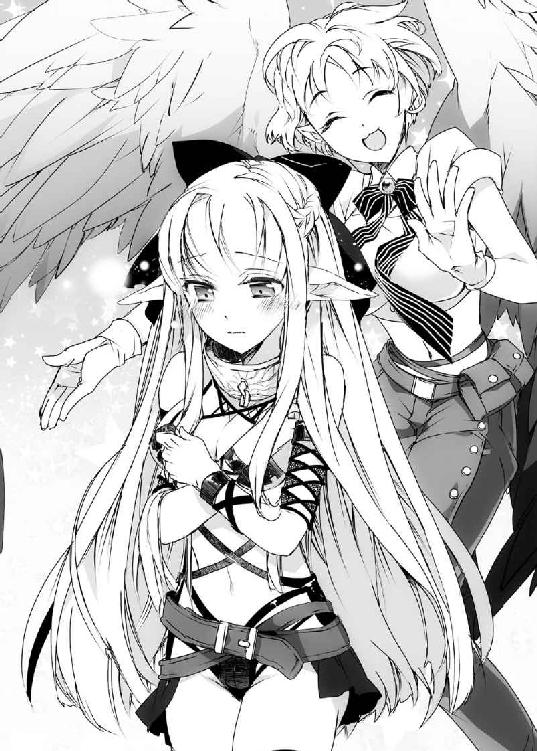
白い髪がしゃらりと揺れて少女の体を隠す。
「あ、あの、見ないで、ください......」
消え入るようなネフィの声で我に返ると、マニュエラはなぜか誇らしげに胸を張った。
「どうです？ 我ながら完璧な組み合わせかと存じます」
「どこが完璧だ！ 適当な服を見繕ってくれと言ったのにどうしてこうなるっ？」
「え......？ お客様の嗜好にお応えしたつもりだったんですが......」
自分はいったいどういう目で見られているのだろうか。
――まあ、こんな可愛い子に首輪をつけて連れ回す悪辣な魔術師だもんな......。
魔術師という名前自体が悪の代名詞のようなものなのだ。よくよく考えると店員の反応も無理からぬものかもしれない。
......いや、それにしたってこの格好はないと思うが。
頭を抱えて、ザガンは言う。
「普通の生活に必要な普段着だ」
「えー......。こんないい素材なのに」
店員は露骨に不満そうな顔をしつつも、ネフィを連れて再び店の奥へと去っていく。
「待て。その手に持っているものは置いていけ」
性懲りもなく、マニュエラは下着のような扇情的な衣装を抱えていたのだ。
それに気づくととうとうネフィの瞳にも涙が滲んできた。
ザガンが睨みつけると、さすがに店員も両手を挙げて後退った。
「や、やだなあ。冗談ですよ、冗談」
まったくそうは見えなくて、ザガンは胡乱げな視線を送る。店員が衣装を手放すと、ネフィが心底ホッとしたように胸をなで下ろしていた。
やがて二度目の着替えを終えたネフィが戻ってくる。
「さあ、いかがですか？」
「ほう......」
今度は、ザガンも素直に感嘆の吐息をもらした。
真っ青なワンピースの上に華やかなレースで飾られた前掛けという格好だった。足元も歩きやすそうなブーツに守られている。
使用人の服装ではあるが、素直に可愛らしいと思えた。
マニュエラがどこか不服そうに解説を始める。
「オーソドックスなメイドスタイルですが、ワンピースもエプロンも絹製で侍女の制服にも用いられている代物でございます。またブーツは治癒の魔術が付加されていまして、立ち仕事の疲労を軽減してくれます」
見てくれも悪くなければ機能的でもあるらしい。
改めて眺めてみてもいい品物だと感じた。
「どうだ、ネフィ？」
「わたしはご主人さまにいただけるのならなんでもかまいません」
「......おい、そんなことを言ってるとまたさっきの服を着せられるぞ」
隣で翼人の店員が妖しく瞳を輝かせ、革ベルトの服を引っ張り出していた。
ネフィが慌てて首を横に振る。こんな機敏な反応は初めて見た気がする。
「こ、これがいいですご主人さま！」
「うむ。ではこれに決めよう」
マニュエラがチッと舌打ちをもらす。なんとも態度の悪い店員である。
会計を済ませると、店員はネフィの耳に何事かを囁いていた。
（よかったね、大切にしてくれるご主人さまで）
ザガンにはなにを言っているのか聞き取れなかったが、ネフィがにわかに目を大きく開いた。
それから、ためらいがちに頷く。
「......はい」
その表情は、どこか嬉しそうにも見えた。
店をあとにしてから、ザガンは問いかける。
「店員になにを言われたのだ？」
「はい。いいご主人さまだと」
「そうか？」
ただの社交辞令だろうが、わざわざそんなことを言う意味がよくわからなかった。
首を傾げるザガンをよそに、ネフィは真新しい衣装を満足そうに撫でていた。
（大切に、してもらえる......ですか）
本当に信じてもいいのだろうかというように震えるその声は、誰の耳にも届かず風の中に消えていった。
◇
――さて、次はどこに行こうか。
新しい衣装に着替えたことで、ネフィもだいぶ歩きやすくなったようだ。これならばあちこち歩いても大丈夫だろう。
と、そこでなにかが裾を引っ張るのを感じた。
振り返ると、ネフィが怖ず怖ずとローブの裾を摑んでいた。
本人も無自覚なのか、キョトンとして首を傾げている。
――そうか。さっきの店員にいじられて周りが怖くなったのかもな。
昨日のなにもかもされるがままといった諦観の姿を考えると、微笑ましくてなんだかこっちまで嬉しくなってきてしまう。
ザガンはその手を振り払わないよう、それでいてネフィが自分のやっていることに気づかぬよう、気をつけながら歩いた。
そうして歩いていると、今度はやかましい金属の音が聞こえてきた。
目を向けると、どうやら鍛冶屋があるようだ。騎士や傭兵が扱う剣や鎧、それ以外にも金属の小道具が山と積まれている。
その中に、奴隷の首輪もあった。
「あの店に入るぞ」
「はい」
ザガンが鍛冶屋に足を向けると、ネフィもついてくる。
店の中はそのまま工房にもなっていた。壁や棚にいくつもの商品が並べられていて、その奥で数人の男たちが熱した金属を叩いていた。
男たちに声をかけると、その中のひとりがビクリと飛び上がった。
まあ、いきなり魔術師から声をかけられたらそういう反応もある。
怖る怖るといった様子で、男が振り返った。
「な、なんですかい？」
「おい、少し見てもらいたいものがあるんだが」
やってきたのは小人の男だった。ヒゲは生やしていないが、そのせいで何歳なのかよくわからない。少年のようにも見えるが、中年なのかもしれない。
小人族は手先が器用で、精緻な装飾や仕掛けも得意だという話だ。
ザガンはネフィを前に立たせた。
「この娘の首輪を見てもらいたいんだが......外し方は、わかるか？」
ピクンと、ネフィが体を震わせた。
それから、信じられないという顔を向けてくる。
――あれ？ そういえばネフィに首輪を外してやるって言ったっけ？
言っていない気がする。
いますぐには外せないにしても、外すつもりがあると知れば彼女の気持ちも楽になったろうに、つくづく自分の会話能力の低さに落胆する。
ネフィが怖ず怖ずと口を開く。
「あの、ご主人さま......」
「そんな首輪をつけていたら、いつまでもマルコシアスの所有物のようだろう。お前には必要ない」
またネフィのことをもののように言ってしまい、ザガンは顔を覆いたくなった。
なのだが、ネフィはわずかに頬を赤くして頷いた。
「......はい」
「......うむ」
なにが『うむ』なのかは知らないが、ザガンはそう答えるので精一杯だった。
それから、小人の刀匠が難しそうな声を上げる。
「外すって、この首輪をですかい？」
「ああ」
「......冗談はよしてください。こいつは魔術の道具じゃありませんか。おいらたちの手には負えませんよ」
ネフィが小さく肩を落とすが、それくらいはザガンにもわかっていた。
「構造的な話を聞きたい。鍵を壊せば外せるようなものか？」
そう訊くと、刀匠はしげしげと首輪を観察する。
やがて首輪に繋がれた錠前を示す。鍵穴のついた金属塊から六本の軸が延びていて、それが首輪を繋いでいるように見えた。
「この錠前を見てください。この首輪はこれひとつで固定する仕組みになっていて、錠前さえ外せばバラバラになります。普通は、ですが」
普通は、とつけるのはそこに魔術が付加してあるとどんな仕掛けがあるのかわからないということだろう。
ザガンは頷き返す。
「魔術は自然の概念を覆す力であるがゆえに、本来の概念に縛られている。そういう構造の首輪なら、錠前が飾りということはないだろう」
「あと、こいつは申し上げにくいんですが......」
刀匠は言いにくそうな顔をする。
どうやらネフィには聞かせられないようなことらしい。少女から距離を置いてから、小声で耳打ちしてきた。
（たぶん、こいつにはトラップが仕組まれてます）
（トラップだと？）
（はい。正しい手順で外さないと仕掛けが発動して......最悪、お嬢さんの首が大変なことになる可能性が......）
その大変なことがどんな状態なのか考えたくもなかった。
だから刀匠も言葉を濁してくれているのだろう。
――やはり、力尽くで外すのは危険か。
単純に首輪を破壊するだけなら、ザガンの力なら造作もない。
しかし〈魔王〉が遺した首輪というのが引っかかって慎重になっていたのだが、どうやら正解だったようだ。
「一番いいのは本来の鍵で開けてやることだと思います」
「まあ、そうだろうな」
それはわかっているが、オークションの司会たちも管理していなかったのだ。
――心当たりはまあ、なくもないんだが......。
しかしいまは手の出しようがないというのが実状だった。
ひとまず、知りたいことはわかったのでザガンはポケットから銀貨を数枚取り出す。ネフィの服を買ったときの釣り銭だ。
「礼を言う。とっておけ」
「いや、お代をもらうようなことはしてません。というより、あなたからお代をいただくわけにはいかないんですよ」
「......？ どういう意味だ？」
苦笑いを浮かべて、小人の刀匠はこう言った。
「おいらは、あなたに助けてもらったことがあるんですよ」
まったく覚えがなくて、ザガンは首を傾げた。
「もう、一年くらい前になりますか。うちの馬車が襲われたとき、あなたはおいらと娘を助けてくれたんですよ。おいらたちはビビって逃げちまいましたが、あなたは怒らずに見逃してくれた。どうか、許してください」
どうやら目障りだという理由で蹴散らした有象無象の中に、彼らを襲った魔術師かなにかがいたらしい。それで結果的に彼とその娘――娘がいるような年齢らしい――を助けていたようだ。
別に恩に着せるつもりはないが、いま代金がいらないのはありがたい。ザガンはそっと銀貨をポケットの中に戻した。
「ならこいつはしまっておくが、お前もくだらんことは忘れろ。俺も覚えていない」
言っていて、なんだか小銭を渡さなかったことを誤魔化しているような気分になったが、刀匠はおかしそうに笑った。
「おいらは忘れませんよ。またなにかあったらいつでも来てください」
そう言う刀匠に見送られて、ザガンとネフィは鍛冶屋をあとにした。
――なんなんだ、今日は？
周囲の人間が友好的すぎて気味が悪いくらいだ。ネフィを連れているというだけでこうも違うものだろうか。
ザガンは気づいていなかった。
世の中の全てを恨むような顔をしていた自分が、いまはずいぶん柔らかい表情を浮かべていることに。
◇
その後、ひと通りの買い物を終えるころには陽も傾き始めていた。
とてもではないが、これから城に戻ってネフィに食事を作らせるのも無理がある。ザガンたちは小さな食堂に入っていた。
時間が中途半端なせいか、客の姿は少ない。ザガンたちを含めても十人ほどだ。木の床は店員が歩くたびにキイッと軋み、天井は屋根まで吹き抜けになっている。梁から下げられたランプが、それぞれのテーブルをぼんやり照らしていた。
注文のメニューはいまひとつ内容がわからなかったが――ザガンにとっては料理の名前自体が未知なものだった――ひとまず肉だろうものとサラダらしいものとパンを注文してみた。
野菜を食べる習慣はあまりなかったが、ネフィが肉だけを食べている姿を想像できなかったというのもあるのだ。
料理を待っていると、ネフィがなにか言いたそうに見つめていることに気づいた。
「どうした？」
「いえ、あの......」
口ごもって、それでもネフィは自分の首輪に触れる。
「ご主人さまは、この首輪を外されるつもりなのでしょうか？」
「ん？ ああ、そういえば言っていなかったか。そのつもりだ」
先ほども紛らわしい言い方をしたせいで、彼女も確信できないでいたようだ。
面と向かって訊かれるとなんだか恥ずかしくなって、ザガンは素っ気ないそぶりで答えてしまう。『もちろんだ！』とか安心させる言葉はなかなか出てこない。
ネフィもなにやら葛藤するように何度も口を開くが、なかなか言葉は出てこなかった。
それでも、意を決したように侍女姿の少女は口を開く。
「首輪がなくなれば、わたしが逃げるとは、お思いにならないんですか？」
ネフィはエルフだ。それも白い髪という極めて魔力の高い個体だ。首輪がなければ魔術だって使えるのだろう。
この首輪こそが彼女をザガンの下に縛り付けている証でもあった。
ザガンは、その首輪を鍛冶屋で外そうとしていたのだ。
――まあ、それは気にならないわけがないよなあ。
もちろんザガンだってその危険は考えた。
金貨百万枚というとんでもない金額をはたいて手に入れた少女にあっさり逃げられたなんて間抜けな話はない。男としても魔術師としても形無しだろう。
そして実際にそうなるだろうとも思う。
ザガンとは違って、ネフィには自分に肩入れする理由はなにもないのだから。
ただ、それでも、たとえ逃げられるかもしれないとしても――
――それでも、外してやりたいと思ったんだ。
その気持ちを言葉で説明することなど、ザガンにはできそうになかった。
だから結局、口をついて出るのはこんな言葉だった。
「ふん。どの道いますぐに外せるものではない。無駄な期待はするな」
頭を抱えたくなる。
せめて『それでも首輪くらい外してやりたいんだ』くらいは言えなかったものか。
――たぶん、俺は側に残ってほしいと思っているからだ。
だから期待はするななどと言ってしまったのだろう。
それにしたって〝無駄な〟などという言い方はなかった。
どこかに『女の子との会話の仕方』という具合の魔導書でも置いていないだろうか。この際、詐欺でもいいから誰かそういうことを教えてくれと心から願った。
なのに、ネフィはどこか満足そうに頷いてくれた。
「はい」
そんな少女にひどいことを言ってしまったような気がして、ザガンはまた頭を抱える。
それでも悶絶の時間は、今回は短くて済んだ。
すぐに料理が運ばれてきたのだ。
見たこともないメニューだが、ずいぶん昔に夢見たことはある。ナイフとフォークも最後に使ったのはいつか思い出せないが、使い方くらいは覚えている。
ザガンが肉を切り始めても、ネフィはぼんやりと料理を眺めたままだった。
「どうした？ スプーンとフォークの使い方はわからないか？」
確か遠く東の国では〝ハシ〟と呼ばれる棒切れを使って食事をするという話を聞いたことがある。
人里離れた北国のエルフの住み処もナイフやフォークは使わないのかもしれない。
そう思って訊いてみたのだが、ネフィはぷるぷると首を横に振った。
「いえ、そういうわけでは......」
「なら食べろ。腹が空いていないわけじゃないんだろう？」
また突き放すような言い方になってしまったが、いい加減ネフィも慣れてきたのだろう。不思議そうな顔をするだけで怯えることはなかった。
むしろもっと早く気付いてやるべきだったのだろう。
魔術師のザガンは空腹も魔術で鈍らせることができるが、ネフィは首輪で魔力を封じられているのだ。それに体力があるようにも見えない。そもそも朝から干肉とミルクという、食事と呼べないようなものしか食べていないのだ。
ザガンの言葉を肯定するように、ネフィのお腹がきゅうっと可愛らしい音を立てた。
ツンと尖ったネフィの耳がほのかに赤く染まった。
「あの、わたしまで食べてもよろしいのですか？」
「......？ なにか悪い理由でもあるのか？」
――というか、もしかしてこれもメニュー的に質素だったりするのか？
しかし今回の反応は朝のそれとは違うように見える。
それから、ふと彼女の境遇というものを思い出した。
「......もしかして、こんなふうに食事をするのは初めてか？」
ネフィはコクンと頷いた。
――ああ、そうか......。ネフィも、そうだったんだな......。
ザガンはなぜひと目でネフィに固執してしまったのか、ようやくわかった気がした。
彼女は自分と同じなのだ。
力もなく、居場所もなく、世界というものに絶望していたころの自分だ。
だからザガンはなんでもなさそうにこう答えることができた。
「なら気にするな。俺も似たようなものだ。美味そうだと思うものから食えばいい。こんなところで遠慮すべき相手など、お前の前にはいない」
「......でも」
「いいから食え。小さな店だが、朝の干肉に比べればずっとマシだ」
そう言って肉の一切れを口に運ぶが、実は味はよくわからなかった。
――さっきの首輪のことで落ち込んだりしてないよな？ あと普通に食事に誘うのってどうしたらいいんだ？
そんな疑問やら不安やらで味どころではなかった。
ネフィは小さく握った手を口元に添えた。心なしか目尻も下がっていて、それは気のせいかもしれないが笑っているような仕草に見えた。
それから、両手を合わせてフォークを手に取る。
「いただきます」
まず手を伸ばしたのは小さなトマトだった。フォークで突き刺そうとするが、上手くいかずにつるっと滑ってしまう。
ネフィはまるで表情を動かさなかったが、ツンと尖った耳の先がほんのり赤く染まっていた。どうやら彼女なりに恥ずかしかったようだ。
「......っ」
ザガンの視線に気づいたのか、ネフィはピクンと体を震わせ、今度はスプーンを手に取る。器のような凹みに綺麗にトマトを掬うと、ようやく桃色の唇の奥へと運んでいく。
「......？」
舌の上で転がし、ネフィは不思議そうな顔をする。きっと味がしなかったのだろう。
――舐めても味はしないんだ。かじるんだよ！
助言を送ってやりたかったが優しく言える自信がない。なによりネフィ自身もそんなことを言われたら恥ずかしいだろう。
心の中で声援を送りながら見守っていると、ようやくネフィはトマトに歯を立てた。
ぷちゅっとなにかが潰れる音がして、ネフィがまん丸に目を見開いた。
「ど、どうだ......？」
答えられないのかしばらく黙々と口を動かして、コクンと頷く。その拍子に真っ白な髪が胸元に伝い落ちた。
「美味しい、と、思います」
そう言ってから、言葉足らずだと思い直したのか頭を振る。
「初めて、食べた、もので」
思えば、手料理を作ってくれると言ったときも〝見様見真似〟と言っていたし、まともなものを食べられる環境にはいなかったのかもしれない。
その境遇は嘆くべきなのだろうが、ザガンはむしろ親近感のようなものが湧いて顔が緩みそうになった。
「気に入ったのか？」
「よく、わかりません」
そう言って、またトマトをスプーンで掬う。
「もっと、甘いものかと思ってました。でも、とても瑞々しくて......こういうものを食べるのは、初めてです」
――あー、確かに小さいトマトって飴玉みたいだもんな。
ザガンも飴だと思って店から掠め取り、食べてみたら酸っぱかったので落胆したことがあった。そしてそのあと店主に捕まってしこたま殴られたのだ。
――そうか。女の子だもんな。甘いものは好きだよな。
初めてネフィの好みと呼べるものを知った気がする。あとでなにか甘いデザートでも注文してみよう。
そう思いながらザガンもトマトにフォークを伸ばす。
「む......」
しかし、ネフィと同じようにつるっと滑ってしまう。
二度、三度と挑んでみるが、やはり上手く刺さらない。よく考えたら自分もフォークなど普段は使わないのだ。観念してスプーンに持ち替えるべきかと思ったときだった。
そのトマトを、ネフィのスプーンがそっと掬い上げた。
そのスプーンをザガンの前に差し出してくる。
「......どうぞ」
「なん、だと......？」
ザガンはカッと目を見開いた。
――これは、食べさせてくれるというのか......っ？
どこだったか、昔一度だけ見かけたことがある。
仲のよさそうな男女がこんなふうにスプーンで菓子――今回はトマトだが――を食べさせ合っていたのだ。
あのときは自分でも説明のつかない憎悪が込み上げるだけで、特別な感情を抱くことはなかった。それがまさか、自分が直面する日が来ようとは。
平然とした顔をしているが、ネフィの耳の先も真っ赤になっていた。しばらく見つめていると、ほのかに頬も紅潮していく。
――というかこれ、ネフィが口をつけたスプーンだよな？
それを自分の口に含んでいいというのか。
ザガンも緊張しながらそのスプーンに口を近づけた。
ころんと、舌の上にトマトが転がり込んできた。
歯を立てると酸味のある滴があふれてきた。
「......美味いな」
「......はい」
それから、ネフィは囁くように訴えてきた。
「ご主人さまは、なにもお命じにならないんですね」
「そ、そうだな」
それ以前に、未だになにを話したらいいのかわからないところがあるくらいだ。なにか役割をあげたいと思っても、なにを命じればいいのかもわからなかった。
ネフィは表情を変えないまま、それでもなにかを確かめるように頷いた。
「ご主人さまは、わたしがご主人さまのお役に立ちたいと思うことを、お許しくださいますか？」
それは、ネフィが初めて自分から望みを口にしてくれた瞬間だった。
しかしわざわざ言葉にすることに、不思議と媚びるという印象は感じられなかった。
きっと、願望を持つことさえ躊躇われるような場所にいたのだろう。
――なのに、自分のことじゃなくて俺のことを訊いてくれるのか？
このときばかりは、ザガンも自然に答えることができた。
「許す。ネフィの望むようにすればいい」
......結局、横柄な言い方にしかならなかったが。
それでもネフィは真面目な顔で頷いた。
「はい。尽力させていただきます」
あまりに固い答えだったが、それでも自分の意志を示してくれたことが嬉しかった。
「う、うむ。頼むぞ」
気恥ずかしさを誤魔化すようにトマトにフォークを突き立てると、今度はうまく刺さった。
ザガンはそれを口に運ぼうとして、思い留まってネフィの方に差し出した。
「......？」
その仕草の意味がわからなかったように、ネフィは小首を傾げる。
――いま、自分でやってたことじゃないか。
もしかすると無自覚にやっていたのだろうか？ それにしては恥ずかしそうだったが。
しかしザガンの方も恥ずかしいのだ。長時間、この姿勢を維持することは魔術の力を以てしても困難だった。
「気に入ったのだろう？ 食べるがいい」
そう言うと、ようやくネフィも先ほどのお返しをされていることに気づいたようだ。
耳だけでなく頬までほのかに赤く染めて、それでも怖ず怖ずと口を開く。
桃色の唇が開いて真っ白な歯が覗く。そこから伸びる舌が妙に艶っぽく見えた。その舌先が真っ赤なトマトに触れ、喘ぐような声をもらしながら唇の奥へと転がした。
フォークが抜けたあとから中の滴がこぼれ、少女の顎へと伝った。
羞恥心に耐えかねたように、ネフィは顔を覆う。
なんだかいじめているような気持ちだ。だがザガンは反省するどころか、もっとその顔が見てみたくなってしまった。
「どうだ？」
これ見よがしに訊いてみると、ネフィは生真面目に指の隙間から顔を覗かせて頷く。
「......美味しい、です」
「......そうだな」
自分でやっておいてなんだが、とてもいけないことをしているような気分になった。
しかしそんなやりとりは店中の人間から見物されており、それに気づいたふたりは慌てて店をあとにする羽目になるのだった。
不器用なふたりは、ひとまずお互いを主従という形で認識することで落ち着いた。
それは一週間前――ザガンとネフィが出会った日の朝のことだった。
ここ最近、貿易都市キュアノエイデスにて年若い娘ばかりを狙った連続誘拐事件が起こっていたのだ。犯人は複数の魔術師で、少女たちを生贄におぞましい魔術を行おうとしていたらしい。
シャスティルたちはその犯人の討伐隊だった。
事件に関わる主立った魔術師たちを倒し、囚われの少女たちを救出し、まさに英雄の凱旋――その直前のことだった。
救出した少女たちは教会の増援に任せ、一足先にキュアノエイデスに帰還する途中、早朝でシャスティルも沐浴の直後のため武具をまとっていなかった。
それまで自分の背中を守ってくれていた男が、とつぜん剣を抜いて仲間たちを襲ったのだ。他の仲間の助けでなんとかその場から逃げ出すことはできたものの、まともな武器もなく、すぐに追いつめられてしまった。
しかし男は魔術師に生皮を剥がれた別人だった。後日、彼の骸が川辺に打ち上げられているのが発見された。
シャスティルも彼と同じ......いや、もっとひどい末路をたどるはずだったのだが、そこを〝誰か〟に助けられたのだった。
――夢ではない、はずだ。
自分を襲った男よりも遥かに残忍な目をした男だった。事実、外道とはいえ命乞いをする相手を躊躇なく殺したのだ。
ただ、それでもと思う。
――なんだか、寂しそうにも見えた。
少し調べればすぐに彼がザガンという名の魔術師だとわかった。
以来、シャスティルはなぜか彼のことばかり考えていた。
そう、あの朝、迷いの森で襲われていて、ザガンから血のシャワーを浴びせられつつも助けられたのがシャスティルだった。
赤い髪を振り払い、執務机に突っ伏す。
「はあ......」
そして、こんなため息がもれてしまう。
「悩み事かね、聖騎士長シャスティル？」
いきなり後ろからかけられた声に、シャスティルは飛び上がった。
「し、失礼いたしました、クラヴェル猊下！」
そこにいたのは最高位の神官の礼服をまとった老人だった。枢機卿――事実上、教会のトップのひとりであり、シャスティルの直属の上司でもある。
老人は柔和な笑みを浮かべ、首を横に振る。
「そう硬くならんでおくれ。連続誘拐事件の犯人を討伐した英雄にかしこまられては、私は民衆から敵意を向けられてしまうよ。ましてそなたは聖剣の乙女であろう？」
聖剣の乙女――それが、シャスティルに与えられた称号だった。
魔術師の魔法陣を斬り裂き、魔術を無効化し、十二本揃えば〈魔王〉さえ打ち倒すと言われた教会最強の剣を与えられた者の名だ。
いまのシャスティルはザガンに助けられたときとは違って洗礼鎧をまとい、隣には少女の身の丈ほどもある大きな剣を立てかけてある。魔術師と戦うための装備であり、こうした儀礼の場での正装でもある。
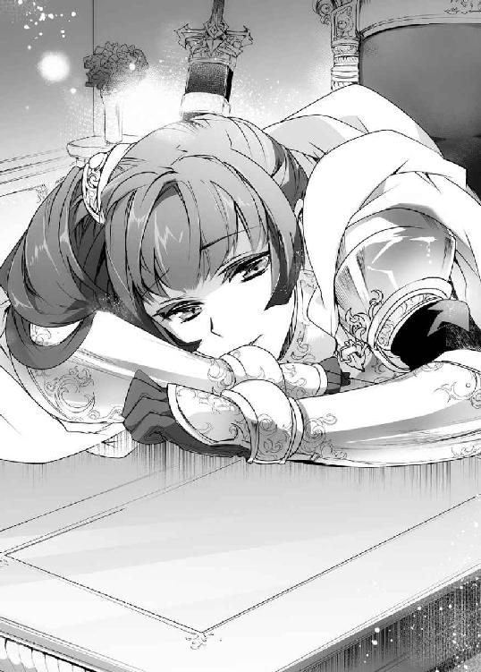
シャスティルは首を横に振る。
「......猊下からお預かりした聖騎士を四名も失いました。私の未熟さが引き起こした失態であります。誉れなど、どうして受けられましょうか」
マイアス、エミリオ、ジャミル、ドラン、誇り高く勇敢な聖騎士たちだった。
あの朝、不意打ちでさえなければ彼らはあの魔術師相手にも退くことなく戦い、そして勝利していただろう。
誘拐事件の犯人たちはみな倒したと、シャスティルの油断が引き起こした惨劇だった。
年老いた枢機卿は慈しむように首を横に振る。
「そなたのせいではない。憎むべきはおぞましい魔術を操る魔術師どもだ。そなたは見事仲間たちの仇を討って帰還したのだ。胸を張るがよかろう」
「......はい」
複雑な表情で、シャスティルは頷いた。
仲間たちの仇を討ったのは自分ではない。通りすがりの魔術師なのだ。彼がいなければシャスティルだっていまここにはいなかっただろう。
なのにここで評価されているのはシャスティルだった。
シャスティルは敬虔な教会教徒ではあるが、教会という組織が彼らが主張するほど健全で神聖な存在でないことも理解していた。聖剣への適性が認められたことから聖騎士長という任についてはいるが、自分の意志を放棄したつもりはない。
口にすべき言葉と、そうでないことの分別くらいはつくつもりだ。
枢機卿はじっとシャスティルを見つめる。
「シャスティルよ、そなたは魔術師ザガンについて調べているそうだな？」
「はい」
頷いて、シャスティルははっきりとこう答えた。
「マイアスに成り代わり、我々を襲撃した魔術師はザガンと名乗りました」
シャスティルを襲った魔術師はそう名乗ったのだ。
――でも、ザガンというのは私を助けてくれた魔術師の方だった。
つまり彼の名を騙って悪事を働いていたのだ。
シャスティルがザガンのことを調べていたのは、その濡れ衣を晴らしてやりたいという理由もあった。
枢機卿に向けて、調べていた書物を広げる。
「ですが、調べてみるとザガンという魔術師はまるで関係のない別人のようです」
枢機卿はそれを知っていたかのように頷いた。
「恐らく、それは《顔剥ぎ》と呼ばれる魔術師だろう。その名の通り、人の生皮を剥ぎ、おぞましい魔術を使う者として討伐の命を出している。どうやら、今回の誘拐事件にも荷担していたようだな」
その言葉から、枢機卿も今回の事件を調べていたのだとわかった。
「シャスティルよ。この事件、まだ終わってはおらぬ。我らが洗い出した魔術師以外にまだ真犯人がいるようだ」
「......ッ、また被害者が出たのですか？」
枢機卿は慰めるように首を横に振る。
「逸るな、シャスティルよ。そなたたちの働きにより、魔術師どもの計画は確かに阻止されたのだ。......だが、魔術師どものアジトを洗うことで、我らが見過ごしていた真犯人がまだいることがわかった」
シャスティルを襲った《顔剥ぎ》以外にも、まだ生き残りがいる。
――私はまだ、仲間たちの仇を討つことができるのか？
緊張に生唾を呑み込むと、枢機卿は厳かにその名前を口に出した。
「魔術師ザガン――近年、恐ろしい速さで力をつけている魔術師だ」
「なっ――」
思わず、シャスティルは声を上げる。
「その男は犯人とは別人のはずです」
「無関係な魔術師の名が同じ事件で二度も飛び出しているのだ。偶然ではあるまい」
それにと、枢機卿は重たい口調で告げる。
「魔術師は悪だ。滅ぼさねばならぬ。たとえ事件と無関係だったとしても、それが処断すべき悪であることに変わりはない。ゆえに我らキュアノエイデス支部は魔術師ザガンの討伐を決行する」
「――ッ」
それは教会が掲げている絶対遵守の戒律である。
呪いと言い換えてもいいかもしれない。
――教会は魔術師を滅ぼすまで魔術師を狩り続ける。
ザガンが濡れ衣を着せられているとしても、一度教会が狩ると決めた以上は撤回されることはない。たとえシャスティルのような聖剣所持者が敗れ、幾千幾万もの屍を積み上げることになろうとも、魔術師を殺すまで教会は止まらないのだ。
ここでシャスティルが無実を主張することに、意味などない。
それどころか反逆者と見做され、異端者裁判にかけられることだって考えられた。
――自分の命を惜しむつもりはないが、それではなにもしないのと同じだ。
命の恩人に恩を返したいなら、ここで喚き散らして捕まるような愚行は犯せない。
彼を守る、あるいは逃がすための手段を講じるべきなのだ。
しばしの瞑目を挟んで、シャスティルは毅然として口を開いた。
「ならば猊下、どうかそのザガン討伐の任、この聖騎士長シャスティルにお与えください。先の失態の汚名を雪ぐ機会とさせてください」
この言葉に、枢機卿も「おお......」と感嘆の声をこぼす。
「よくぞ言った。それでこそ我が聖騎士長、聖剣の乙女だ」
シャスティルは破滅することになるかもしれない。
それでもシャスティルには信念がある。
教会に背く結果になるとしても、譲れないものがある。
誰からも感謝されないとしても、世界中の人々から唾を吐きかけられるとしても、我が身可愛さに信念を捨てるくらいなら信念を貫いて死を選ぶ。
そんな少女だから、十七歳という若さで聖剣という力を与えられたのだった。
それに、と思う。
――あの男は、すごく寂しそうな目をしていた。
心の底ではぬくもりを求めているのに、それを認めたくなくて全てを突き放しているかのような、そんな迷子の野良犬のような瞳だった。
あのとき、本当に救いを必要としていたのはシャスティルではなく彼の方だったのではないだろうか。そんなふうに思ってしまうほどに......。
だから、シャスティルはこの任務を自分のものにしたのだった。
◇
「お目覚めでしょうか、ご主人さま？」
ザガンは基本的に座ったまま眠る。
城の玉座は結界の中心であり、全ての機能が集中する拠点でもあるのだ。そこに座っていれば、いかなる攻撃を受けたとしても一撃で命を落とすことはない。なにより、不審な気配が近づけば真っ先に感知できる。
つまり盤石の守りを備えた居城の中でもさらに万全な空間こそが玉座なのだ。
それに横になるよりも座っていた方がなにかあったときにすぐ反応できる。
だからいつの間にかここで眠るのが習慣になっていた。
そんな朝のことだった。
「おはようございます、ご主人さま」
侍女姿のネフィがそんなふうに迎えてくれたのだ。
起こされたわけではない。
「う、うむ」
ザガンが答えると、ネフィはペコリと腰を折る。
「食堂に朝食の支度が調っています。召し上がられますか？」
「え、朝食？ ネフィが作ったのか？」
「はい」
確かに昨日の朝に食事を作ってくれるとは言ったが、次の日からさっそく用意してくれるとは。
それから、ふと疑問を抱く。
「もしかして、ずっとそこで待っていたのか？」
「はい」
「......そういうときは起こせ」
「ぐっすりお休みだったものですから」
言われて、ザガンも疑問に思った。
――そういえば、目の前に誰かがいるのに目を覚まさないなんて、おかしいな。
一日睡眠を断ったくらいでこんなに深く眠るようなことはなかったのだが。
首を捻りながらも、ネフィがずっと立ち尽くしていることを思い出す。
「そんなところに立っていたら、疲れないか？」
「大丈夫でした。靴の魔力のおかげかと思います」
そういえば服屋の店員がこのブーツには疲労を軽減する力があると言っていた。その効果は確かなものらしい。
「待っている間、ずっとそうしていたのか？」
「いえ、ご主人さまのお顔を眺めていました」
「そ、そうか......」
面と向かって言われ、ザガンは顔を覆いたくなった。
とはいえ、せっかく食事を作ってくれたのにいつまでも待たせるわけにもいかない。
「朝食だったな」
「はい」
ザガンが立ち上がると、ネフィも道を空けて腰を折る。
すでに玄人の侍女のような立ち振る舞いだった。
城の食堂に向かおうとして、ザガンは「あ」と声をもらす。
「......？ どうなさいましたか？」
「ああっと、ネフィ」
「はい」
キョトンとして首を傾げる少女に、ザガンは首の後ろをかきながら、しどろもどろに声をかけた。
「......おはよう、ネフィ」
昨日、とっさに返せなかった言葉だ。
ネフィは意外そうに二度まばたきをすると、どこか嬉しそうに言った。
「はい。おはようございます、ご主人さま」
なんだか胸の中があたたかくなるような、不思議な気持ちがした。
◇
玄関ホールに下りて右手の扉を開くと、そこが食堂になっている。
広々としたその部屋には二十人は腰掛けられようかという長いテーブルが一台置かれていて、頭上には豪華なシャンデリアがぶら下がっていた。
ここも蜘蛛の巣と白骨死体の転がる墓場のような場所だったはずだが、いまはそれが嘘のように綺麗に片付いている。テーブルクロスまで新品のように皺一つない。
ネフィは仕事を与えると機敏に動いてくれる娘のようだ。
清潔になったテーブルに並べられているのは、オイルをかけたサラダにふかふかのパンだ。空の皿がひとつあると思えば、ネフィがあたためたスープを注いでくれた。ザガンがすぐに起きないことも考えて用意してくれていたようだ。
量は控えめだが栄養のバランスのよいメニューなのはザガンにもわかった。
と、そこで首を傾げる。
「あれ？ 昨日、パンなんて買ったか？」
「いいえ。先ほど焼きました」
「パンを作れるのかっ？ 自分で？」
信じられないという顔をするザガンに、ネフィは小鳥のように首を傾げる。
「おかしいでしょうか？」
「わからん。こんなものを作れる人間に会ったのは初めてだ。少なくとも俺の周りにはこんな美味そうな食事を作れる人間はいなかった」
「そうですか」
抑揚のない声で呟くが、ザガンは少女の尖った耳がピクピクと震えているのを見逃さなかった。
――あれってもしかして、喜んでるのか？
確か恥ずかしがっているときは耳の先が赤くなっていた。
目は口ほどにものを言うという言葉があるが、ネフィの場合は耳を見た方がわかりやすいのかもしれない。
そんな発見を微笑ましく思いながらも、ネフィが立ったままであることに気づく。
テーブルには、ザガンの分しか用意されていなかった。
「ネフィ、お前はもう食べたのか？」
「いいえ」
「ならお前もいっしょに食べろ」
というか、ひとりだけ食べるのも居心地が悪いのだ。
ネフィは困ったように身じろぎをした。
「どうした？」
「それが......。ご主人さまの分しか、作っておりませんでした」
「食べないつもりだったのか？」
「いえ、自分の分を失念していました」
なんともこの少女らしい話だった。
そんな健気な少女を放って、自分だけ食事を摂ることなどできない。
「なら、半分に分ければいいだろう？」
ザガンはパンを半分に千切る。
出来たてのパンはまだほのかにあたたかく、糸を引くようにゆっくりと左右に分かれていった。こうばしい香りが鼻をくすぐり、思わず「ほう」とため息がこぼれる。
しかし、それでもネフィは席に着こうとはしなかった。
「座ったらどうだ？」
「......その、椅子の用意が、ご主人さまの分しか間に合いませんでした」
もともとここは食事のできる環境ではないほど汚れていたのだ。それを掃除した上で料理まで作っていたのでは、さすがに椅子まで用意できるはずもなかった。
ザガンなら汚れていても気にせず座るが、他の椅子は全て片付けられている。
――俺がテーブルに座って椅子を譲れば......いや、ネフィが綺麗にしてくれたテーブルに座るなんてありえないか。
だが他に椅子の代わりになるようなものは見当たらない。
いっそ同じ椅子を半分こでもしようか。だが椅子はそんなにゆったりとした造りではない。ふたりそろって転がり落ちるのが目に見えている。
――いや、座れるんじゃないか？
椅子を半分こは無理でも、膝の上に座るというのはどうだろうか。
ネフィの体重なら食事の間くらい上に乗られても苦にはならないし、ふたりとも料理に向かって食べられるのだから名案ではないか？
思えば、このときのザガンは寝起きで、まだ寝ぼけていたのかもしれない。
だから、それを最適解だと信じて疑わなかった。
考えを確かめてから、ザガンはふむと頷いた。
「ではここに座るがいい」
「こ、ここ、とは......？」
ネフィがたじろいだ。
戸惑いの声を漏らすネフィに、ザガンは容赦なく自分の膝を示した。
ザガンの膝に座れと言うと、ネフィも紺碧の瞳を揺らして動揺を露わにした。心なしか真っ白な髪の先まで跳ね上がっているように見える。
そんな少女の反応から、ようやく自分がおかしなことを言っていることに気づいた。
――あれ？ いや、膝に座れって、ほとんど抱き合ってるようなもんじゃないのか？
我に返り、自分でもなにを言っているのかと死にたくなった。
侍女姿の少女は果敢に口を開く。
「そのようなご無礼は働けません」
それはそうだろう。
そしてこの場で最良の答えでもある。ザガンがここで頷くだけで全て解決するのだ。
しかしネフィの機転の利いた答えに、動揺していたザガンはさらに無駄に意地を張ってしまった。
「気にするな。俺がいいと言っている」
――ここで言い張ってなんになるんだよおおおおっ！
自分の過ちを認めたくなかったのかなんなのか、千切れるものならこの唇を引きちぎりたかった。
「で、でも......」
ネフィの耳の先が赤く染まる。うっすらと涙がにじむその顔を見たら......。
――なんだろう。もう少しだけ追いつめてみたい気がしてきた。
さすがに意地が悪いだろうとわかっているのに、こんなに動揺する姿を見たらもっと見てみたくなってしまった。
コホンと咳払いをして、ザガンはもう一度自分の膝を叩く。
「早くしろ。食事が冷めてしまう」
「くぅ......」
か細い吐息と共に、ツンと尖った耳がシュンと下がる。
どうやら観念したらしい。
「ご主人さまの、仰せのままに......」
怖ず怖ずとネフィがザガンの膝に座った。
――本当に座っちゃったよ！
スカート越しに臀部のやわらかな感触が伝わってくる。そのまま背中から抱きしめて撫で繰り回したくなった。
思わず、ザガンの方がゴクリと咽を鳴らしてしまう。
それでも命じた手前、ザガンは平静を装ってパンを一欠片千切ってみせる。
「そら、食べるがいい」
「......ご主人さま、恥ずかしい、です」
ネフィの耳は根元まで真っ赤になっていた。
「うむ。見ればわかる」
「............ご主人さま、いじわるです」
泣きそうな声をもらして、ネフィはザガンの手の平に顔を近づける。
それから、桃色の唇でパンの欠片をくわえた。
「あの、残りは自分で食べられますから......」
「そ、そうだな」
恥ずかしがるネフィはもっと眺めていたいが、そろそろザガンの方も罪悪感と羞恥心で精神の限界だった。
それからネフィがツンと尖った耳をプルプルと震わせていることに気づく。
恥ずかしいのは恥ずかしいが、そこまで嫌がっているわけでもないようだ。
なんとなくホッとして、ザガンは言う。
「次からは、食事は自分の分も用意しろ」
「......はい」
「まあ、次もこうしてもいいが」
「用意します」
毅然とした答えだった。
ザガンもスープが冷めないうちに手をつけようとするが――ネフィが横からさっとスプーンを攫った。
「ネフィ？」
眉をひそめると、侍女姿の少女はスプーンでスープを掬う。
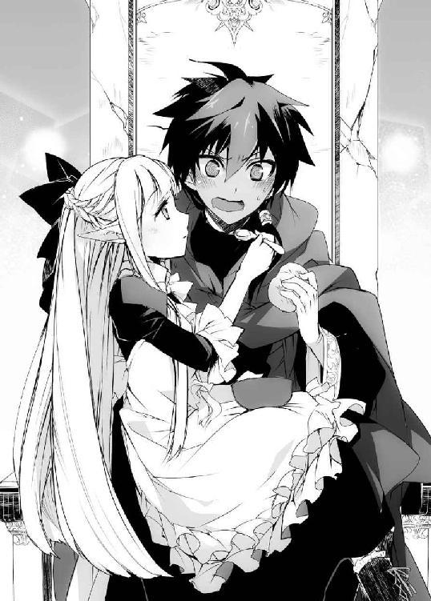
それにふうっと息をかけて冷ますと、ザガンに向けて差し出してきた。
「どうぞ、おあがりくださいまし、ご主人さま」
その表情は相変わらず無機質なものだったが、心なしか怒っているようにも見えた。
――いまの仕返しということか。
しかしなんというか、やっている本人も恥ずかしくはあるようだ。
耳の先は火照ったように赤く染まっていて、スプーンを握る手も小さく震えている。そのスープも健気に息を吹きかけて冷ましてくれたことを考えると、仕返しというよりもご褒美のように思えてきた。
――これはこれで毎回やってもらいたい気がしてきた。
だからザガンもされるがままに口を開いた。
不器用な手つきで、ネフィがスプーンを唇に運ぶ。
子羊の肉と根菜をミルクで煮詰めたもののようだが、咽の奥に流し込むと腹の底からあたたかくなるような感覚がした。
「あったかいな」
「はい？」
「あ、いや、スープがだぞ？」
もちろん、膝の上のネフィのぬくもりもあるのだが、ザガンは慌てて否定する。
ネフィはキョトンとしていたが、やがてゆっくりと頷いた。
「......はい。あったかい、です」
なにかを噛みしめるように、ネフィもそう言った。
――これから、こんな時間が続いていくといいな。
心から、そう思った。
◇
その日は、ネフィの寝室を綺麗にしているうちに終わってしまった。
掃除は自分ですると言い張っていたが、彼女の細腕で家具のような重たいものまで運ぶことは難しい。ベッドや洋服棚などはザガンが運んでやった。
とはいっても、未だに彼女の衣服は最初に着ていたドレスと侍女の服、それと下着が数着くらいしかないのだ。もう少しあれこれ用意してやりたかった。
――金策をきちんと考えないとなあ。
魔術の知識を売るというのがもっとも大金を得られる手段だが、足が付きやすくなるという欠点がある。自分ひとりのころならいざ知らず、いま教会に踏み込まれてネフィにもしものことがあったら、敵を皆殺しにしても取り返しがつかない。
ならば先日の野盗の用心棒のように、誰かに雇ってもらうのが手っ取り早いのだが、それはそれで拘束時間が長く、城に戻ってこられない日が続くこともある。
金では買えないものもあるというが、金がないと生活に困るというのが現実だった。
馬車を助けた謝礼がまだ少しは残っているのでいきなり食べるのに困ることはないと思うが、早急になにか対策を考えなければならない。
そうしてネフィとふたりで城の片付けを続けながら数日が経ったころだった。
城の書庫でそこら中に魔術書を広げたザガンに、ネフィがこんなことを訊いてきた。
「ご主人さまは、いつもなにを研究なさっているんですか？」
ネフィとの生活に夢中になりながらも、ザガンは魔術の研鑽を忘れてはいなかった。
彼女は食事や掃除などをそつなくこなしてくれるので、少しその手伝いをしてもむしろ前より研究が捗っているくらいだ。
ザガンは逆に首を傾げた。
「なにって、魔術以外のなにに見える？」
「そう、なのだとは思っていますが、その絵を描くことにどんな意味があるのかわからなくて......」
これにはザガンも目を丸くした。
「エルフの魔術はこれとは違うのか？」
ネフィは真っ白な髪を揺らして首を横に振った。
「わたしは、魔術は使えませんから」
これは予期せぬ答えだった。
――ヒトより遙かに上質な魔力を持っているはずなのにな。
惜しいと思う。
しかしそういうことなら、とザガンは描いている途中の魔法陣を示した。
「これは魔法陣という。魔術師が思い通りの現象を起こすための〝設計図〟だ」
「せっけいず......ですか？」
聞き慣れない単語だったようだ。ザガンは順を追って説明した。
「そうだな、たとえば街に水車や馬車なんて道具があっただろう？ あれは単純な刃物や鎚とは違い、たくさんの部品から作られている。そういう部品は形が揃っていないと機能しないから、それを統一するために寸法なんかを記してまとめた図が設計図だ」
馬車は車輪の大きさから扉、座席に至るまで無数の木材と釘、金具などが使われている。水車などはさらに複雑で、歯車の歯の数や大きさまで揃えなければならない。それは慣れでできるようなものではなく、誰でもひと目でわかる図と表が必要なのだ。
ネフィはなるほどと頷く。
「魔術というのも実はやっていることはそれと変わらない。まずはこんなふうに魔法陣という設計図を描くんだ」
言いながら、ザガンはホコリの積もった床に指先で紋章を描く。
「こうした紋章が力を持つという概念がある。教会なんかが掲げている十字紋章も同じようなものだな。神々が残した文字だとか悪魔との契約の証だとか言われているが、実際のところなんなのかは俺も知らん」
あるいはそこに力や神がいると信じる人間の思念が、力を生んでいるのかもしれない。
魔術に触れてみると、世界というものがそんなあやふやでいい加減な構造であることがわかる。
次にいま描いた紋章を円で囲む。
「これが、一番簡単な形の魔法陣だ。こいつはイナズマを起こすためのもので、魔力を流し込むとこうなる」
「え、あの」
この場で使うとは思わなかったのだろう、ネフィが慌てた声をもらす。
それでもザガンが魔法陣に触れると、パリパリッと小さな火花が散った。
身構えてネフィは拍子抜けしたようにまばたきをする。
「これが、イナズマなのですか？」
「ああ。とはいってもすぐに空気中に霧散するから電光もろくに見えないがな」
「はあ......」
釈然としない返事をするネフィに、ザガンは笑みがこぼれそうになる。
「これだけでは水面に木の葉を浮かべているのと変わらない。火打ち石もただ打ち付けるだけで炎は起こせないだろう？ だからここに効果を大きくする紋章、力の向きを定める紋章、範囲を定める紋章、発現の時間を規定する紋章なんかを追加していく」
雷の紋章を囲むようにいくつもの紋章を並べていき、それをさらに円で囲んでやる。
「さて、これでようやくそれらしい現象を起こせるものになった」
「ひゃっ」
魔力を流し込むと、今度は天井からひと筋の電光が降り注いだ。
小さな悲鳴を上げるネフィに、ザガンは笑い声をもらした。
「すまんすまん。だが、これだけでは実は魔力を込めるだけで誰でも使えてしまうんだ。せっかく魔法陣を描いても、自分が使う前に敵に奪われたのでは意味がないからな。だから次は自分にしか使えないような制約をつけていくんだ」
言ってみれば魔術を守るための魔術だ。
先日、バルバロスが結界の中に侵入したときも、ザガンが敵の魔術を無力化したときも、この部分を描き直して魔法陣を奪っていたのだ。
「こいつは複雑にしてやらんと、すぐに他の魔術師に乗っ取られる。このあたりからが魔術師の腕の見せどころだ。で、こうした魔法陣の構造を〝回路〟と呼んでる」
核となる紋章にどれだけ効率的で防御力の高い回路を組み込めるかで、魔術師の強さというものが現れる。
魔法陣を呪文に置き換えるのもその手段のひとつと言えるだろう。
そこで、ネフィが興味深そうに魔法陣を見つめた。
「どうかしたか？」
「いえ、ご主人さまは外側に〝回路〟を足していきました。内側に足すことはできるのでしょうか？」
ほう、とザガンは息をもらす。
「いい目のつけどころだ。答えは不可能だが、可能だ、だ」
「......？」
ちんぷんかんぷんだというようにネフィが首を傾げる。
ザガンはおかしそうな声で続ける。
「それは一度完成した魔法陣のさらに内側に別の魔法陣を作るということになる。すると魔力の流れが混乱してどちらも発動しないか、暴発する。しかし魔術自体も魔力の力の流れではあるから、理論上は可能ではあるはずなんだ」
ネフィは少し考え込む。
それから、確信が持てないような顔のまま口を開いた。
「発動した魔術をさらに制御するということでしょうか」
ザガンは今度こそ目を見開いた。
「正解だ。そしてそれができたとしたら、どんな魔術もそいつには届かないことになる」
魔術による攻撃全てがその魔術師の糧になる。魔法陣の乗っ取りとはわけが違う。じゃんけんで後出しができるようなものだ。
しかも魔術自体は問題なく発動しているのだから防ぎようもない。
「つまり――理論上、最強の魔術師ということだ」
とはいっても、とザガンは肩を竦める。
「理論は理論だ。そう簡単にできるのなら誰も苦労はしない」
「......？ 魔術師は寿命も長く、魔術の研究に全てを捧げるといいます。それでもできないものなのですか？」
「というよりは、誰もそんなことを真面目に研究しないからだ」
さらに意味がわからないというように、ネフィが首を傾げる。
「魔術師というのは傭兵や騎士みたいな戦争屋ではない。不老不死になりたいだとか、魔術がどこまで奇跡を起こせるのかだとか、あとは死者を蘇らせることは可能なのかだとか、そういうことのためだけに研究しているんだ」
つまり魔術師という人種は徹頭徹尾、自分のことしか考えていない。
自分の内側にしか成果を求めていない人間は、他者と競うことにさえ意味を感じない。
「もちろん、先日の魔術師のように誰かに雇われている者や戦争に協力する者もいる。だが、それらは手段であって目的じゃあない。魔術の研究には金がかかるからな。その金を得るためにやっているだけだ」
ネフィが言いにくそうに口を開く。
「......魔術で、拷問をするという話を、聞いたことがあります」
「ああ。憂さ晴らしや暇つぶしにそういうことをする馬鹿はいるだろうな。だがそのためだけに魔術を学ぶやつはいない。拷問なんて魔術よりよほど効率的な道具が山ほどあるんだからな」
拷問器具の歴史は長い。秘密を得るため、人の口を割らせるため、それらは遙か昔から必要とされ続けてきたのだから。
だいぶ片付けはしたが、この城にも山ほど拷問器具がある。
人の苦痛や憎悪を触媒に使う魔術も存在するからだ。
「話を元に戻すが、さっきの最強の魔術というものは、魔術師と戦うための魔術だ。他の魔術師から研究を奪うことには使えるかもしれんが、それ以上の役には立たん。だから誰も研究しようとしなかったのさ」
――まあ、本当に研究する馬鹿もいないわけじゃないんだが......。
そのことは、話しても意味のないことだと黙っておいた。
そこまで説明すると、ネフィも納得したように頷く。
しかし、まだ釈然としないように呟いた。
「魔術の理屈はわかったような気がします。でも......」
「なんだ？ 言ってみるがいい」
不思議そうに、ネフィはこう言った。
「ですが、それでは仕組みさえ知っていれば誰でも扱えることになりませんか？」
――エルフであることとは無関係に、ネフィには魔術のセンスがあるな。
きっとこの首輪さえなければ優れた魔術師になれるだろう。あるいはザガン以上の。
鋭い指摘に、ザガンはよくできた生徒を褒めるように頷いた。
「ああ、その通りだ。俺たち魔術師は知識を得ることが、そのまま力を得ることに直結している。それをどこまで効率的に、効果的に扱えるかはそいつの腕次第だがな」
ザガンとて生まれたときから魔術師だったわけではない。
それが十八歳という若さで名の通った魔術師になれたのは〝ある魔術師〟からその知識を奪ったからだった。
――あれから、もう十年も経ったことになるんだな......。
ザガンが八歳のときの出来事だった。
それでもいまは関係のない話だ。頭を振って続きを話す。
「だからそれを奪われないように罠や細工を山ほど仕掛けるんだ。......ネフィも、この部屋のものに触るときは気をつけろよ？」
「......ッ」
これにはネフィも飛び上がって驚いていた。
「冗談だ。お前が触っても罠が発動しないようにはしてある」
「......ご主人さま。いじわるです」
批難しているような安心したような微妙な声音だった。
それから、どこか嬉しそうに尖った耳の先がピクピクと震える。
「......？ 嬉しそうだな。なにかいいことでもあったのか？」
「ひうっ？」
ザガンが首を傾げると、ネフィは飛び上がってうろたえた。
それから不思議そうに自分の顔に触れる。
「どうして、おわかりになるんですか？」
「いや、見ればわかるだろう」
今度は尖った耳の先がしゅんとしなだれたり、それがピピクッと震えて持ち上がったりを繰り返している。動揺してはいるが喜んでもいるのだろう。
顔を覆いながら、その指の隙間からネフィは怖ず怖ずとザガンを見上げる。これで表情自体は動いていないのだから逆に器用なものだと感心する。
そして、はにかむようにこう言った。
「ご主人さまが、こんなにお話をしてくれたのは、初めてでしたから......」
自分の顔が赤くなるのがわかった。
同時に、強い悔恨の念に苛まれる。
――そうだよな！ 俺、いつも回りくどい言い方しかできてないもんな！
きっとザガンがネフィの表情を読めなくて困っているのと同じように、向こうもなにが言いたいのかわからなくて困っていたのだろう。
コホンと咳払いをして気を落ち着ける。
「まあ、俺には魔術しかないからな。得意分野のことなら少しは口も軽くなる」
「はい」
なにを納得してくれたのかはわからないが、頷くネフィは耳など見なくとも嬉しそうに思えた。
それから、少し躊躇う素振りを見せながらネフィは口を開く。
「ご主人さま、質問をお許しいただけますか？」
こんなふうに改まって言うときは、彼女なりに思いきった質問をするときだ。
ザガンも姿勢を正して頷く。
「なんだ？ 言ってみろ」
「ご主人さまはすでに大きな力をお持ちに見えます。なのにいまももっと力を得ようと研究をなさっています」
そこで言葉を切ると、こくりと咽を鳴らして少女はこう言った。
「ご主人さまは、そんなに力をお持ちになって、なにを望まれているのですか？」
その質問に、ザガンはすぐに答えることができなかった。
――力を得て、なにを望むのか......？
自分は、いったいなにを望んで力を手に入れたのだろうか。
ネフィの表情が曇る。
「申し訳ありません。訊いていいことではありませんでした」
「いや、そういうわけじゃないんだ」
首の後ろをかきながら、ザガンは言いにくそうに口を開く。
「実は、特に考えていなかった」
「考えて、いない？」
改めて言われると、なんとも間抜けな話だ。
宙に視線を泳がせながらザガンは頷く。
「強いて言うなら、生きるため、か？」
ネフィが息を呑んだ。
「生きる......ですか？」
「ああ。ガキのころ、金も住むところもなくて、ものを盗みながら生きててな、当時もまあ大人とか力の強い人間には逆らえなかったんだが、それでもまだいい方だった。殺されるようなことはなかったからな」
いま思い返すと、みんな善人だったのだと思う。
豚箱にぶち込まれたこともあったが、それでも飯は食わせてもらえたし殺されもしなかったのだから。
「それがある日、魔術師にとっ捕まった。ネフィみたいなエルフじゃなくても、ガキってのはそこそこいい贄になるからな」
「――ッ」
言ってから、軽率だったかと反省する。
ネフィはそんなふうに捕まって、まだ日も浅いはずなのだ。
とはいえ、ここで話を切るのも不自然だろう。ザガンは少し早口に話した。
「まあ、そいつは殺される寸前でなんとか隙をついて返り討ちにしてやったんだ。それで生きていたければ力を得るしかないって思い知った。だから俺は強くなりたいんだ。望みというなら、それだろうな。陳腐に聞こえるだろうが、不老不死というやつだ」
失望させただろうか。ネフィは胸を押さえて俯いてしまった。
「......わたしは、そんなに強くは、なれません、でした」
確かに、ザガンとネフィの境遇はよく似ているのかもしれない。
そして強くなれる機会を得られなかったから、ネフィはいまも自分を軽んじているところがあるのかもしれない。
ザガンは、思いきって切り出してみた。
「なあ、ネフィ」
「はい、ご主人さま」
「魔術に興味があるなら――ッ？」
言いかけて、ザガンは表情を険しくした。
「どうなさいましたか？」
「......客のようだ。少し出迎えてくるから、ネフィは夕飯の支度を頼む」
「かしこまりました。何人分ご用意いたしましょう？」
「俺とお前の分だけでいいよ。どうせ、連中はすぐに帰る」
首を傾げるネフィを置いて、ザガンは書庫をあとにした。
――力がないと、生きてはいけないんだ。
それを、嫌というほど噛みしめて。
◇
「こんなところに魔術師の住み処が......」
騎士のひとりが困惑の交じった声を上げる。
城の周りに広がる森の中に、四人の男女が侵入してきていた。男が三人に女がひとり。男たちは二十代から三十代で、どれも熟練の聖騎士だとわかる。三人で女を護衛しているのだろう。
だが、厄介だと感じたのはその守られている女の方だった。
まだ少女という歳だが、背中に大きな剣を背負っている。
明らかにあんな細い腕で振り回せるものではないが、彼女が身につけているのは〝洗礼鎧〟と呼ばれる教会の武具だ。あれを身につけた者は魔術師に比肩する身体能力を得ることができる。
洗礼鎧は確かに厄介だが、それ以上に問題なのは背中の大剣だった。
教会の騎士――聖騎士が持つ剣は魔術への抵抗力が高く、魔術師の防御さえも斬り裂く破魔の剣だが、少女が持つそれは明らかに格の違う力を放っていた。
――噂に聞く聖剣、か......。
少女の顔に見覚えがあるような気がしたが、聖剣の方が気になって誰なのかは思い出せなかった。
騎士のひとりが呻く。
「誘拐事件の真犯人か。こんなところに潜んでいようとはな」
「......まだ、そうと決まったわけではない。それを確かめるために、私たちはここに来ているのだ」
騎士たちの会話を聞いて、ザガンはなるほどと納得する。
――そういえば、バルバロスが俺も事件の犯人だと思われていると言っていたな。
その犯人討伐の名目でやってきたらしい。
的外れもいいところではあるが、それがわかったからといって、教会が引き返すようなことはない。
彼らは魔術師そのものを断罪すべき敵と認識しているのだ。潔白を証明しようがしまいが結果は変わらない。ザガンは魔術師だ。だから討つべき敵なのだ。
諫めるような声を上げる少女に、別の騎士が笑う。
「さすが我らが聖剣の乙女シャスティル殿。魔術師相手にも慈悲深い」
「我らはシャスティル殿と共に戦えることを誇りに思っておりますぞ」
騎士たちに持て囃され、少女は複雑そうな表情を浮かべる。
と、そこで騎士たちが足を止める。
「またこの茂みだ。ここから先に進めないぞ」
どうやら侵入者よけの結界のひとつに手間取っているらしい。方向感覚を失って、同じところをぐるぐる回っているのだ。
そんな光景を、ザガンは森の中から見つめていた。
ザガンの前には城へと続く道が延びている。先日、魔術師に襲われていた少女を助けたのもこの辺りだ。騎士達はそこへの分かれ道で右往左往している。
そんな騎士たちを眺め、ふと疑問を抱く。
――あのときの魔術師は、どうやって俺の結界を破った？
聖騎士の足さえ阻む結界だ。運や事故でここまで入り込むことはできない。
かといって、ザガンの結界を破れるほど力のある魔術師にも思えなかった。ザガンと対峙しただけで命乞いを始めるような男だったのだから。
とはいえ、いまは目の前の聖騎士たちだ。
――このまま諦めて帰ってくれればいいんだがな......。
しかし、当然のことだがそう甘い相手ではなかった。
「どいてください。魔術による結界でしょう。私が......」
少女は前に出ると、背中の大剣を抜く。
剣の表面には奇妙な紋様が刻まれている。
魔術に用いるそれとはずいぶん違うが、理屈としては同じようなものだろう。魔術の紋章が文字だというなら、国が違うような感覚だ。
その紋章が淡く輝いた。
「はあッ！」
少女が剣を一閃する。
城を覆う結界が砕けるのがわかった。
――半分、持っていかれたか。
自身の強化の役目を持つものはいくつか残ってくれたが、侵入者を追い出すための仕掛けはいまのひと振りで破壊された。
たったひと振りでだ。
騎士たちの目を眩ませていた結界も破られ、ザガンは彼らの前に姿を現す羽目になる。
「......やれやれ。教会の人間は他人の家を訪ねるのに礼儀も知らんのか」
その声でようやくザガンに気づいたのか、騎士たちがうろたえた声を上げた。
少女を守るように男たちが立ちはだかるが、少女はそれを手で制する。
ザガンを真っ直ぐ見据えると、どこか苦渋の滲んだ声で呟いた。
「......やはり、あなたか」
「どこかで会ったか？」
確かに見覚えはあるような気がするのだが......。
しばらく少女の顔を眺めて、ようやく思い出す。
――そうか。この前、殺されかかっていた女か。
たいそうな美人ではあったが、あのときは聖剣も持っていなければ洗礼鎧など身につけてはいなかった。いまは髪も束ねていて髪形も違うのだ。
それでも、確かに教会の紋章は持っていた。
――聖騎士だとわかっていたら、そのまま帰しはしなかったんだがな......。
失敗したと思った。
しかしそれをいまさら批難するのも見苦しい。
ザガンはあえてそこには触れないことにした。
「どこのどいつかは知らんが、失せろ。こちらは忙しいんだ」
うっとうしそうにスッと指を立てると、有無を言わさずそれを真っ直ぐ下ろす。
「キャッ？」
直後、少女を含めた騎士たちに雷が降り注いだ。
それは先日の魔術師を消し炭にした魔術だった。
――洗礼鎧を着ているなら、死にはしないだろう。
彼らの鎧は防具としての性能も極めて高い。生半可な魔術なら、そのままはじき返してしまうようなものだ。これでもザガンなりに手加減をしたつもりだった。
しかし――
「不意打ちとは。やはり魔術師は卑怯者の集まりだな」
大盾を掲げた騎士が少女を守っていた。背中に庇われた少女はもちろんのこと、他の騎士にもまるで効いていなかった。
――まあ、それはそうか。
仮にもザガンの結界を破ったような連中だ。これくらいで伸びてくれるなら、ここまで侵入されることもなかっただろう。
「......馬鹿な連中だ。つまらん虚勢など張らず、さっさと帰ればいいものを」
スッと目を細め、攻撃的なほど威圧的に告げる。
――さっさと始末しないと、ネフィが作ってくれる夕飯に間に合わなくなるんだ！
できたてを食べてやれないなど、ザガンにとってもネフィにとっても不幸でしかない。
「くぅ......」
ただならぬ気迫を感じて、少女が後退った。
その隙を埋めるように、大盾に加えて他のふたりの騎士も前に出る。
「シャスティル殿、下がられよ。この程度の下郎、我ら蒼天の三騎士が片付けてくれましょうぞ」
大仰な名前を名乗って、騎士たちがザガンに向き合う。
言われてみれば、確かに騎士三人の鎧は青かった。
声を上げている男はたいそうな巨漢で、大盾を掲げ右手には手斧を握っている。その後ろには槍を携えたヒョロリとした騎士が、そのさらに後ろには長剣を構えた騎士がいた。
どうやら盾で相手の出鼻を挫き、次の槍で動きを止め、長剣で仕留めるという戦法のようだ。
珍しくもないありきたりな戦い方ではあるが、効果的だからこそそれらは広く使われているのだ。相手がひとりなら完璧なやり方だと言えるかもしれない。
しかしザガンは面倒くさそうに頭を掻きむしる。
「お前らを片付けたら帰ってくれるのか？」
挑発とも取れるひと言に、騎士たちの顔が怒りに染まった。
「小癪ッ！」
大盾の騎士が突撃する。
鎧と盾を合わせれば優に百キロを超えるだろう。そんな重量を抱えていながら、駿馬のごとき速度だった。
とても人間の身体能力ではない。聖騎士特有の、洗礼鎧の力だった。
盾の方も鎧と同じく、教会で洗礼を受けた紋章入りだ。生半可な魔術では破ることはできず、大がかりな魔術を使わせてくれるほど悠長な相手でもない。
「ふははッ！ 魔術など使う間もなく押し潰してくれる」
この巨漢が鋼鉄の盾を構えて突撃すれば、それはもはや砲弾を相手にしているようなものだ。魔術師といえど直撃を受ければ挽き肉になる。
そして仮に盾を凌げたところで、直後にはあの長い槍が待ち受けている。
奇跡的に槍からも生き延びたとしても、最後には長剣からのとどめは避けられない。
必勝の型ではあるが、ザガンは慌てる素振りもなくただ右手を強く握った。
その右手を投石でもするかのように振りかぶり、そして盾を目がけて振り下ろす。
拳と大盾が衝突する。
勝利の笑みを浮かべて、騎士が叫んだ。
「愚か者め、死ぬが――」
次の瞬間、騎士の大盾が、ガラスのように砕け散っていた。
拳はそのまま洗礼鎧をも粉砕して騎士の腹を抉る。
「へが......？」
なにが起こったのかわからないといった顔のまま、大盾の騎士は自身の突進以上の速度で真後ろに吹き飛んだ。
その後ろには、槍の騎士が突っ込んできていたのだ。
全身鎧を着込んだ大男という、総重量二百キロを超える質量が意識の外側から直撃することになる。
「ぷぎっ？」
悲鳴を上げることすらできずに、ふたり目の騎士も押し潰されていた。
三人目、長剣の騎士は辛うじてそこから逃れていたが、信じられないという顔で硬直していた。
「ば、馬鹿な、我ら蒼天の三騎士の必殺陣が......」
「......お前らさ、相手の城に攻め入るならきちんと下調べしてきたか？ 最低限、俺がどんな魔術を使うかくらい調べていたら、こんな下らん手は選ばんだろう」
ザガンの拳は精緻な魔法陣に包まれていた。
城という巨大な魔法陣で増幅した魔力を、全てこの魔法陣に凝縮しているのだ。
密度の高い魔力は質量を帯びる。それは教会の洗礼鎧すら砕く強度に達する。さらにザガンは相手を倒すことよりも身を守る魔術に長けている。
致命傷すら即座に再生し、勝ち目がないなら人智を超えた速度で逃げられる。そんなふうに身体能力を強化しているのだ。
そこに紙切れのような盾を掲げて突っ込むなど愚の骨頂としか言いようがなかった。
ザガンは虫でも追い払うように手を振る。
「ほら、わかったらさっさと失せろ。そこの細っこい女にお前らみたいな荷物をみっつも担がせるつもりか？」
騎士の顔が視線だけで人を殺せそうなほど憎悪に歪む。
「まだだ！ まだ私が残っている」
「おい、やめろ！ 退け」
「退けませぬシャスティル殿、うおおおおおおおおおおっ」
両手で長剣を振りかぶり、騎士は上段から真っ直ぐ斬りかかる。
ザガンはそれを冷めた目で眺めながら左手を振るう。
魔法陣の光に包まれた手は、指を二本だけ立てて剣のような形を作っていた。
長剣とザガンの指が衝突する。
キィンッと鋭い音を立てて、長剣は半ばからへし折れていた。
騎士が目玉がこぼれ落ちそうなほど目を見開く。
「あり得ん......ッ」
そこに、ザガンはそっと腕を伸ばす。
「な、なにを......」
困惑する騎士の額を、ぺんっと指で弾いた。子供のころいたずらでよくやる、あれだ。
「ごほっ？」
指弾きひとつで、騎士は後頭部から地面に叩きつけられていた。
地面でのたうつ男の鼻面を、ザガンは容赦なく踏みつける。
「ひっぎぎぎぎ......」
「わかるか？ もう少し力を込めると、お前の頭はトマトのように潰れる。頭の骨が軋む音ってのは、一度聞いたら忘れられんよな。俺も未だに忘れられんで困っている」
ある魔術師に捕まったときのことだ。生贄というものは絶望を抱えているほど質がよくなるものらしく、ザガンもひと通りの拷問に遭ったのだ。
だから、これがどれだけ恐怖を植え付けるかはよく知っている。
言いながら、少女へと目を向ける。
「おっと、余計なことはするなよ。お前が剣を抜く前にこいつの頭は潰れた果実になる。助かるかもしれないのに、お前のせいでそんなことになるのは寝覚めが悪いだろう？」
「た、たしゅけ......いぎゃあっ」
騎士が無様な悲鳴をもらすと、少女も背中の大剣から手を離した。
――物わかりのいい娘だ。
実際のところ、少女がそのまま斬りかかってきたらザガンは厄介なことになっていた。
この三人の騎士は取るに足らない相手だが、聖剣は違う。ザガンの拳の魔力も容赦なく斬り裂くだろう。自分の領地でも勝てるか怪しいところがあった。
少女がキッと睨みつけてくる。
「く......。なぜなぶるような真似をする。敗者を愚弄する気か」
そう言う少女の瞳には、なぜか怒りだけでなく失望のような色が浮かんでいた。
ザガンはそんなこともわからないのかと呆れた顔を作る。
「恐怖というものがどう伝わるか知っているか？」
「なに......？」
シャスティルの顔に警戒が浮かぶ。
ザガンは彼らに恐怖を抱かせる必要があるのだ。
自分に挑むことがどれほど割に合わないことか、関わらずにいる方が安全であると、彼らではなくその上の人間に教え込まなければならない。
だからこうしてわざわざ手間をかけて、殺さずにいたぶっているのだ。
ザガンは容赦なく騎士を踏みつけ、恐怖を植え付ける。
「人は未知なものに恐怖する。だが、それを広めるのは人の口だ。お前たちを皆殺しにしても、お前たちを差し向けた人間はここで四人死んだという数字しか見ない。恐怖を広めるためにはお前たちが生きて帰って伝える必要がある。こんなふうにな」
さらに足の力を強めると、足元の騎士が潰れた蛙のような悲鳴を上げた。
それなりに地位のある人間なのだろうが、泥に涙に涎に鼻水と、顔中の体液に塗れた姿は哀れのひと言だった。
しかし、少女はこう言った。
「それは、嘘だ」
「ほう......？」
ザガンは面白がるように片目を大きく見開く。
「保身のためという理由はあるのだろう。教会といえど、組織というものに貴様が言うような側面があるのも事実だ。だが、貴様の本心はそこにはない」
ギクリと、ザガンは身を強張らせた。
――敷地の中で死体を出すと、ネフィが怖がるんだよ......。
だから、できれば殺さずに追い返したいのだった。
そんなザガンの内心を見透かしたように少女は確信の笑みを浮かべる。
「......やはり」
少女は背中の大剣に手をかける。
「待っで......死にだぐない......」
足元の騎士が命乞いをするが、少女は剣から手を離さなかった。
――まずいな。殺す気がないことを見抜かれた。
人質というものは命を盾にできるから意味があるのだ。殺す気がないということは、人質も盾として意味を持たないということだ。
少女はとうとう背中から聖剣を抜いた。
「シャスティル・リルクヴィスト。主命により、魔術師ザガンを討伐する！」
聖剣相手に、いまの騎士たちのような手加減などできない。
それでもネフィと歳の近い娘というのは殺すのに抵抗がある。しかも一度助けた相手を殺すというのも後味が悪い。
とにかく戦いにくい相手なのに、少女――シャスティルは逃げてはくれなかった。
「チッ――」
ザガンは足元の騎士を蹴飛ばす。
頭を蹴られた騎士は地面を転がり、倒れている他のふたりにぶつかった。
そうしている間に、シャスティルは聖剣の間合いにザガンを捉える。
「はあッ！」
聖剣が真っ直ぐ振り下ろされる。
ザガンは剣の腹を拳で払うが――
「......おいおい」
たったそれだけで、ザガンの拳を守る魔法陣に亀裂が走っていた。
刃を避けて弾いたというのに、触れただけでこの有様だ。これで斬られたときのことを考えるとゾッとした。
シャスティルはさらに下段から掬い上げるように剣を振るう。
流れるような連撃に、ザガンも後退することしかできない。
――でも、力はそれほど強くないみたいだな。
鋭さは大したものだが、剣そのものは軽い。洗礼鎧の加護があると言っても、元が非力な少女では強化にも限度というものがあるのだろう。
剣を振るいながらシャスティルは叫ぶ。
「なぜだ！ なぜ反撃してこない。私では相手にならないとでも言うつもりか！」
そう。ザガンは避けるだけで自分から攻撃を仕掛けてはいなかった。
横からくる薙ぎ払うような斬撃を、身を伏せて凌ぎつつザガンは答える。
「無理を言うな。女を殴るのは、あまり得意じゃないんだ」
というより、苦手になってしまったのだ。
――ネフィと同じくらいの歳の子を殴るってのもなあ。
ネフィに嫌われるかどうかというより、拳を握るとどうしてもあの可憐な少女の顔が目の前をよぎってしまうのだ。ネフィでなければ同じような少女も平気で殴るのかと。
だから殴らずにすむなら、別の方法はないかと探してしまう。
ギリッと、シャスティルが歯を食いしばる。
「どうしてあなたのような人が魔術に手を染めたんだ」
それは侮られた怒りというよりも、やるせないような嘆きに聞こえた。
ザガンは首を傾げた。
「なにを言っているのかはわからんが、魔術を使うのはそんなに悪いことか？」
自分が悪党だという自覚はあるが、それと魔術は関係がない。
シャスティルは怒りを込めて叫ぶ。
「悪だ！ そんな力があるから人々は虐げられ、苦しめられている」
「ならお前のその力はなんだ。自分より弱い魔術師を一方的に殺す力だろう？」
「――ッ」
その指摘には、シャスティルの顔にも動揺が浮かんだ。空振りした聖剣は地面に突き刺さった。
それを、すかさず踏みつける。
剣の腹を押さえれば、聖騎士といえど力尽くで引き抜くのは難しい。
「くう......」
呻く少女を、ザガンは冷淡に見据えた。
「自分を正当化するつもりはないが、魔術でもなければ生きていけない連中は山ほどいるんだ。それを踏みつぶして食い物にしてる人間が、正義なんてかざすもんじゃないぞ」
「あ......」
この少女だって、綺麗事を口にしていてもそれが本質だとは理解していたのだろう。
青ざめて、なにも言い返せなかった。
――そこでそういう反応をするなよ。余計に殴りづらくなるだろうが......。
自分は正義だと見苦しく喚いてくれれば、ザガンも気にせず攻撃できたというのに。
それでも、シャスティルは唇を噛んで剣を握る手に力を込める。
「それでも......いや、だからこそ、私は負けるわけにはいかないんだ！」
「――ッ、おっと」
少女はなんと力尽くで聖剣を引き抜いた。
それを踏みつけていたザガンはまともに姿勢を崩す。
「そこだ！」
シャスティルが渾身の突きを放つ。
――だが、剣閃が雑だぞ。
ザガンは避けずに、その場でパンと手の平を打ち鳴らすように手を叩く。
その間に、聖剣の切っ先を見事に捉えていた。
魔法陣の守りがひび割れていく。手の平が焼けるように熱い。それでもザガンは獰猛な笑みを返した。
「力比べは得意か？」
「受けて立つ！」
シャスティルは退くどころかそのまま体ごと剣を突き出してくる。
聖剣に刻まれた紋様がまばゆいほどに輝き、それに呼応するように洗礼鎧も光に包まれていく。
「なに？」
にわかに信じがたいことだが、少女はザガンの体ごと大剣を持ち上げた。
――こいつ、手の内を隠していたな？
ザガンが様子見に徹していたように、シャスティルも実力を隠していたようだ。
そして、そのまま聖剣を振るう。
「こいつ――ッ？」
こんな華奢な少女が、人間ひとりがしがみついた鉄の塊を振り回したのだ。にわかに信じがたかった。
これにはたまらずザガンも手を離してしまう。
背後の木に叩きつけられ、息が詰まった。
――俺の結界の中で、俺以上の力を振るうだと？
確かに聖騎士相手に結界はあまり意味を持たないが、ザガン自身を強化する力が失われたわけではないのだ。
聖剣と洗礼鎧の力とはいえ、この女は純粋な腕力でザガンを圧倒していた。
剣に触れた手を確かめる。
火傷で皮膚が爛れていた。魔術による治癒は始まっているのに、再生も遅い。これも聖剣の効果なのだろう。
――あのとき、殺しておくべきだったな。
さすがに無抵抗な女まで殺すのは気が引けたのだが、教会の人間にはもっと用心深く関わるべきだった。
呻いている間に、シャスティルはさらに斬り込んでくる。
頭から振り下ろされる大剣をなんとか柄から押さえ込んで止めるが、背中の大木が音を立ててへし折れた。
ザガンでなかったら、あるいはここが自分の結界の中でなければ、防いだところでそのまま叩き潰されていただろう。
ため息をもらす。
こうなってはもう、どうしようもない。
――仕方がない、殺すか。
逃げるという手段はある。
しかし城にはネフィがいるのだ。ザガンが逃げると次はネフィが襲われる。教会は魔術師に恭順する人間も〝悪〟として処刑するのだから。
聖剣をへし折るのは、どうやらザガンの力でも敵わぬらしい。しかし、他にやりようがないわけではないのだ。
そうして、両手に破壊の力を込めたときだった。
（このまま聞け。貴様、私に殺されたふりをすることはできるか？）
聖騎士の口からそんな言葉が投げかけられるとは思わず、ザガンは目を丸くした。
少女の後ろに目を向けると、ザガンが伸した騎士たちも呻きながら身を起こそうとしている。彼らに聞かれたくない話だということだろうか？
（なんのつもりだ？）
（教会は貴様が死ぬまで諦めない。私が負ければ次はより力のある聖騎士が差し向けられる。ここで死んだことにしろ。そして魔術など捨てて人として生きろ）
ザガンは耳を疑った。
（聖騎士が口にする言葉とは思えんな）
（......あなたは、私の部下たちを殺さなかった。恐怖を与えると言うわりに、あなたの目には慈愛のような色がある）
にわかに受け入れがたい言葉だった。
――俺に、慈愛だと？
ネフィを気遣う自分の気持ちをそう呼ぶことを、ザガンは知らなかった。
それはもちろんシャスティルや騎士たちに向けたものではなかったが、しかしシャスティルはザガンの中にネフィという守るべき誰かがいることを見抜いたのだ。
そして、シャスティルはこう言った。
（なにより、私はあなたに助けられたことを、忘れていない）
そう言って、シャスティルは本当に申し訳なさそうな顔をした。
（......すまない。私には、これくらいしかできないんだ）
この少女は、ザガンに助けられたことをなかったことにしたわけではないらしい。
聖騎士と戦うことは初めてではない。
しかし魔術師相手に悲しんでくれるような聖騎士は初めてだった。
――こいつ、苦労してそうだな......。
聖騎士が魔術師を庇えば、身分の剝奪では済まされないだろう。
教会の面汚しとされ、いっさいの人権を剝奪されて、口に出すのも憚られるような拷問と処刑を受けることになる。なまじ容姿がよいシャスティルはそこにさらに陵辱という悪夢まで加わるはずだ。
彼女はそれがわからぬほど頭の悪い娘には見えない。
生半可な覚悟で口にした言葉ではないだろう。
余計に攻撃しづらくなってしまった。
――でも、それはできないんだよなあ。
シャスティルの言う通りにすれば、ザガンは逃げ延びることができるだろう。どうせこの城にはろくな財産も残っていないのだ。
だが、それでネフィまで逃がすのは不可能だ。
ザガンが死んだふりをする間に、彼らは城を探索してネフィを見つけてしまう。そしてネフィはきっと逃げない。彼女はまだ、そこまで自分の命に固執していないから。
どうすべきか迷ったときだった。
「ご主人さま！」
城に置いてきたはずの、ネフィの声だった。
振り返ると、こちらに向かって侍女姿の少女が走ってきていた。
ザガンの帰りが遅かったせいか、それとも不穏なものを感じたのか、追いかけてきてしまったらしい。
「来るなネフィ！」
「え、女の子......？」
シャスティルも戸惑いの声をもらす。
それは、ふたりが同時に隙を見せた瞬間でもあった。
「うおおおふざけやがって！」
三人の騎士のうち、槍の男が立ち上がる。この男だけは他の騎士に押し潰されただけで軽傷だったのだ。
そして、駆けよってくるネフィを目に留める。
「魔術師の仲間か！」
騎士はなにを考えたのか、駆け寄ってくるネフィに向かって槍を振りかぶった。
「やめろトーレス！」
シャスティルが制止の声を上げるが、騎士は槍を投げ放ってしまう。
「どけ！」
ザガンはシャスティルを突き飛ばすと、ネフィの前に駆け込む。
しかしいまのザガンの力で突き飛ばせば、ネフィの華奢な体もただではすまない。優しく包み込むように腕の中に抱えるが、そこに槍が降ってきた。
「チイッ――」
ザガンは左腕を盾にするように突き出す。
グシャッと肉が潰れる音と共に、手の平を穂先が突き抜けた。
「ご主人さま！」
ネフィが悲痛な声を上げる。
それでも、槍は手を貫いたところでなんとか止まっていた。
「大丈夫だ。これくらい、ただのかすり傷だ」
そう言うザガンの額には、うっすらと汗が滲んでいた。
聖剣で治癒能力を阻害されていたところにこの傷だ。左腕はしばらく使い物にならないだろう。
ポタ、ポタ、と血が伝い落ちていた。
自分の血を見たのなど、ずいぶん久しぶりだった。
――調子に乗るなよ、クソ騎士ども......。
しかし、ザガンはその悪態を口にすることができなかった。
腕の中から、ゾッとするような寒気を感じたのだ。
「わたしのご主人さまを、傷つけたな」
ザガンには、それがネフィの声だとすぐには理解できなかった。
あの可憐で無気力な少女の口からこぼれたとは思えぬ、冷たく暗い声だったのだ。
直後、それは起こった。
「ひっ、なんだ？」
森がざわめくという言葉がある。
そこに住む生き物がいっせいに動いたり、強い風で木々が揺れていたりするさまを表す表現だ。
だが、そこから生き物は逃げ出していなかった。風も吹いていない。
なのに、森がざわめいている。
森の奥から生き物たちが集まってきていた。小さな子リスもいれば獰猛な狼やイノシシもいる。それが鳴き声もあげずにじっと騎士たちを見つめているのだ。
木々も揺れているわけではなかった。
枝葉が独りでに伸び始め、茂みからは茨が這い出してくる。
森そのものが意志を持ったかのように、ざわめいている。
そして、その森の悪意とも呼ぶべきなにかが騎士たちを見つめていた。
――これは、いったいなんだ？
魔術ではない。そもそもネフィの首には魔術封じの首輪が嵌められているのだ。魔術など使えるはずがない
かといって、教会の力でもない。
強いて言うなら――
――森、そのものを操っているというのか？
ザガンが操る魔術とは質も規模も違いすぎる。思わず背筋が冷たくなった。
それは騎士たちにとっても同じだったのだろう。
まったく未知な力に、槍を投げた騎士が震え出す。
「うあ......うわ、うわあああああああああああっ！」
武器を失った騎士――トーレスと言っただろうか――が、逃げ出す。
「――逃がさない」
ネフィが腕を伸ばす。
騎士の足元から蔦が這い出し、その足を搦め捕った。
「ぎゃっ」
顔面から転倒する騎士の前に、今度は野太い木の根が這い出してくる。
生き物のように脈動する木の根は、騎士の体を呑み込んで地面の中へと引きずり込んでいく。その力は凄まじく、見る見る洗礼鎧に亀裂が入った。
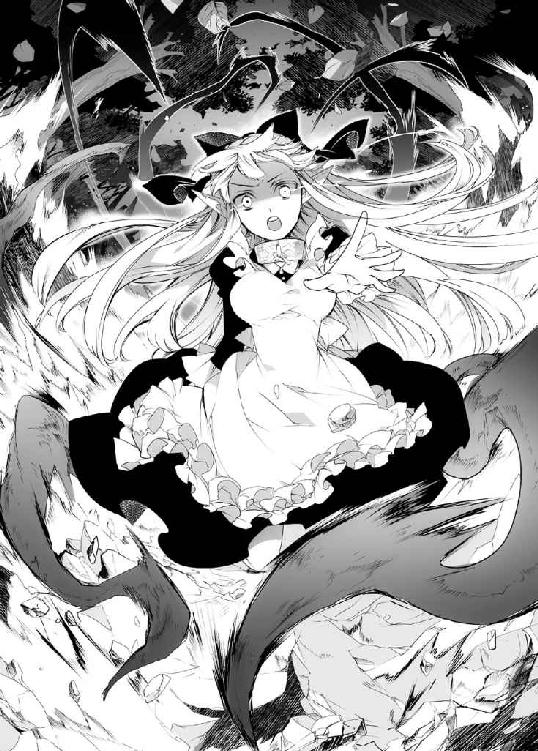
ベキベキベキっと骨が砕ける音を聞いて、ザガンはようやく我に返った。
「もういい！ 十分だ、やめろネフィ」
強引に抱きしめると、ネフィも驚いたように手を止める。
地中に引きずり込まれた騎士は、辛うじてまだ息をしていた。
――これは、ネフィの力なのか......？
エルフ特有のものなのだろうか。それとも、彼女が白い髪の変異種だからだろうか。
いずれにせよ、魔術すらも超えた、ザガンの知らない力だった。
シャスティルたちは引き返していった。
騎士三人は戦闘不能だから結界を修復して外に放り出してやった。あとはシャスティルが自分でなんとかするだろう。
――無関係な人間を巻き込んでしまった。すまない――
最後まで、あの少女は申し訳なさそうにそんなことを言っていたが。
そうして城に戻ると、ネフィがザガンの傷の手当てをしてくれた。
慣れているのか、手際よく包帯を巻いていく少女にザガンは問いかける。
「ネフィ、お前は魔術を使えないのではなかったのか？」
ピクリと、ネフィの体が震えた。
「魔術......では、ありません」
「ではなんだ？」
「それは......」
ネフィは露骨に顔を曇らせた。表情はさほど変わっていないが、ツンと尖った耳の先まで力なく垂れてしまう。
ザガンは肩を竦める。
「まあ、いいか。お前がどんな力を持っていようがいまいが、俺には関係ない」
もちろん、魔術だかなんだか知らないが、あんな力を持っているならなぜ人間に捕まったときに抵抗しなかったのかだとか、自力で首輪を壊せなかったのかだとか、ザガンの下から逃げようと考えなかったのかだとか、気になることは山ほどある。
しかしネフィがネフィであることにはなんの変わりもないのだ。
......ということを伝えたかったのだが。
――しまった！ いまのじゃまるでネフィのことなんてどうでもいいと言ってるみたいじゃないか！
いくらなんでもいまの言い方では伝わらなかったようだ。どうしようもないほど肩を落とすネフィに、ザガンも言い直すことにした。
「お前はネフィだ。それ以外の誰でもない。どんな力を持っていてもだ」
――ちゃんと言えた！
まだ微妙にわかりにくい言い方になってしまった気がするが、それでもネフィは驚いたように目を丸くした。
「......ありがとう、ございます」
しなだれていた耳が、ピクピクと震えた。
どうやら、少しは気持ちが楽になったようだ。......ザガンの言いたいことが伝わったのかは微妙なところだが。
そんなことを話しているうちに、包帯は巻き終わっていた。
痛みはあるが、動かせないほどではない。これなら日常生活には支障ないだろう。ある程度なら戦闘にも耐えられそうだ。
聖剣の魔力――と呼ぶのが適当なのかは知らないが――が抜けたらすぐに治癒できる程度の傷だが、ネフィの応急処置は完璧だった。
「うむ。悪くない。ご苦労だった」
「......いえ、わたしのせい、ですから」
今回は素直にお礼を言えたと思ったのだが、ネフィは俯いてしまった。
本当に、こういう場面での気の利く言葉を誰か教えてほしい。バルバロスの舌でも引っこ抜いて自分に移植しようかと真面目に考える。
脳が沸騰しそうなほど悩んで、ザガンはこんな言葉を絞り出した。
「あー......。怖く、なかったか？」
「わたしに、お訊きになるんですか？」
逆に信じられないという顔をされてしまった。
自分はまたなにか間違えてしまったのだろうか。唸っていると、ネフィは怖ず怖ずと口を開いた。
「ご主人さまは、わたしが、不気味だとは、思わないのですか？」
「なんで？」
最近は少しずつだが表情らしきものも浮かべてくれるようになって、ますます魅力的になっているのだ。どこか不気味な点などあっただろうか？
真面目に首を傾げると、ネフィは何度もザガンの顔を見上げたり俯いたりを繰り返す。
それでも、勇気を振り絞るように呟いた。
「なんでって......さっきの、わたしの、力です」
「ああ、見たことのない部類の力だったな。興味はある」
あるいは、そのあたりが〈魔王〉マルコシアスが彼女を欲した理由なのかもしれない。
そんなふうに納得していると、ネフィが不思議そうに言う。
「それだけ、ですか？」
「うん？ 別にお前を実験台にするつもりはないと言ったはずだが」
「それは、わかっておりますが、そういうことではなく......」
ようやくそのあたりは信じてくれるようになったようだ。
それは素直に嬉しかったのだが、ネフィの困惑はますます深まるばかりだった。
やがて埒が明かないと観念したのか、ネフィは白い髪をかき上げて語り始めた。
「あの力は、魔術ではなく〝魔法〟と呼ばれているそうです」
「魔法......だと？」
ザガンも知識としては耳にしたことがある。
魔術のような理屈と定義の積み重ねによって開発する技術ではなく、願うだけで万物に干渉し、場合によっては死者さえも蘇らせることができるという。
まさに人智を超えた神の奇跡だ。
そんなものを現実に目の当たりにする日が来るとは思わず、ザガンも目を丸くした。
「実在していたのか。エルフというのは、みんなそんな力を扱えるものなのか？」
しかしネフィは首を横に振った。
「いいえ。わたしは、呪い子ですから」
初めて出会ったとき、ネフィが言い淀んだ名前だ。
ザガンはじっと次の言葉を待った。
「わたしには、こういう力があります。でも、これはあってはいけない力なんだそうです。こんな力を持ってる白い髪の子供は生まれてはいけない生き物で、だから......」
紺碧の瞳には、なんの感情の色も浮かんでいなかった。
涙すらない。
お前は人間ではない。
意見することは許さない。
意志を持つことすらも認めない。
そんなふうに言われてきた人間の目だった。
――辛い、思いをしてきたんだな......。
こんなとき、どんな言葉をかけてやればいいのかザガンにはわからなかった。
ネフィは人形のような無表情で言葉を続ける。
「わたしたちの里が、人間たちに襲われたとき、わたしはこの力を使って里を守るように命じられました。でも......」
ゴクリと咽を鳴らして、ネフィは真っ青になりながら告白した。
「――いままで生かしてきてもらった恩を返せ――そう言われて、頭の中でなにかが壊れる音が聞こえました」
震える声で、言葉を続ける。
「わたしは、なんの抵抗もしないで、人間に捕まりました。それが、里のみんなへの、仕返しだったんです」
当然だろうと思った。
自分を迫害してきた相手を守れなど、どうかしている。むしろそれを命じた連中こそ、どうして守ってもらえると思ったのだろう。頭の中がめでたすぎて同情すら覚える。
「みんな、必死な顔で逃げていきました。わたしみたいに捕まった人は少なくて、みんな剣で斬られたり、魔術で焼かれたりして、たぶん逃げ切れた人は何人もいなかったと思います。エルフは死体でも役に立つらしいですから」
ネフィは、口元を笑みの形に歪めた。
「それを見て、わたしはざまあみろって思ったんです」
声は、震えていた。
「ひどいですよね？ わたしは、わたしを呪って死んでいくみんなを見て、心から笑ってたんです。今度はお前たちの方が苦しむ番だって」
そこまで語って、なにかの糸が切れたように少女は再び能面のような無表情になった。
「あとになってから、自分がなにをしたのか気づきました。自分が、他人が死ぬのを見て平気で笑えるような人間だって知ってしまったんです」
嗚呼、とザガンはため息をもらした。
――だから、ネフィは表情を浮かべられなくなったのか......。
そこで笑った自分が嫌になって、自分の感情まで否定するようになってしまったのだ。
それは、それだけ彼女が善良だった証だと思う。
全てを打ち明けると、ネフィは虚脱したようにへたり込んだ。
「ごめんなさい。軽蔑、されました、よね......？」
「なぜだ？」
心底不思議そうに首を傾げるザガンに、ネフィが耳を疑うようにまばたきをする。
「え、えっ？ いや、だって......」
「それくらい、普通だろう？ 俺なら里の連中を皆殺しにしている。もちろん、侵入者の人間ごとな。そうしなかっただけネフィは慈悲深いと思うぞ」
ザガンならやりかねないと思ったのだろう。
いや、実際にやる。シャスティルのような可愛い娘が相手でも、必要なら殺すつもりだった。ましてや、自分に苦痛を与えてきた相手ともなれば生かしておく理由を見つけることは困難だ。喜んで皆殺しにする。
ネフィを苦しめた里の連中ともなれば無償で拷問をサービスしてもいい。
ネフィはさらに困惑を顔に浮かべた。
「そういう、もの、でしょうか？」
「ああ。さっきの騎士どもに啖呵を切ったお前はもっと凄みがあったぞ？ あれだけできるのなら、エルフがどれほどの力を持っているかは知らんが、返り討ちにするくらいはたやすかったはずだ」
そう言って、ザガンはネフィに指を突きつける。
「それにネフィよ、お前は勘違いをしている」
「か、勘違い、ですか？」
「そうだ。お前は自分の〝魔法〟を悪いもののように考えているようだが、力にいいも悪いもない。刃物に善悪を求める馬鹿がいるか？ そんな概念を取ってつけるのはそれを振るう者と振るわれた者だけだ」
勢いに圧倒されたのか、ネフィはカクカクと頷く。
それでも、彼女の耳はシュンとしなだれたままだった。
「でも、わたしがやったことは、許されないこと、だと思います」
「誰が許さないんだ？」
「そ、それは、里のみんな......です」
「死んだんだろう？ なら放っておけ。死んでまで文句を言えるほど根性の据わった連中でもないはずだ」
ポカンと、ネフィが口を開いた。
「いいか、ネフィ。人は綺麗ごとだけで生きてはいけない。力を持っているなら強く生きろ。でなければ力がなくて死んだ連中への冒涜だ」
言葉の意味を噛みしめるように、ネフィは胸を押さえる。
「力は、持っていても、いいのですか？」
「なら聞くが、力を持つことは悪いことか？ 強さを求めるのは悪か？」
「それは......」
答えられないネフィに、ザガンは慈父のごとく優しく告げる。
「ちなみに、俺は悪だと言われた」
あまりといえばあまりな答えに、ネフィが硬直した。
「............ええっ？」
愕然とする少女に、ザガンは懐かしい思い出を振り返るように話す。
「誰だったかは忘れたが、ひとりでなんでもできる俺になんか自分の気持ちはわからないようなことを言われた。強い人間は弱い者の気持ちがわからないとな」
確か、野盗に襲われて逃げ惑ううちにザガンの領地に迷い込んで罠にまでかかったという、稀に見る哀れな少女だった。
それなりに可愛らしい外見をしていたし、ザガンも魔術師として力をつけ始めたころだった。独りでいることを寂しくも感じていたし、助けてやれば仲良くなれるのではないかという下心もあった。
それでも、あのとき助けようとしたのは善意だったと思う。
野盗は追い払ってやったし罠からも助けてやったのだが、その少女から返ってきたのはそんな言葉だったのだ。
――弱い人間は、生きてることも許されないんですか？ 力をひけらかすのがそんなに偉いんですか――
助けるんじゃなかったと後悔した。
一応、その少女は逃がしてやったものの反吐が出そうだった。
いまにして思えば、その少女もどこかに怒りをぶつけなければ気がすまなかっただけで、なにもザガンに対して憎しみを募らせていたのではないとはわかる。
それでも、ザガンが他人に対して失望するには十分な理由だった。
情けや優しさなど人を堕落させるだけの毒だ。そんなぬるま湯に浸ってきたから、あの少女は腐っていたのだ。
人を救うことに、自己満足以上の意味などない。
弱者など踏み躙られて当然の、無価値な生き物なのだ。
――そんな連中の気持ちなど、理解できるはずもない。
苦い思い出を吐き捨てるように、ザガンは言う。
「当たり前だ。そんな惨めな連中になりたくなかったから、俺は強くなったんだ」
弱者は他者を道連れにする。
困ったときに他人が助けてくれるなど幻想だ。
親でさえ子を見捨てるのに誰かを頼るなど、付け入ってくれと自分から誘っているようなものである。
だから、ザガンは必死で力を求めて強くなったのだ。
――まあ、その先にはなにもなかったけどな。
ひたすら強さを求めた結果、人間は信じるに値しないという結論を見てしまった。
孤高と呼べば聞こえはいいし気分もいいが、虚しくもあった。
それでも自分を信じることはできる。
ただ生きていくだけなら、それで十分なのだ。
ザガンは自嘲する。
――そんな俺が、ネフィひとりが落ち込むだけでこんなに気が動転しているのか。
自分でも滑稽だと思う。
それでも、これまでの自分の人生を否定するかもしれないとしても、目の前の少女が愛しくてならないのだ。
愛など虚構だと吐き捨てていながら、いまの自分が心から他人を愛しているのだと自覚してしまう。
初めての経験だ。
この矛盾はいつかザガンを破滅させるのかもしれないが、それさえも受け入れたい気持ちだった。
だからザガンは必死に不器用な言葉を紡ぐ。
「だからネフィ、他人なんて気にするな」
ネフィの真っ白な頬に手を触れて、自分でもどう言葉にしたらいいのかわからないこの気持ちを精一杯の形にする。
「だから、そんな顔をするなよ。お前が必要だと、言っただろう？」
紺碧の瞳が震える。
細い指が、ザガンの手を握り返した。
「わたしは、ここにいても、いいんですか？」
「当たり前だろう。あんな美味いものを食わされたんだ。いまさらネフィのいない生活など考えられん」
そこで持ち出すのが食い物のことでいいのだろうかと疑問を抱いたが、すぐにそれどころではなくなった。
ポロリと、ネフィの頬を涙が伝ったのだ。
「ネ、ネフィ？」
「う、うぅ......うぇ......」
ザガンが戸惑った声をもらすと、ネフィはそのままザガンの胸にすがりついた。
「わああああああああああああああっ」
そして、そのまま声を上げて泣き出してしまう。
ザガンはなにも言わず、少女が泣き止むまで頭を撫でてやった。
ほどなくして落ち着きを取り戻すと、ネフィは真っ白な前掛けをクシャクシャにいじりながら頭を垂れる。
「......その、お恥ずかしいところを、お見せしました」
「構わんさ。ネフィがそんなにしゃべってくれるところは初めて見たしな」
昼間のお返しにそう言うと、ネフィの耳の先が赤く染まった。
「ご主人さま、いじわるです」
それから、ザガンの手に視線を落とす。
いままでネフィの頭をなで回していた手だ。
「ご主人さま、その手、痛みはないのですか？」
「うん？ 言われてみれば、そうだな」
いつの間にか、痛みを感じなくなっていた。
別に感覚がなくなったわけでもないのに、なぜだろう？
首を傾げていると、ネフィがその手を取る。
「ご主人さま、失礼します」
そう言って、せっかく巻いた包帯を解き始める。
するとどうだろう。血の跡は残っているものの、そこには槍に貫かれた傷が綺麗さっぱりなくなっていた。
これにはザガンも目を丸くする。
「ネフィがやったのか？」
「わかりません。......でも、たぶん」
自信がなさそうに言うのは、きっと本人も意識せずにやったことだからだ。
そもそも、同族からも虐げられてきた彼女には、他人の傷を治したいなどと思ったこともなかったのだろう。
「驚いたな」
魔法というものは、聖剣の魔力すらも凌駕するらしい。
「これはすごいな」
「そう、でしょうか......」
「ああ。ありがとう、ネフィ」
素直に感謝を口にすると、ネフィは目をまん丸にした。
「どうした？」
「ご主人さまから、そう言っていただいたのは、初めてです」
このひと言には、ザガンも頭を抱えた。
――俺はいままで〝ありがとう〟のひと言さえ口にしていなかったのか。
ネフィはずっとザガンの食事を用意してくれたり身の回りの世話に腐心してくれたというのに。
「......あー、それは、すまん」
ザガンがそう言うと、ネフィはどこか嬉しそうに耳の先を震わせた。
「わたしは、ご主人さまのものですから」
その声が幸せそうに聞こえたのは、きっと気のせいではないだろう。
かつて自分の中に広がっていた空虚な気持ちは、いまはどこにも見当たらなかった。
◇
夜。これまでは研究に没頭していた時間だが、最近では眠るようになっていた。ネフィが規則正しい生活をしているから、それに合わせるうちに慣れてしまったのだ。
玉座で肘をつき、睡魔に身を任せていたころだった。
部屋の扉を、ノックする音が響いた。
「ネフィか。どうした、こんな時間に？」
いつもならネフィももう寝ている時間だ。
咽が渇いたのかもしれないが、こんな深夜に尖塔から下りてきて玉座の間にまで来るのは初めてだった。
入ってきたネフィは、真っ白な寝衣姿で一度は就寝していたのがうかがえる。両手でふかふかの枕を抱える姿は理性を失いそうなほど愛らしい。
ネフィは枕を抱きしめたまま怖ず怖ずと口を開く。
「あの、ご主人さま......」
「うむ？」
ずいぶんと改まった様子に、ザガンも姿勢を正す。
やがて、ネフィは意を決してこう言った。
「いっしょに、寝ていただいても、いいでしょうか？」
耳だけでなく顔まで赤くして、少女はそう言ったのだ。
ザガンも顔を強張らせる。
――俺は男で、ネフィは女で、それがいっしょに寝るってことはつまり......！
ゴクリと、生唾を呑み込む。
ザガンだって男なのだ。この可憐な少女の柔肌をめちゃくちゃにしてみたいと思ったことは一度や二度ではない。
しかし一時の欲望に身を任せてネフィを傷つけたら、きっとザガンは立ち直れない。
だから自制してきただけの話なのだ。
それが、ネフィの方から身を任せに来たというのか！
聞き間違えや言い間違いかもしれない可能性を考慮し、自分を落ち着かせながらザガンは問い返す。
「ネフィよ、自分の言っていることの意味は、理解しているか？」
「......はい」
彼女も緊張しているのだろう。
瞳に涙まで滲ませて、こう打ち明けた。
「この城に、ベッドはひとつしかありませんから」
歓喜を叫ぼうとして、ザガンは首を傾げた。
――うん？ でもなんだか、変な言い回しじゃないか？
確かに、この城にまともなベッドがあるとすれば、ネフィが使っているものがひとつだけだ。それ以外は寝具として機能しないほどボロボロだったり汚れていたりで、ネフィががんばって全部片付けてしまったのだ。
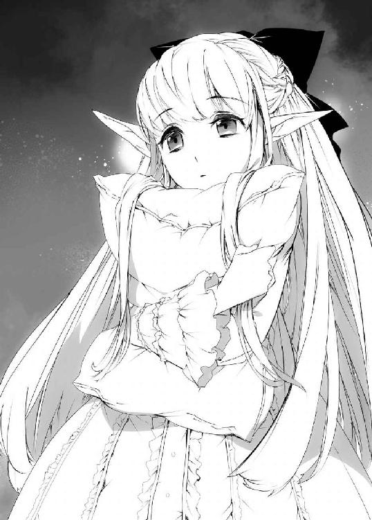
もちろんネフィの部屋で肌を重ねるのはやぶさかではないが、彼女が言っているのはそういうことではない気がするのだ。
数秒の間にそこまで思考した末、いまの自分の脳では処理しきれない難題だと理解し、ザガンは根負けしたように問い返す。
「つ、つまり......？」
ネフィも言葉足らずに気づいたのか、恥じ入るように口を押さえ、それから改まって語り始める。
「ご主人さまは、いつも座ったままお休みになっています」
「まあ、そうだな」
「横になって休まれた方が、安らぐのではないかと、思うんです」
しかし横になろうにも、ベッドはネフィのものしかない。
――つまり......あれ？ 体を許してくれるとか、そういうことじゃないのか？
ちんぷんかんぷんだという顔をするザガンに、ネフィは言う。
「ですから、ごいっしょに、寝てもらうのは、どうか、と......」
もう、火が出そうなほど真っ赤な顔だった。
ザガンも、同じような顔をしているのではないかと思った。
――純粋すぎんよ......。
つまり肉体関係を結びたいと言ったのではなく、純然たる添い寝をしたいと言っているらしい。それはそれで生殺しに思うのだが......。
ここまで気を持たせたのだから組み敷いてもいいのではないかという欲求と、ネフィにはむしろこのまま純粋でいてもらいたいような気持ちのふたつに挟まれる。
葛藤の末、ザガンが導き出した答えはこうだった。
「ネフィよ。気持ちはありがたいが、この部屋は結界の要なのだ。侵入者があったとき、すぐに動くのに都合がよいのだ」
血の涙が流れそうだった。
だが、それも事実ではあった。
――昼間に聖騎士どもが来たばかりだからな。
普段ならそこまでこだわりはしないのだが、いまは油断するわけにはいかない。
撃退した直後というのは気が緩みやすい。そこを狙って第二陣が攻め入ってくる可能性は低くなかった。
だから、なにかあったときにすぐ対応するため、この部屋に留まる必要があるのだ。
しかし、ネフィはその答えを予想していたように頷く。
「そうかもしれないと、思っておりました。ですので......」
ネフィは絨毯の上に座り込むと、両腕を広げた。
「どうぞ、わたしの膝を、お使いください」
――膝枕......だとっ？
この展開は予想できなかった。
しかも枕まで持ち込んできたところを見ると、彼女は一晩中でもそうしてくれるつもりらしい。幸せすぎて自分は死んでしまったのではないかと疑いたくなった。
即断できないザガンに、ネフィは広げたままの腕をパタパタと振る。
どうやら二度も言うのは恥ずかしいから早く来てくれと言いたいらしい。
――こんなお誘いを、断れるわけないだろうが......っ！
もう少しそんなネフィを眺めていたい気はしたが、ザガンはすぐに根負けして玉座から立ち上がった。
「う、うむ。では、頼もうか」
躊躇いながらも床に寝そべり、ネフィの膝に頭を預ける。
土足で歩く絨毯ではあるが、ネフィが洗って綺麗にしてくれたおかげでそこらの毛布よりもよほどふかふかしていた。
やわらかなふとももの間は人肌のぬくもりもあって、欲情する以上に不思議な安らぎがあった。
ネフィがじっと見つめてくる。
「いかが、でしょうか？」
「わ、悪く、ないな」
下から見上げると、彼女の顔はネフィの思いの外大きな胸に隠れて半分くらいしか見えなかった。すさまじく目のやり場に困る景色だ
そのままネフィはぎこちなくザガンの頭を撫でてくる。
くすぐったいやら心地好いやらでさらに視線を彷徨わせてしまう。
平静を取り繕うように、ザガンは咳払いをする。
「しかし、急にどうしたんだ？」
ネフィは戸惑うように一度視線を逸らし、それから囁くように言う。
「ご主人さまはわたしに......魔法のことを知っても、ここにいていいと言ってくださいました。だから、なにかお礼がしたくて......」
そんなことを口に出していってきたのは初めてのことだ。
それだけ喜んでくれたのだとわかり、なんだかザガンの方まで嬉しくなってきた。
ザガンは寝そべったまま少女の頬に手を伸ばす。
「お前はいつもよくやってくれている。改まっていうようなことではない」
「......はい」
はにかむように、ネフィは頷いた。
ザガンは、彼女に言いそびれていたことがあることを思い出した。聖騎士たちが来たせいで話せなかったのだ。
「なあ、ネフィ」
「はい」
無表情に頷く少女に、ザガンはこう打ち明けた。
「魔術を、学んでみる気はないか？」
ネフィはキョトンとしてまばたきを二度した。
「わたしが、魔術を、ですか？」
「ああ。お前にはセンスがあると思う。それに、昼間の〝魔法〟とやらも上手く制御できていないんだろう？」
いまは首輪に封じられて魔術を使うことはできない。
しかし〝魔法〟は首輪をつけたままでも発現したのだ。
あのとき放っておいたら、ネフィが攻撃した騎士は胴体が千切れていただろう。ザガンの傷を癒やしたのもそうだ。もっと意識的に扱えるようにならなければ、いつか自分自身も傷つけることになるかもしれない。
「仕組みの違う力だ。魔術を学んだからといって〝魔法〟が制御できるとは限らない。だが、身を守る力くらいにはなるはずだ」
多少、時間がかかるとしても、ザガンは彼女の首輪を外すことを諦めたわけではないのだから。
戸惑いを隠せないように、ネフィの瞳が震える。
「わ、わたしに、できるでしょうか......？」
「できるさ。ネフィなら、きっと俺よりも強い魔術師になれる」
元来、エルフは強い魔力を秘めた種族なのだ。そこにネフィのセンスがあれば〈魔王〉の座すら視野に入るだろう。
ネフィはギュッと胸を押さえる。
「わたしも、ご主人さまのお役に立てるようになるんですか？」
「もう、十分役に立ってくれてるがな」
単純な身の回りの世話だけではない。
少しずつ感情を見せるようになって、毎日顔を合わせて会話をする。そこでかけがえのないものを得られている実感があるのだ。
「わたしも、ご主人さまのようになれますか？」
「あー......力は、な？ できれば、それ以外はそのままでいてくれ」
魔術は教えてやりたいが、ザガンのような悪党に憧れるのは少し困る。
それにもっといろんな表情を見たくはあるが、いまのネフィのままでいてほしい気持ちもあるのだ。
「わたしも、ご主人さまをお守りできるように、なれますか？」
「聖騎士どもからも、守ってくれたろう？」
女の子に守られるのは情けないような気もするが、その気持ちは素直に嬉しかった。
ネフィの耳が、プルプルと震えた。
「やります。わたし、ご主人さまのために、魔術を学んでみます」
――そこは自分のためと言ってもらいたいが......。
それでも、なにかに対して意欲を持ってくれるようになったのは一歩前進できたのだと思う。
だからザガンもそれを褒めるようにこう答えた。
「ならネフィ、お前はいまから俺の弟子だ」
「はい」
その表情は、もはや幸せそうにすら見えた。
――弟子、か......。
言ってみるまで、考えもしなかった。自分の知識と力を誰かに与えたいだなんて。
それでもネフィになら無条件で伝えたいと思ったのだ。
お互い無言のまま、しばらくそうしていた。
それから、不意にネフィが慰めるような声音で言う。
「あの、ご主人さま」
「なんだ？」
「夕方のことですが......」
夕方というと、騎士たちを追い返したあと、ネフィがザガンの手当てをしてくれていたころだ。
「ご主人さまはおっしゃいました――ひとりでなんでもできるご主人さまには、弱い者の気持ちがわからない――と」
「ああ、そんな話もしたな」
秘密を打ち明けてくれたネフィに返した言葉のひとつだ。
つまらない思い出話ではあるが、ネフィに他者の目や言葉など気にする必要はないということを伝えたかったのだ。
ネフィは愛しそうにザガンの頭を撫でる。
「ご主人さまはなんでもないようにおっしゃいましたけど、本当は辛かったんですよね？」
ザガンは、目を見開いた。
「どうして、そう思う？」
ネフィは真っ白な髪を揺らして首を横に振る。
「わかりません。でも......」
まるで自分の痛みのように、少女は胸を押さえる。
「あのときのご主人さまは、とても悲しそうに見えたんです」
ネフィはザガンを抱きしめるように体を丸める。
柔らかな膨らみが顔にのしかかり、思わず顔が赤くなった。
「お、おい......」
そんなザガンの動揺など気にも留めず、ネフィはこう言った。
「ご主人さまは悪くなんかないです。口数が少なくても、ご主人さまが優しくしてくれたことを、わたしは忘れません」
不覚にも、そのひと言には涙が出そうになった。
声が震えそうで、なんとか返せたのはこんな言葉だった。
「......そうか」
それでも、ネフィは嬉しそうに耳を震わせて頷いた。
「はい」
押し付けられたネフィの胸から、心臓の鼓動が伝わってくる。
緊張なのか羞恥心なのか、それとも別の気持ちなのか、とても速い音だった。
いままで張り詰めていた気持ちがふにゃふにゃに解けていくような感覚。肩から力が抜けていく。
「ネフィ」
「はい」
呼んではみたものの、言いたい言葉は思い浮かばなかった。
ただ、少女の名前を呼んでみたかったのだ。
「こういうのも、悪くない、もんだな」
「......はい」
ネフィはいつものように頷くばかりだ。
きっと、いまなら体を求めても彼女は拒まないだろう。
なのに、少女の膝の上はあまりに心地好くて。
ザガンはいつの間にか眠りに落ちていた。
こんなに安らいだ気持ちで眠れたのは、ずいぶん久しぶりのことだった。
◇
「おいおいおいおい、聖騎士に襲撃されたって聞いたのになんでお前無傷なの？」
翌日。玉座の間。
人の結界を破って侵入してくるなりそんなことを言ってきたのはバルバロスだった。
顔を合わせるのは一週間ぶりほどだが、この男のこういう態度はいつものことだ。ザガンもうっとうしそうに手を振る。
正直、一番助けがほしかったときには姿を見せず、いまさらやってこられても邪魔なだけなのだ。
「知るか。連中が弱いのが悪いんだろう？」
「弱いって、聖剣所持者まで差し向けられたって聞いたぞ？」
「聖剣？ ああ、そういえばいたな。そんなのも」
シャスティルのことだが、正直そのあとネフィが〝魔法〟を使ったことで記憶からすっ飛んでいた。
それに彼女は聖騎士ではあるが、敵意は向けてこなかったのだ。本気で聖剣を振るえばザガンとも対等に戦えただろうに。
だからあまり敵という意識はなかった。
「はっ、聖剣の乙女でも相手にならないってか？」
「いや、それなりに強かったぞ？ 城の結界をいくつか壊されたしな」
そちらの復旧もまだ終わってはいないため、この男と会話をするくらいならそちらの修復をしたいところだった。
そんなことを話していると、ネフィが紅茶と焼き菓子をトレイに載せてやってきた。
いつの間にか用意されていた小さなテーブルにトレイの上のものを並べると、折り目正しくぺこりと腰を折る。
「どうぞ。紅茶にはミルクと砂糖をお好みでお使いください」
そう言ってザガンの後ろに立つネフィを見て、バルバロスがポカンと口を開く。
「お、おい、そいつ、この前のエルフだよな？ 違うのか？」
「いや、あのときの娘で間違ってない」
「まだ贄に使ってなかったのか？ それともあれか？ 命を永らえさせてやる代わりに給仕しろとかそういうのか？ そりゃいい。いい趣味してるぜ」
信じられないというように妄想を語るバルバロスに、ネフィが怯えたようにザガンの裾にしがみついてきた。
「お前といっしょにするな。ネフィはあれだ。......その、弟子だ」
バルバロスはひくひくっと顔を引きつらせ、それから理不尽な現実でも突きつけられたかのように叫んだ。
「はああっ？ 弟子？ お前、弟子って言ったの？ 弟子って言ったらあれだろ？ 自分の魔術を教えたりするあれだろ？ お前が？」
「悪いかよ」
唾を飛ばして顔を近づけてくる悪友を、ザガンは嫌そうに押し返す。
しかしひと目惚れして買い取ったとも言いづらい。少し悩んで、それらしい言い訳を閃いた。
「ひとりでは扱えん魔術もある。ネフィは必ず役に立つ」
またネフィを道具のように言ってしまうが、精一杯の褒め言葉だった。
――魔術なんぞあっても、ひとりじゃ手に入らないものもある。
ネフィが与えてくれたものはそういうものだと思う。
回りくどい言い方にネフィも慣れたものなのだろう。優雅にスカートの裾を広げて頭を垂れた。
「恐縮でございます」
面食らったように、バルバロスはペシンと額を叩く。
「くそ、なるほど......。エルフとふたりがかりなら使えない魔術なんてねえよな。そういう使い方は、思いつかなかったぜ」
ネフィを道具のように言われて、ザガンは自分の顔が剣呑になるのがわかった。
自分も似たようなことを言ってしまったが、他人に言われて許せるかは別の話だ。
バルバロスはハッとした顔をする。
「まさか、聖騎士どもを一蹴したのもその力か？」
「まあ、確かにネフィの力もあったな」
聖騎士のひとりは確かにネフィが倒したのだ。力を借りたといっても間違いではないだろう。
神妙な面持ちで、バルバロスは呟く。
「なら、入り口のあの破壊もそういうことか」
そういえばネフィが森を操った跡を直していなかった。この様子では、バルバロスもその痕跡を見たのだろう。確かに魔術とは質の違う破壊だった。
ザガンの表情を肯定と受け取って、バルバロスが呻くような声をもらす。
「お前、本気で〈魔王〉の座を狙ってるんだな？」
その名前を聞いて、ザガンも思い出した。
自分も、目の前のバルバロスも、その〈魔王〉の候補に選ばれているのだ。正直、ネフィのことで頭がいっぱいで、ここ数日は思い出しもしなかった。
なぜなら、ザガンには地位以外に狙っているものがある。
――〈魔王〉の座がなくとも〝アレ〟さえ手に入ればいいんだからな。
ネフィにかまけて〈魔王〉という存在に興味を失ったからではない。むしろ、いまもっとも〈魔王〉に固執している魔術師こそがザガンだろう。
正確には、〈魔王〉が持っている〝あるもの〟が必要なのだ。
それでも、と思う。
――〈魔王〉の地位があれば、ネフィに手を出す魔術師はいなくなるか？
ネフィはザガンの弟子になったのだ。ザガンが〈魔王〉になれば彼女は〈魔王〉の弟子、延いては次期〈魔王〉にもっとも近い存在となる。
いくら腕に自信のある魔術師でも、そんな相手にケンカを売る馬鹿はいない。
だからザガンは獰猛に笑い返した。
「狙わん理由があるか？」
正直なところ、いまの段階で自分が選ばれることはないと思う。
謙遜や卑下ではなく、十八歳という年齢で、何百年も生きる他の魔術師たちを蹴落とすことは難しい。
ザガンが魔術師としての道を歩み始めたのはほんの十年前で、他の魔術師たちは何百年という時間をかけてそれを成し遂げてきたのだ。時間による知識と経験の蓄積ではどう足掻いても勝ち目はない。
――それでも、生きていればさらにその次の〈魔王〉は狙える。
〈魔王〉の世代交代などそうそう起こることではないが、百年も生きていればきっと次が来る。
ザガンは紅茶のカップを手に取る。
胸がすくような香りを味わってからカップに口をつける。銘柄はわからないが上品な味だった。焼き菓子にとても合っていた。
「うむ。いい味だ」
「歓喜の極みです、ご主人さま」
そんなやりとりを、バルバロスが意外そうに見つめていた。
「ザガン、まさかとは思うが、そいつに情が湧いたとか言うんじゃねえよな？」
「弟子を大切にするのは、そんなにおかしなことか？」
言ってから、弟子という言葉は便利でいいと思った。いつもどう誤魔化すか苦悩していたひと目惚れを、ひと言で解決してくれるのだから。
バルバロスが声を上げて笑う。
「かかっ、なるほど、そういうことか。......お前にも人間らしい部分が残ってやがったんだな」
「ほっとけ」
バルバロスは紅茶を一気に飲み干すと、席を立った。
「なんだ。もう帰るのか？」
「ああ。お前に〈魔王〉の座を譲るつもりはねえからな。それに、思わぬ収穫もあった」
首を傾げるザガンをよそに、バルバロスは本当に帰っていった。
「なにをしに来たんだ、あいつは......」
呆れてため息をもらすと、ネフィは不思議そうな声をもらす。
「ご友人ではないのですか？」
「冗談じゃない。友達なんてものは相手を選ばないと不利益しかもたらさないものだ」
「でもご主人さま、楽しそうでした」
「そうか？」
「はい」
認めたくはないが、ネフィは確信を持って頷いた。
――あんなやつと話しているのが、楽しいだと？
くだらないと思う。ネフィの勘違いだ。
しかしなぜか、それを否定できない自分がいた。
もしかすると、ザガンは自分が気づいていないだけで、恵まれていないわけではなかったのかもしれない。
納得いかない気持ちを紅茶で流し込み、ザガンも玉座から立ち上がる。
「さて、それでは聖騎士どもに破られた結界の修復でも始めるか。ネフィも来るがいい。魔法陣の基礎から始めることになるからな」
「はい、ご主人さま」
声をかければ応えてくれる。
ひとりではない時間というものは、存外に甘美なものだった。
◇
ザガンがネフィを買い取ってから、半月が経っていた。
彼女は魔術の基礎も勤勉に学び、首輪さえ外せばそこそこの魔術を使えるだろうところまで来ていた。
〝魔法〟の方は、やはりまだ制御が難しいらしい。そしてあれも決して万能な力ではないらしく、制約も多いという。そちらの改善はまだまだ道のりが長そうだ。
それでもふたりの生活は充実していると思えた。
そんなとき、ザガンに〈魔王〉からの召喚状が届いた。
――さて、いったいなんの用なのやら。
そうして出向いた先には、十二人の人影が待っていた。
それぞれ顔を隠していたり、こちらからは陰になる位置を取っていたりで、顔を確かめることはできない。
だがそんな隠蔽に意味はないだろう。
彼らから感じる桁の違う魔力に、その正体は自ずと知れた。
――おいおい。
額に汗が滲むのがわかった。
ただ見つめられただけだというのに、体の芯から震えるような威圧感。大気そのものが泥になったかのように粘り着く悪意。ここに立っているだけで胃の中のものが逆流しそうだった。
彼らは本当に自分と同じ生き物なのだろうか？
蛇に睨まれた蛙どころの騒ぎではない。蛇の腹の中に呑まれた蛙のような気分だ。
現存する十二人の〈魔王〉――それが、この場所に集結していた。
魔術師の行き着く先が、彼らだ。
あの中の一員になるか、たどり着けずに朽ちていくか、魔術師の行く末はそのふたつしか存在しない。
やがてひとりが厳かに口を開く。
「汝が、ザガンか」
それに続いて、女の声が響く。
「若いとは聞いていたが、幼いほどだな」
さらに別の声が続く。
「おもしろい。最年少記録ということだな」
〈魔王〉たちはザガンを眺め、おかしそうに笑い声を上げていた。
見世物にされているようで気分はよくない。敬意を払うべき相手なのだろうが、ザガンは年寄りどもの道楽に付き合っている暇はないのだ。
――早く帰らないと、ネフィの作る晩ご飯に間に合わなくなる。
それにこうしているいまも、ネフィはひとりで待っているのだ。
城の結界は復元したとはいえ、聖剣クラスの武器を持った聖騎士やバルバロス並みの魔術師が相手なら侵入は阻めない。ネフィの〝魔法〟が不安定な以上、長時間城を空けるわけにはいかなかった。
だから、ザガンはふてぶてしく言い放つ。
「召喚の理由は珍獣観察か？ 気がすんだのなら、俺はさっさと帰りたいんだが」
格上相手に殺されても文句の言えないような暴言ながら、〈魔王〉たちはむしろ気をよくしたように呟く。
「ふふ、これは失礼をしたな」
「我らとしても汝のような魔術師は初めてなのだ。好奇心がうずくのを許せ」
「それに剛胆だ。この場で我らに啖呵を切れるとは」
口々に笑い声を上げて、やがて彼らの中のリーダーらしき人影が言う。
「単刀直入に言おう」
老獪な声音は、聞いているだけで心臓を鷲摑みにされるかのようだった。
冷や汗を堪え、ザガンは正面から人影を見据える。
そして、人影はこう告げた。
「魔術師ザガン。汝を我らが十三番目の盟友――〈魔王〉として迎えようと思う」
あまりにとうとつなひと言に、ザガンも硬直した。
――聞き間違いか？ 俺を〈魔王〉にする、だと？
歓喜よりも先に、担がれているのではないかという疑念が込み上げる。
口を開く前に、〈魔王〉たちの背後に光でできた巨大な紋章が浮かび上がった。
いや、光ではない。魔力だ。尋常ではない密度と量の魔力で紡がれているのだ。目にしただけで膝を折りたくなる、圧倒的な力の塊だった。
そして、その紋章と同じ力が、この場にいる十二人から感じられた。
リーダー格の影が言う。
「マルコシアスが宿していた〈魔王の刻印〉だ。〈魔王〉を継ぐということは、この紋章を受け継ぐ作業を示す」
ゴクリと、咽が鳴った。
――〈魔王〉というのは、ただの称号ではなかったのか？
紋章の継承――こんな力を継承するというなら、魔術師が〈魔王〉に敵う道理はない。全ての魔術師が〈魔王〉に従わねばならないのは、ただの上下関係の話ではなかったのだ。
こんなものを見せたということは、どうやらザガンを〈魔王〉にするというのは冗談ではないようだ。
気がつくと、咽の奥がからからに渇いていた。
咽をひくつかせながら、ザガンは問い返す。
「俺を、〈魔王〉にするだと？」
「不服か？」
「そうは言わんが、不可解だ。俺より力のある魔術師がいないわけではないだろう？」
たとえばバルバロスだってそのひとりだ。
ネフィを買ったオークションで見かけた魔術師たちだってザガンよりも長い時を生き、莫大な知識と力を貯えた者たちだったはずだ。
そもそも、ザガンは通り名すら持っていないのだから。
「当然の疑問だな、ザガン。汝の力は矮小だ」
「我らが息を吹きかけるだけで消えかねぬほどにな」
だが、人影たちは続ける。
「それでも、汝を殺せる魔術師はいない」
心の中で舌打ちをした。
――手の内まで見抜かれているのか。
ザガンの魔術とは、人影が言うような力なのだ。
「汝が初めて殺めた魔術師は《怨嗟》の名を持つアンドラスであったな」
ザガンを魔術の生贄にと攫った魔術師の名だ。
「いまの汝ほどの力はなかったが、弱い魔術師でもなかった」
「万が一にも、八歳の童に後れを取る無能でもなかった」
「なのに、汝はそれを逆に殺し、その叡智の全てを奪った」
悪逆の記録。
だが、〈魔王〉たちはそれを偉業のように讃える。
「それまでの人生で、汝が魔術に触れる機会はなかった」
「汝が魔術を見たのは、アンドラスが汝に放った一度限りだった」
「そんな汝がいかにして名前持ちの魔術師を屠ったのか？」
愛しささえ込めるように、影のひとりが言った。
「汝は、たった一度見ただけで魔術を覚えたのだ」
いいや、と別の影が続ける。
「その一度で、汝は魔術の仕組みさえ理解したのだ」
「だからその一度で唯一無二の魔術を創造できたのだ」
ザガンにはザガンだけの魔術をひとつだけ持っている。アンドラスから奪ったもので、過去の魔術から学んだものでもない。
他の誰にも扱えない、ザガンだけの魔術だ。
それこそが初めて覚えた魔術であり、アンドラスを仕留めた魔術だ。
「畏怖すべき魔術。そして――」
「忌むべき才能」
讃えるように十二人の人影は囁く。
「それは汝が奪うと決めたら誰にも止められないということだ」
「それは汝が殺すと決めれば誰も生き延びられぬということだ」
「汝が力を欲すれば、全ての魔術師は全てを捧げざるを得ない」
「汝が一度命ずれば、全ての魔術師は無条件に従わざるを得ん」
「まさに〈魔王〉の名にふさわしい、暴君の力だ」
口々に賛美の言葉を投げながら、しかしその声には〝自分には及ばないが〟という確信がありありと感じられた。
そしてそれを突きつけるかのように続ける。
「矛盾するようだが、いまの汝は矮小だ」
「しかしおぞましいほど強力な才能」
「才能とは可能性だ」
「汝はいずれ、歴史上最強の魔術師となる」
「だから、敢えて矮小な汝を〈魔王〉とする」
「全ては叡智の高みのために」
「全ては魔術を究めるために」
歌うような〈魔王〉たちの合唱が止む。
自分が、影たちの空気に呑まれていることを自覚する。
それを振り払うように、ザガンは睨み返した。
「その言葉通りなら、俺はこの場であんたたちからも奪うことができるわけだな？」
もちろん、この場で彼らに戦いを挑むほどザガンは愚かではない。それでも彼らがどんな存在なのか、確かめるための問いかけだ。
その言葉を待っていたように、〈魔王〉たちは笑う。
「然り。だが、心せよ」
「我らから奪えるものより、汝が失うものの方が大きいやもしれぬぞ？」
ザガンは臍をかんだ。
――そこまで把握されているならネフィのことも知られてるよな。
〈魔王〉が持てる限りの力で抵抗するのだ。単純な人質ですまされるわけがないだろう。仮にネフィと出会う前だったとしても、結果は変わらない。
彼らは敵対する全てを破滅させる。
〈魔王〉でもザガンを殺せないかもしれないが、殺されないというだけでザガンにも〈魔王〉は倒せないのだ。なにかを得るたびにそれを奪われ壊されることになる。
結局は破滅するだけだ。
そこで初めてザガンは思い知る。
――俺は、そんなところにネフィを巻き込んだのか？
さて、とリーダー格の影がいう。
「汝の返事を聞きたい」
「......その前に、ひとつ欲しいものがある。そいつが手に入るか次第だ」
「ははっ、欲が深いな。申してみよ」
ザガンは自分が欲しているものの名を口にした。
影たちはおかしそうに頷く。
「よかろう。マルコシアスの遺産、全て汝の好きにするがいい」
「ずいぶんと、簡単に言うんだな」
「言ったはずだ。汝が奪うと決めれば、誰も阻めぬとな」
目的のものは、拍子抜けするほど簡単に手に入ってしまった。
ザガンは頷く。
「ならば〈魔王〉の地位、慎んでお受けする」
それからリーダー格の影が言う。
「新たな盟友を歓迎しよう」
意外なことに、そこでザガンに送られたのは拍手だった。
人間と会話をしている気がしなかったというのに、存外に人間らしい反応だ。それが逆に不気味でさえあった。まるで人外の怪物が人間を真似ているかのようで。
気がつくと、握った拳は汗で濡れていた。
それでもいくらか重圧から解放されて、ザガンはこの場に関係のない疑問を投げかける余裕を取り戻した。
「あんたたちに、ひとつ聞きたいことがある。人の生皮を剥いで魔術を使う男のことを知らないか？」
影の中のひとりがすぐに口を開く。
「恐らく《顔剥ぎ》のことだろうな。取るに足らない魔術師だ。すでに汝が始末したと聞いているが？」
どうやら、その魔術師で間違いないようだ。
「腕の立つ魔術師だったのか？ 他の魔術師の領地でその結界を破れるほどの」
「無理だろうな。やつは間者として優秀ではあったが、結界に関しては児戯の域を出ない程度だ」
その答えに、ザガンはいっそう陰鬱とした気分になった。
――つまり、やつには協力者がいた。
そしてザガンの結界を破れる人間など限られている。その〝協力者〟の正体などすぐに知れた。
つくづく、魔術師という人種が救いがたい生き物だと思い知らされる。
影は首を傾げる。
「汝が気にかけるほどの男でもなかったはずだが？」
「ああ、その通りだ。下らないことを聞いた。忘れてくれ」
それから、別の影がふむと頷く。
「これは失念していたな」
「なにがだ？」
「汝には通り名がなかったな。これは不便だ」
「ああ。そういえば、なかったな」
そんなザガンが〈魔王〉の名を与えられるとは前代未聞だろう。
「だが、汝の名など決まりきっていよう？」
「で、あるな。マルコシアスもすでに決めていたようだ」
かくして、ザガンは思い掛けず〈魔王〉の地位を手に入れた。
◇
「おかえりなさいませ、ご主人さま」
城に戻ると、ネフィが迎えてくれた。
相変わらず表情は変化に乏しいが、その耳がピクピクと震えている。
ザガンが帰ってくるのが待ち遠しかったと言わんばかりの反応だった。
「お食事の支度ができています。今夜は子羊のシチューをご用意しました」
「あ、ああ......」
柔らかい反応を返してくれるネフィに、急に罪悪感のようなものが込み上げてきた。
――ネフィはまだ、汚れてないんだ。
エルフの里での事件だって、彼女はなにもしなかったというだけで誰も殺していない。聖騎士に攻撃をしかけたときも、結局はザガンが止めた。
しかし、ザガンは違う。
違うということを、思い出してしまった。
得体の知れない〈魔王〉たち。
魔術師の目指す先にいるのが彼らだ。
全ての魔術師の到達点があれなのだ。
ザガンは彼らと同類だ。すでに同じものになってしまった。そのザガンといっしょにいるということは、ネフィの行き着く先もそこだということだ。
光など一片も射し込まぬ、暗闇の泥の底だ。
――いまなら、まだ引き返せるかもしれない。
ザガンはもう手遅れだが、ネフィにはまだ光の中の未来があるのだ。
「ご主人さま？ なにかあったんですか？」
俯いていると、ネフィが心配そうに見上げてきた。
先ほどまでツンと尖っていた耳までシュンとしなだれてしまっている。他人のザガンを心から思い遣ってくれているのがわかってしまう。
こんな健気な少女を、あの暗黒の中に引きずり込むのは正しいのか？
ネフィの首には、いまも無骨な首輪がはまっている。
彼女をザガンの所有物たらしめている象徴だ。
――これさえなければ、ネフィは、自由になれる。
首輪さえなければ、人々も偏見なく受け入れてくれるだろう。
キュアノエイデスがいいだろう。
あの街の人々は、魔術師のザガンや首輪をはめたネフィに対してもあたたかく接してくれた。それになにかあってもザガンが守ってやれる距離だ。
初めはネフィも戸惑うかもしれないが、ぬくもりを与えられれば次第に打ち解けられるだろう。ザガン相手にもここまで心を許してくれたのだから。
ザガンは、ふところから一本の鍵を取り出した。
「ネフィよ、俺は〈魔王〉になることになった」
「まおう、ですか？」
「魔術師の王だ。他の魔術師を従える、魔術師の頂点だ」
少女はにわかに目を丸くすると、両手を重ねて頷いた。
「おめでとうございます、ご主人さま」
表情は相変わらずだが、心から祝ってくれているのだと感じた。
だからこそ、胸が痛くてたまらない。
身を裂かれるような思いで、言葉を続ける。
「〈魔王〉を襲名したことで、先代のマルコシアスの遺産も手に入った。ネフィ、お前を捕らえた魔術師のことだ」
そして、いまザガンが手にしている鍵もマルコシアスの遺産だ。
ザガンが、十二人の〈魔王〉に対し欲しいと要求したものだ。
「ネフィ、動くなよ」
そう言って、少女の首輪に鍵を差し込む。
カチャリと軽い音を立てて、鉄の首輪はバラバラになった。
「え......？」
信じられないという顔で、ネフィは地面に転がった首輪の残骸を見る。
「ご、ご主人さま、これって......」
顔を綻ばせるネフィに、ザガンは頷く。
「ああ。〈魔王〉の俺には、もうネフィは必要ない。出ていってくれ」
誰よりも愛しい少女に、ザガンは冷たくそう告げた。
不器用なふたりの共同生活が、とうとつに終わりを告げた瞬間だった。
気がつくと、ネフィは街の片隅、無人の廃屋の前で踞っていた。
――どうして、わたしはこんなところにいるんでしたっけ......？
頭の中に霧がかったようで、上手く考えられない。
景色には見覚えがある。キュアノエイデスだろうか。ザガンと初めて出かけた街であり、その後も食料の買い出しなどでちょくちょく訪れている場所だ。
どうやってここまで来たのかまったく覚えていない。
そもそもこんなところでなにをしているのだろうか。夕食の支度をしたところまでは覚えているが、ザガンはそれを食べてくれたのだったか？
ネフィが初めて作った料理で、いつも無愛想な彼が目を丸くして喜んでくれたシチューを作ったのだ。
また、彼があんなふうに喜んでくれる顔を見たくて。
早く彼の下に帰らなければ。
そう考えて、自分が握っているものに気づく。
バラバラになった首輪の破片。ネフィの首に、首輪はもうついていなかった。
――ああ、そうだ。わたしは......。
「ご主人さまに、捨てられてしまいました」
言葉にすると、とたんに思考が千々に乱れた。
心が停滞していくのを感じる。
そうでもなければ、ネフィは正気を失っていたかもしれない。
――お側に置いてくださると、おっしゃったのに......。
初めてだったのだ。
ネフィをひとりの人間として扱ってくれて、たくさんの言葉をかけてくれた。部屋や服を用意してくれて、生き甲斐を与えてくれた。
自分を必要だなんて言ってくれたのは、ザガンだけだったのだ。
ネフィがいてもいい、居場所を見つけられたのだと思っていた。
なのに......。
膝を抱いてそこに顔を埋める。
「こういうとき、涙って出ないものなんですね......」
ザガンに捨てられたことに、まるで実感がわかない。
そのせいかもしれないが、悲しいという感情が浮かばない。
このまま目を閉じて眠ってしまえば、目が覚めたときには城に戻っているのではないかと思う。
それでいて、そんなわけがない、これが現実だということも頭の片隅で理解している。
なのになんの感情も働かなかった。
そんなときだった。
「お前、あのときの......？ 魔術師ザガンの使用人か？」
聞き覚えのない声だった。
顔を上げると、そこには騎士の鎧をまとった少女が立っていた。背中には大きな剣を背負っている。
声に覚えがなくともその格好には見覚えがあるような気がして、しばらく観察してみる。やがてどこで見たのかを思い出した。
「ご主人さまと戦っていた......？」
あのときの聖騎士のひとりだ。
そういえば、この少女だけは大した負傷もなく引き返していったのだった。
――いいか、ネフィ。聖騎士どもには近づくな――
いつだったか、ザガンが話してくれたことがある。
魔術師を目の敵にしていて、それに関わった全ての人間を罪人として処刑する殺し屋だと。ザガンに仕えているネフィとて狙われる危険があるから気をつけるようにと。
そんなふうに言ってくれたザガンは、もう自分の側にはいない。
どうしてこんなことになったのか、さっぱりわからなかった。
「わたしは、殺されるんですね」
全てを諦めきったように、ネフィは呟く。
恐らくこの少女にも〝魔法〟を見られている。ザガンのような心ある魔術師でも悪と決め付けるような人種が、魔法を操るネフィを生かしておくとも思えない。
首輪はもうない。
ザガンに教えてもらった魔術と魔法があれば、目の前の少女と戦うことができるかもしれないが、もうそうする意味さえ見つけられなかった。
――ご主人さまがいないのに、わたしが生きていても意味なんてない。
別にここで死んでもいいと思った。
......なのだが、少女は慌てた顔で首を横に振る。
「ま、待て！ 誤解するな。私はなにもあなたに危害を加えるつもりはない」
「......？ 聖騎士は魔術師を殺す人でしょう？ わたしは、魔術師のご主人さまの使用人で、ご主人さまの弟子です。どうぞ、首を刎ねるなりなんなりしてください」
「ひ、人を殺人鬼みたいに言うのはやめろ！」
「違うんですか？」
「違うもん！」
なぜか少女の方が涙ぐんで否定していた。
そんな口論を始めたせいか、いつの間にか周囲には人集りができていた。
（おい、なんの騒ぎだよこれ。あそこにいるの、ネフィちゃんじゃねえの？）（聖騎士だよ。ネフィちゃん、魔術師んとこの使用人だから目をつけられたんじゃねえか）（誰か助けた方がいいんじゃねえか？ ネフィちゃん、ただでさえ気が弱そうなのに）
野次馬たちは口々に勝手なことを言うが、なぜか批難は少女の方に集中していた。
「ち、違うと言ってるだろうっ？」
少女は怯えるように後退る。
そして、見ていられなくなったように人集りの中から人影が飛び出す。
「とう！ ネフィちゃん、大丈夫？」
ネフィを背中にかばうように飛び込んできたのは、見覚えのある翼人族の娘だった。
「マニュエラ、さん」
ネフィの服を見繕ってくれた服屋の店員だ。
あのあともときおり街で顔を合わせては新しい服を勧められたりした。城で着ている寝衣も彼女に見繕ってもらったものだ。
ネフィの顔を見て、マニュエラは絶句する。
「ど、どうしたの？ なにをされたの？ 怪我は？ ご主人さまはいないの？」
どうやら、いまのネフィは相当ひどい顔をしているらしい。マニュエラは血まみれの怪我人でも見つけたかのように慌てふためいていた。
「なんでも、ありません。怪我も、してません」
「なんでもないわけないでしょ！」
声を荒らげると、翼人族の娘はきっと少女を睨みつける。
「ちょっとアンタ！ いくら教会の騎士だからって恥ずかしくないの？ こんなか弱くて気のいい子をいじめるなんて！」
「そうだそうだ！」「聖騎士は帰れ！」「寄付金をもっと安くしろ！」
人集りから批難の嵐が巻き起こる。
「ち、違っ......」
「なにが違うって言うんだ！」「ネフィちゃんにあんな顔させて、よくも平然としていられるな！」「人間のやることじゃねえ！」
もはや暴徒のような怒号に、少女は見る見る青ざめてへたり込んでしまう。
勝手に騒ぎが大きくなっていくが、ネフィは別に聖騎士の少女になにかされたわけではない。そっと仲裁の声を上げた。
「あの、待ってください、みなさん」
「大丈夫よ、ネフィちゃん。アタシたちが守ってあげるから」
果敢に笑みを返すマニュエラに、ネフィは屍のような眼差しのままこう言った。
「......いえ、わたし、その人にはまだ、なにもされてません」
シンッと、静まり返った。
「え、でも......」
「違うって言ってるのにぃ......」
騎士の少女はすでに泣き出していたらしい。涙と鼻水で見るも無惨なありさまだった。
「ひぐっ、私だって......えぐっ、傷ついた顔してる女の子がいたら、ぐしゅ、心配くらい、するもん......」
どうやら、彼女は本当にネフィがひどい顔をして踞っていたから声をかけてくれただけだったらしい。
自分のせいで追いつめてしまったのだと考えると、なんだか申し訳なくなってきた。
「えぇー......」
マニュエラが露骨に困った顔をする。
「じゃあ、なんでネフィちゃん、そんな顔をしてたの？ ただごとじゃなさそうだけど」
「それは......」
「うえぇぇぇぇん！」
なんと答えたものか迷っていると、聖騎士の少女はもう醜態も顧みずに泣き出してしまった。
ネフィは立ち上がり、ペコリと頭を下げる。
「お騒がせして、申し訳ありませんでした。......そちらの騎士さまも、失礼しました。それでは、わたしはこれで」
そのまま立ち去ろうとすると、マニュエラは慌てた様子で止める。
「ま、待った待った。いまのアンタ見て放っておけるわけないでしょ？」
「でも......」
ネフィが視線を向けた先には、号泣する聖騎士の少女がいた。放っておけないというなら、こちらの方がそうだと思うのだが。
マニュエラも絶句して、やがて「ああもうっ」と声を荒らげて赤い髪を掻きむしった。
「ふたりともついてらっしゃい！」
こうして、魔術師の弟子と聖騎士と服屋の店員という、奇妙な組み合わせの三人はそそくさと立ち去っていったのだった。
◇
「......見苦しい姿をさらして、すまない」
ようやく泣き止んだ聖騎士は、赤い鼻のままそう言った。改めて見ると、聖騎士の少女はネフィと同じくらいの歳のようだ。
三人は酒場に入ることになったのだが、どうしようもなく、気まずい空間だった。そう広い店でもないというのに、周囲の客たちが壁際へと席を移動していく。
できればネフィも彼らに交じって壁の置物にでもなりたい気分だったが、こうなった原因の一端は自分にある。
一度はザガンを傷つけた聖騎士はともかく、マニュエラはネフィを庇おうとしたからこんなことに巻き込まれたのだ。彼女を見捨てて逃げるほど、ネフィもなにも感じなくなっているわけではなかった。
とはいえ、いまさらどんな顔をしたらいいのかもわからない。
だからネフィもただ無表情で黙っていることしかできなかった。
マニュエラが努めて明るい声で言う。
「ここなら顔なじみも多いから、とりあえず安全よ。二階は宿にもなってるし......」
ネフィのありさまとザガンの姿が見えないことから、今日は帰れそうにないのだと察してくれたらしい。
なし崩し的に店に連れ込まれたネフィは首を横に振る。
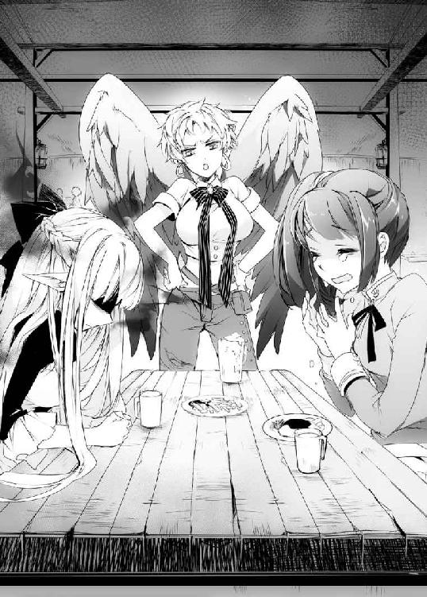
「わたしはいま、お金を持っていません」
本当に着の身着のまま、出てきてしまったらしい。ポケットの中には夕食のレシピのメモが入っているだけで、なにも持っていなかった。
その紙切れを見て、マニュエラも表情を曇らせる。
「ああもう、今夜はアタシの奢りにしとくから、とにかく座んなさい！ ご飯、まだ食べてないんでしょ？」
返事をするつもりはなかったが、ネフィの隣で聖騎士の少女のお腹がキュウッと鳴っていた。
マニュエラが冷たい目を向ける。
「..................」
「わ、悪かったな！」
魔術師の弟子のネフィと聖騎士の少女は敵同士だ。......その、はずなのだ。
しかしこの頼りない少女からは、なぜか敵愾心のようなものが感じられなかった。
マニュエラはネフィを席に座らせると、あれこれ料理を注文する。......大半は、酒のようだったが。
料理を待っていると、聖騎士の少女が口を開く。
「そういえば、まだ名前も名乗っていなかったな。私はシャスティルだ。見ての通り、聖騎士を務めている」
「......マニュエラよ。アンタは自分の分くらい払ってよね？」
「貴様、なんで私にはそんなに冷たいんだ！」
「だってアンタが本当にネフィをいじめてないのかわかんないし？」
城を襲撃したときのことがあるからだろう。
聖騎士の少女――シャスティルはギクリと身を強張らせた。
「う......それは」
「ほら見なさい！ やっぱりなにかしたんじゃない」
「で、でも、あれは任務だったから......」
「はあ？ 任務だったら危害を加えてもいいってわけ？」
どうやら聖騎士というものは街の住民からはよく思われていないらしい。
もともと、このキュアノエイデスは魔術師の領地だったという話だ。そのあたりも住民の考え方に影響を与えてはいるのだろう。
また泣きそうになるシャスティルに、ネフィが言う。
「いえ、大丈夫です。あのときも、結局なにもされませんでしたから」
「本当に？」
「ご主人さまに怪我をさせたのは別の方ですし、その方にはちゃんと償ってもらいましたから」
〝魔法〟を思い出したのか、シャスティルがビクリと身を震わす。
「じゃあ、このヒトなにしてたの？」
「よくわかりません。でも他の方にお引き取り願うのを手伝っていただきました」
「ああ、荷物持ち的な？」
「はい」
「違うもん！」
バンッとテーブルを叩いてシャスティルが言う。
「私は聖剣の乙女だぞ？ つまり十二人しかいない聖騎士長のひとりだぞ？ なのにその言い方はなんだ！」
「でも、なにか間違っていましたか？」
「それは......うぅ」
シャスティルはまた言い負かされたように口ごもる。
――このヒト、気が弱いんでしょうか......。
そんなことを話していると、やがてネフィの前に一杯のスープが運ばれてくる。
「あの、いただけません」
「アタシが呑んでるのに、アンタなにも食べないでそこに座ってるつもり？ それじゃあアタシだって気持ちよく酔えないでしょうが」
「はあ......」
よくわからない理屈だったが、勢いに圧倒されてネフィは頷かされる。
――どうして、この人はこんな優しく接してくれるんだろう......。
スプーンを手に取ろうとして、ずっと大切に抱えていた首輪の破片をテーブルに置く。
「首輪、壊れちゃったの？」
「いえ、ご主人さまが、外してくださいました」
シャスティルが、じっとネフィの顔を見つめてくる。
「そのわりには、嬉しそうには見えないな――あ痛っ」
「......ちょっとは空気読みなさいよ、アンタ」
どうやらマニュエラに足を蹴飛ばされたらしい。足も鎧に守られているはずだが、その隙間を狙った一撃だったようだ。シャスティルは涙を浮かべていた。
返事に困って、ネフィはスプーンを握る。
「......いただきます」
「うん」
スープを口に運ぶと、どこか懐かしい味がした。
いや、懐かしいもなにもない。夕方、自分が作っていたスープと同じ味なのだ。
子羊のスープだった。
ぽろっと、頬を熱いものが伝った。
「あれ......？」
伝い落ちたのは、涙だった。
悲しいとさえ感じていなかったはずなのに、あたたかいスープを口にしたら涙がポロポロとあふれて止まらなくなっていた。
シャスティルがおろおろした声を上げる。
「だ、大丈夫か？ 私、またなにか悪いこと言った？」
「えぅ、えうううううううううううううっ」
堪えきれず、嗚咽がもれる。
――なんでなんですか、ご主人さま......。
泣き出してしまったネフィを、マニュエラは全てわかっているというようにその大きな翼で抱き寄せてくれた。
「ああ、もう......。ふたりとも好きなだけお姉さんに泣きつきなさい」
「わ、私は違うからな？」
世界は、ネフィが思うよりもずっと優しいのかもしれない。
ひとしきり泣いてから、ネフィは城での出来事をポツリポツリと語り始めた。
マニュエラはエールのジョッキを片手に黙ってそれを聞いてくれた。聞き終わるまでに五本も空のジョッキが並ぶことになったが。
シャスティルの方もハラハラした顔をしながら聞いてくれた。彼女も聖騎士だからといって悪い人間ではないのかもしれない。
話を聞き終わると、マニュエラは火照った顔でジョッキを乱暴にテーブルに置いた。
「――それで、理由もわからずに追い出されちゃったわけ？」
ネフィは小さく頷く。
「わたしは、なにか失敗をしてしまったんでしょうか」
あまりに突然すぎて、なにもわからない。
シャスティルが憤慨したように頷く。
「少しは見所のある男だと思っていたのに、なんてやつだ。これでは彼女のことを利用していただけみたいではないか」
「ご主人さまはそんな方じゃありません」
すかさず言い返すと、シャスティルが怯む。
「そ、それくらいわかってるけど、だからこそなんであなたを追い出したのかと......」
「あなたはご主人さまのなにをご存じなのですか？」
「ひうっ、そんなに怒らなくても......」
「わたしは怒っていませんが」
泣き疲れたこともあって、ネフィは普段にも増して無表情になっているようだ。シャスティルが戦いていた。
マニュエラが間に入ってなだめてくる。
「まあまあ、そりゃあ愛しいご主人さまの悪口言われたら怒るよ」
「悪口を言ったわけじゃない！」
言い合うふたりを眺めていると、マニュエラが視線を返してくる。
「それで、ネフィはこれからどうするつもりなの？」
「どう、しましょうか......」
どうしようもないから、あんなところで途方に暮れていたのだ。
シャスティルがコホンと咳払いをする。
「我々、聖騎士が保護するというのはどうだろうか。魔術師の被害に遭った民を保護するのも聖騎士の任務だ」
「はあ？ アンタんとこに捕まったら宗教裁判にかけられるの目に見えてるでしょ？ やっぱりネフィをいじめたいだけじゃないの？」
「違うもん！ だって彼女はただの使用人だし、被害者だという体を繕えば教会だって守らざるを得ないはずだから......」
「そういう体じゃないと裁判送りだってわかってんじゃない。バレたら終わりなんて危ないところにネフィを預けられるわけないでしょ？」
「だったらどうすればいいのだ......」
唇を尖らせてむくれるシャスティルに、ネフィは首を横に振った。
「お気持ちはありがたいですが、それはご主人さまを悪役にするということです。わたしには、できません」
シャスティルも肩を落とす。
それから、言いにくそうに口を開いた。
「あなたに、ひとつ聞きたいことがある。ザガンという魔術師が、複数の魔術師を従え、誘拐や生贄の儀式などを行うようなことがあると思うか？」
「ないと思います」
恐らく魔術師への偏見だろうが、ネフィは即答することができた。
そんな人間は、仮にネフィに好意を持ってくれたとしても同じことを繰り返す。ネフィに人格を求めようなどと思わないだろう。
「ご主人さまは、弱者には不思議なほど関心をお持ちにならない方です。野盗に馬車が襲われていたのを助けたときも、ご主人さまは野盗たちが気に入らなかったとおっしゃるだけでした」
あれは、もしかするとネフィを安心させようとしてくれたのではないかと思っている。
あの光景は、ネフィの里が襲われたときの記憶――恐怖というよりも罪悪感だが――を思い出させた。
それでネフィが青ざめていたら、彼は野盗を攻撃し始めたのだ。
――こんなものは塵芥だ――
そんなふうに言って。
そして誰にも見返りを求めず、ネフィからの賛美を期待することもなかったのだ。
......実際には、本人はネフィにいいところを見せようとはしていたのだが、彼女はそれを認識していなかった。
シャスティルは唸るように頷く。
「やはり、か......」
「それが、なにか？」
「いや、あなたの言う通りなのだろう。実際に剣を交えても、あの男は私が女だという理由で手加減までしたんだ。屈辱ではあったが、その、なんというか......」
ごにょごにょと言い淀むシャスティルに、またひとつジョッキを空にしたマニュエラがニッと笑う。
「あれあれー？ なんですか聖騎士さん、その顔はぁ。恋する乙女ですかぁ？」
「んなっ、不埒なことを言うな！」
怒鳴ってから、シャスティルはシュンと肩を落とす。
そして、こんなことを呟いた。
「初めて会ったとき、あの男は、助けを必要としているように見えたんだ」
そのひと言に、ネフィの心臓は大きく震えた。
――ときどき、ご主人さまはすごく寂しそうな顔をします。
特に過去のことを話すときは、よくそんな表情をするのだ。
ザガンとシャスティルが他にどこで出会ったのかは知らないが、自分以外にザガンのそんな素顔を知っている相手がいることに軽い嫉妬を覚えて、同時に少し嬉しかった。
――わたしが知ってるご主人さまは、きっと嘘の顔じゃない。
初めて出会った日の夜、もう見ることはできないと思っていた月をもう一度見ることができて、たまらず手を伸ばした。その隣で、ザガンはいっしょに月を眺めてくれた。
――なにも摑めんな――困ったように、そんなことを呟いて。
あれが偽りであるはずがない。
そしてこうも思う。
――ご主人さまは、いまも助けを必要とされているのではないでしょうか......。
ネフィに出ていけと言った彼の顔は、ネフィ以上に悲痛なものだったのだ。
胸に手を当てる。
マニュエラやシャスティルに話を聞いてもらえたおかげか、ザガンのことをきちんと思い出せるくらいには冷静さを取り戻していた。
自分が知っている主は、気まぐれや用が済んだからといって、自分を捨てるような人間だっただろうか？
――断じて、違います。
なにか、事情があったに違いない。
そう考えて、別れ際にザガンが気になる単語を口にしていたことを思い出した。
「あの、〈魔王〉というのは、どういったものなのでしょうか。ご存じありませんか？」
経緯を説明したときも、その名前を出し忘れていた。
マニュエラとシャスティルが顔を見合わせる。
「魔術師の中で一番偉い人じゃないの？ この街もマルコシアスさまっていう〈魔王〉さんが元締めだったんだけど、治安もよかったし特に怖いって印象はなかったかな？」
ただ、とひと言つけ加える。
「その〈魔王〉さん、この前亡くなったらしくて、それから嫌な事件が続いたかなあ」
「......魔術師による、連続少女誘拐事件か？」
「そう、それ。一応、犯人は教会に討伐されたらしいけどね」
シャスティルが口にした名前に、マニュエラが頷く。ネフィも詳しくは知らないが、噂程度は聞いている。
どうやらその事件を解決したのは教会と聖騎士らしいと聞き、ネフィは首を傾げた。
「そのわりには、街の方からあまり好意的に思われていないみたいでしたが......」
「うっ、それは......」
「そのあと救出料だってバカみたいな額の寄付金を徴収されたからね。そりゃあ素直に感謝できないでしょ」
「寄付なのに、徴収されるのですか？」
「そ、意味わかんないよねー」
じろっと睨まれて、シャスティルが悲しそうに肩を落とす。
「あの、この方が直接徴収したわけではないんですよね？ なら、彼女を責めても仕方ないと思います」
シャスティルが再び涙を浮かべてネフィを見る。
「あなたは優しいのだな。あの男が側に置きたがるのも理解できる」
「そう、でしょうか......？」
そんなことを言われたのは初めてで、ネフィはキョトンとしてまばたきをした。
それから、シャスティルは首を横に振る。
「話が逸れていたな。〈魔王〉だが、教会では聖騎士が命を賭してでも倒すべき悪の象徴だと言われている。聖剣が十二本しかないのに対し、〈魔王〉は十三人もいるのだ。全員が刺し違えてもひと振り足りないのだからな」
教会の最大の敵――ザガンは、そんな存在になったということらしい。
「〈魔王〉になると、教会と戦わなければならないのですか？」
「そうなるな。現在、〈魔王〉のひとりが死んだことで教会も打倒魔術師......いや、別に私個人がそう思っているわけではないぞ？ とにかく、魔術師を倒そうと教会も勢いを増しているのだ」
マニュエラに睨まれて、シャスティルが慌てて言い直す。
「もしも新しい〈魔王〉が生まれたとしたら、教会は倒すべき好機と判断するだろう。ここで叩かなければどれほど恐ろしい魔術師になるか想像もつかないからな。あるいは魔術師同士でも地位を狙う者がいるかもしれない」
そんな〈魔王〉に、ザガンはなったと言ったのだ。
――争いに、なるのでしょうか。
だから、そこからネフィを遠ざけようとしたのではないだろうか。
手の平を見つめる。
この一週間、ザガンは簡単な魔術の手解きをしてくれた。身を守る術を持てるようにと、いつか〝魔法〟を制御できるようにと。
でも、違うのだ。
――わたしは、ご主人さまの力になりたくて、魔術を習ったんです。
戻っても、足手まといにしかなれないのかもしれない。
それでも――
ネフィは立ち上がった。
「わたし、ご主人さまのところに、帰ります」
「だ、大丈夫？ 追い出されたんじゃなかったの？」
驚いた顔をするマニュエラとシャスティルに、ネフィは首を横に振る。
「ご主人さまは強い方です。きっともう、誰にも負けないくらい強いんです。でも、傷つかないわけじゃないんです」
――強い人間は弱い者の気持ちがわからない――
ザガンが打ち明けてくれた話だ。彼は決して傷ついたとは言わなかった。
それでもそう語った彼はひどく悲しそうに見えたのだ。
たったそれだけで人間に失望したわけではないだろう。それでも、人と関わることを諦めてしまうきっかけになったのではないかと思う。
そんな彼を見て、ネフィはとにかく抱きしめてあげたくなったのだ。
「わたしは、ご主人さまの力にはなれないかもしれません。でも、きっとこれからも傷つかないなんてことはないと思います」
だから、とネフィは言う。
「わたしは、そんなご主人さまの支えになりたい」
思い上がりかもしれない。
戻ってもまた追い出されるだけかもしれない。
それでもあのとき、ザガンを抱きしめたネフィを、彼も受け入れてくれたと思うのだ。
――だから、そんなふうに側にいてあげたい。
たった半月という時間ではあるが、ザガンと過ごした思い出を信じたい。
独りで平気な人間なんていないのだ。
ネフィだって、そうだったのだから。
シャスティルが微笑む。
「そうか。なら、私も自分にできることをしに行くか」
「......？ また、ご主人さまに挑まれるおつもりですか？」
「違うから！」
顔を真っ赤にして、シャスティルが叫ぶ。
「そうではなく、だな......。私には、彼をかばうことはできないが、汚名を雪ぐことならできると思うから」
「汚名......？」
首を傾げるネフィに、シャスティルは頷く。
「ザガンの名を騙って、悪事を働く魔術師がいるようなのだ」
それが連続誘拐事件の犯人だとはネフィは知らない。
シャスティルもそれを伏せるようにして語る。
「あの男を陥れるつもりなのかもしれない。だからその魔術師たちを捕らえてみる」
「聖騎士と魔術師は敵対しているのではないのですか？」
「それは、そうなんだが......」
ばつが悪そうに、シャスティルは呟く。
「二度も命を救われて、なにも返せないのは悔しいじゃないか」
この少女なりに、思うところはあるのだろう。
マニュエラがにこにこと微笑みながらそんなふたりを眺めていた。
「さて、ふたりとも立ち直ったところで、そろそろお開きにしようか。あ、お会計この騎士さんでお願いね！」
「んなっ、私はなにも注文してないのに！」
いじられるシャスティルを見て、なぜかネフィも気が緩むのを感じた。
――こういう感覚を、なんと呼ぶのでしょうか。
戸惑うネフィに、マニュエラが腕を回してくる。
「まあ、また困ったことがあったらいつでもアタシのとこ来なさい。愚痴くらいは聞いてあげるわ。代わりに店の商品試着してもらうけどね、あはは」
キョトンとして、ネフィは首を傾げる。
「マニュエラさんは、どうしてそんなに優しくしてくれるのですか？」
ザガンが優しくしてくれたのとは、また別の感覚だ。
マニュエラはそんなこともわからないのかと目を丸くする。
「友達だからに決まってるでしょ？」
聞き慣れない言葉に、ネフィは思わず息を呑んだ。
「友、達......」
「え、違うの？」
「......わかりません。いままで、そんなことを言ってくれた方は、いませんでしたから」
思い当たるのは、ザガンと一度だけ彼の城を訪れた魔術師――確かバルバロスという名だった――との関係だろうか。ザガンとは悪態をつきあってはいたが、奇妙な気安さのようなものがあって、正直少しだけ嫉妬した。
きっと、友達というのはああいった関係を呼ぶのだろう。
マニュエラは一瞬だけ驚いた顔をしたが、すぐに笑った。
「なら、アタシが初めての友達ってわけね？ よろしく！」
「あ、あの......はい」
「うわ、アンタ、耳真っ赤よ？ 大丈夫？」
そこにシャスティルも怖ず怖ずと手を上げる。
「あの、私も、そう思っていいか？」
「なにが？」
「うぅぅっ、私も、友達と思っていいのかと！」
「ええー？ アンタ、聖騎士でしょ？ 魔術師と友達になっていいの？」
「だって！」
また涙ぐむシャスティルに、マニュエラは自慢の翼を覆い被せた。それから仕方なさそうに騎士の赤い髪を梳いてやる。
「友達でなかったらこんないじったりできないでしょ？」
「......いじるのは、友情なのか？」
ひどく不服そうな顔ながら、シャスティルもホッとした顔をした。
そうして店を出て、別れようとしたときだった。
「シャスティル殿ー！」
通りの向こうから、野太い声が聞こえた。
目を向けると、聖騎士の鎧を着た三人の男が駆けよってくるところだった。なんだかその凸凹の姿に見覚えがあるような気がして、ネフィは目を細める。
「ヒッ、き、貴様はあのときの！」
睨まれていると感じたのか、三人組の中のひょろ長い男が飛び上がった。
それで、ネフィも思い出した。
「あのとき、ご主人さまに怪我をさせたヒト......？」
「え、なに？ あいつらもネフィのご主人さまに怪我させたの？ これだから教会関係者っていうのは......」
「だからなんであなたはそんなに教会を敵視するのだ」
騎士たちがそれぞれの武器を構え、シャスティルがそれを仲裁するように割って入る。
そんなときだった。
「ひひひっ、仲良し小好し、美しいもんだな」
すぐ背中から、そんな不気味な声が聞こえた。
直後、足元に沼のような暗闇が広がる。
「え――」
なにが起こったかもわからぬ間に、ネフィは暗闇の中に腰まで引きずり込まれた。
「ネフィ――ひあッ？」
聖剣を抜こうとしたシャスティルも、黒い泥のようなものに搦め捕られる。腕を押さえ込まれて、剣を抜くこともできずに暗闇の中に引きずり込まれていく。
「シャスティル殿！」
騎士たちが駆けよってくるが、とうてい間に合うものではない。
それでもシャスティルは騎士だった。
「逃げ、ろ......マニュエラ」
自分も沼に呑まれているのに、一番遠くにいたマニュエラを暗闇の外へと突き飛ばす。
翼人族の娘は、その翼を広げて宙に逃れた。それでも泥のような触腕が飛び出し、マニュエラは慌てて上昇して逃げていく。
「くっ、市民を守るぞ！」
そこでようやく追いついてきた騎士たちが剣で触腕を薙ぎ払った。
「チッ、一匹逃がしたか。まあいい――我が名はザガン！ この者を救いたくば我が城まで来るがいい」
暗闇の主はザガンとは似ても似つかぬ声で、そう言った。
ネフィは、その声に聞き覚えがあった。
「どうして、あなた、が......」
暗闇の中に、見知った顔が浮かんだ。
◇
数刻後。
月が浮かぶ夜の廃城。
その入り口で、ザガンは夜空を見上げていた。
初めて出会った夜、ネフィは月に向かって手を伸ばしていた。あの仕草の意味はなんだったのだろう。いまではもう、確かめる術もない。
ザガンはまた月に向かって手を伸ばすが、やはりなにも摑めなかった。
――いや、あのときは摑めていたのかもしれない。
初めて心を奪われた少女が、あのときは隣にいてくれたのだから。
「ひとりだと、ここはこんなに静かな場所だったんだな」
静かすぎて、耳が痛いほどだ。
ネフィも口数が多い娘ではなかったが、掃除に食事の支度にとあちこち駆け回る彼女の音は、確かにこの城を賑わわしてくれていたのだ。
無人の森で、ザガンはそんなふうに立ち尽くしていた。
その足元から呻き声が響く。
「ぐおぉ、馬鹿な......。我ら、蒼天の三騎士が束になって、こうも歯が立たんなど......」
いつぞやか侵入してきた三馬鹿......いや、三騎士だ。なにやら殺気立って襲撃してきたため、とりあえず出向いてみたところだった。
――〈魔王〉の継承話をもう聞きつけてきたのか？
それにしては早すぎる気もするが、いまはどうでもよかった。
ネフィはもういない。
ザガンが出ていけと言ったときの、彼女の顔が忘れられない。
――傷つけた、んだよな。
当然だろう。
独りは辛い。
ネフィは嫌というほどそれを痛感してきたはずだ。
それがようやく心を開いてくれ、感情を見せてくれるようになったところだった。
そんなふうに受け入れておいて自分の都合で突き放すなど、ただ傷つけるよりもよほどひどいことなのだろう。
――でも、あの街の連中なら、きっとよくしてくれる。
キュアノエイデスの住民が、買い出しに出かけるネフィを、好意的に受け入れてくれていたことは知っている。
教会の目も誤魔化してくれるだろう。
そもそもネフィがザガンと関わっていた時間など、ほんの半月の間なのだ。ほとぼりが冷めれば関係を探ろうとする者もいなくなる。
魔術師や教会などとは無関係に、平穏にぬくもりのなかで生きていくのだ。
これでいい。
全て、丸く収まったのだ。
全て、ネフィと出会う前に戻っただけなのだ。
そうして、ザガンが城に戻ろうとしたときだった。
「待て......」
地に伏した騎士のひとりが、ザガンの足を摑んできた。洗礼鎧は打ち砕かれ、自慢の長剣もへし折られた騎士だ。
ザガンは疲れたようにため息をもらす。
「俺はいま、機嫌が悪いんだ。前のように手加減をしてやるほど優しいと思うなよ？」
ここで倒れる彼らがまだ生きているのは、ザガンが手を下す前に罠に打ち倒されたからという、手加減以前の問題だ。
――そういえば、このトラップもネフィと作ったんだったな。
彼女の〝魔法〟を制御する実験のひとつとして、一定の条件で解放されるように魔法を込めてみたのだ。
一応、この騎士たちも城の前まで侵入できるほど力のある聖騎士だ。それをこうも簡単に仕留めたのだから、実験は成功だったのだろう。
いまさら、それをネフィに伝える術はないが。
ザガンが騎士の手を蹴り飛ばそうとすると、騎士は血を吐くような声で訴える。
「我らはどうなってもかまわん！ だが、あの方だけは......シャスティル殿だけは、助けてくれ」
「シャスティル......？」
そういえば、今日はあの聖剣使いの少女が見当たらなかった。
てっきりこの三騎士が先走っただけだと思ったが......。
「あの方は、誘拐事件の犯人は貴様ではないと、枢機卿閣下と対立してまで真犯人を捜しておられたのだ。貴様が犯人でないのなら、あの方だけは見逃してもいいはずだろう？」
「......話が見えないんだが？」
自分がキュアノエイデスで起こっている連続誘拐事件の犯人に仕立て上げられていることは知っている。恐らく、その犯人も。
しかし騎士たちはただの思い込みでものを言っているようにも思えなかった。
「あいつ、誘拐されたのか？」
「しらばっくれるな！ シャスティル殿を影の中に引きずり込み、ここに来いと言ったのは貴様ではないか！」
ようやく合点がいった。
どうやらこの騎士たちはザガンがシャスティルを誘拐したと思い込んでここを襲撃したらしい。
どこかの騙りに踊らされたらしいが、ザガンはシャスティルと戦い、手加減をしていてなお互角に渡り合ってみせた。それが余計に信憑性を持たせてしまったようだ。
――あるいは、それもこいつらをけしかけるための演出だったのか？
あのときザガンがシャスティルを殺していれば、聖騎士長殺しとして教会も総力を挙げて討伐にかかっていただろう。生かして帰しても、いまのように彼女を誘拐しうる犯人の根拠にすることができる。
あの日の襲撃自体が、そのために仕組まれたものだったのかもしれない。
「だとしたら、なかなか用意周到なものだ」
それから考える。
――そうか。あいつが誘拐されたのか。
聖騎士の身でザガンを助けようとしていたのだ。気苦労の多そうなやつだとは思ったし、憎めないとも感じていた。
だが、彼女を助けたのはたまたま目の前で死にかけていたからだ。
どこへ攫われたのか、そもそもまだ生かされているかもわからないのに助けにいくかと言われれば、悩まざるを得ない。
「シャスティル殿を返せぇ......っ」
目の前で謂われのない批難をぶつけられていることにもやる気を削がれる。
見殺しにするのは後味が悪いが、助けてと言われると助けたくなくなる。ザガンは本来、そんなひねくれた性格なのだ。邪悪ではないのかもしれないが、決して善人でもない。
どうしたものか悩んでいたときだった。
「魔術師さーん！」
空から、そんな声が降ってきた。
聖騎士が侵入したことで、ここまでの結界が意味をなくしているのだ。
「今度はなんだ？」
言いながら、一歩後ろに下がる。
直後、空から女が降ってくる。
「ぷぎりっ？」
女は、聖騎士の頭の上に着地していた。
その顔を見て、ザガンは眉をひそめた。
「お前は......？」
空から降ってきたのは、金色の髪の翼人だった。見覚えがある。ネフィの服を買った店の店員だ。
足蹴にされた騎士が怒りの声を上げる。
「おのれ、なぜ邪魔をする鳥女！」
「だから犯人はこの人じゃないって言ってるでしょ？」
「なにを言うか！ 貴様とてここに侵入しようとしていたではないか」
「助けを求めようとしてたんじゃない！ なのにどうして襲いかかるのよ」
なにやら言い合いを始める娘と騎士たちに、ザガンはため息をもらす。
――面倒だし、外に放り出すか。
ザガンが魔法陣を使おうとすると、娘がすがりついてきた。
「魔術師さん、助けて。あの子たちが......ネフィとシャスティルが攫われちゃったの！」
「なんだとっ？」
どうしてそこでネフィの名前まで出てくるのかはわからなかったが、ザガンは呻いた。
地面に転がる三騎士たちも誘拐のことを言っていた。キュアノエイデスの連続誘拐事件はまだ終わってない。あの事件にネフィも巻き込まれたというのだろうか。
――いや、違うな。
ザガンが考えている通りの人間が犯人なら、これはザガンへの挑発なのだろう。
彼女がザガンの侍女で弟子だったから狙ったのだ。
――距離を置くのが、遅すぎたというのか？
呻いていると、マニュエラが肩をゆすってくる。
「お願いだよ、魔術師さんなら助けられるんでしょ？」
「だ、だが......」
表立ってザガンが助けにいけば、今度こそネフィは自分の身内だと知られてしまう。完全に、ザガンの仲間だと思われてしまうのだ。教会からも逃げられなくなる。
もちろん見捨てるつもりはないが、ザガンが関わったことを隠す工作を考えなければならないのだ。いますぐに飛んでいくというわけにはいかなかった。
葛藤するザガンに、マニュエラが叫んだ。
「なに迷ってんのよ。ネフィはなにをされてもアンタのところに戻ろうとしてたのよ？」
「なッ......んだと？」
目を剥くザガンに、マニュエラは涙声で訴える。
「アンタがネフィを追い出したってのは聞いたよ。それでもネフィはアンタの側にいたいって、アンタを支えたいって、だから何度追い返されたって戻ってみせるって」
マニュエラがザガンの胸元を摑む。
「アンタたち魔術師ってのは、そんなふうに想われてもなにも感じないわけ？ だったらなんであの子に優しくしたのよ！」
ドンッと、マニュエラが胸を叩いてくる。
聖騎士や魔術師でもない、ただの女の手だ。
なのに、痛かった。
いままでのどんな攻撃よりも痛かった。
――ネフィは、戻ろうとしたのか。あんなひどいことを言った、俺のところに......。
なぜだろう、などとは思わない。
この半月の間、ザガンはネフィを見てきたのだ。
彼女がなぜそうしたのかなど、あの感情豊かな耳を見なくてもわかる。
想ってくれたのだ。
こんな悪党のザガンを。
想うのなら、もっとまともな人間を想えばよかっただろうに。
自分はすでに取り返しのつかないことをしていたのだ。
ザガンは深いため息をついた。
「......そうだな。お前の言う通りだ」
ザガンは、笑った。
「魔術師ってのは、徹頭徹尾クズなんだ。自分のことしか考えない、他人なんて道具くらいにしか思わない、命なんてそこらから勝手に湧いてくるもんだと思ってるんだ」
「な、なにを言って......」
「そんな俺が、他人を思い遣るなんて、どうかしていた」
いっときの気の迷いとはいえ、まったく愚かなことを考えたものだ。
――そうだよ。魔術師は、自分の利益だけ考えていればよかったんだ。
こんなにも苦しい思いなどする必要はないのだ。
望むままに、自分を通せばよかったのだ。
初めてあの少女と出会ったとき、迷わずそうしたように。
彼女が怖がったという理由で拷問器具や野盗どもを塵に変えたように。
聖騎士が槍を向けたとき、考える前に彼女を守ったように。
にわかに青ざめる翼人の娘に、ザガンは言う。
「礼を言う。おかげで頭がすっきりした」
やるべきことは初めから決まっている。
だからザガンは足を踏み出した。
「ネフィは俺のものだ。そのネフィに手を出した馬鹿は血祭りに上げないとな」
自分の手が汚れていようが、魔術師という存在が穢れていようが知ったことか。
〈魔王〉という権力と魔力の全てを捧げてでも、そんな全てからネフィを守ってやればよかっただけなのだ。
――なのに、俺は怖じ気付いたんだ。
十二人の〈魔王〉――圧倒的に、自分よりも格上だと感じた彼らに、気迫で負けてしまったのだ。
だからあんな弱音を吐いて、ネフィを傷つけてしまった。
――まだ、取り返しがつくのか？
それはわからない。
だが、いまザガンがやるべきことなどひとつしかないのだ。
それから、呆気に取られる騎士たちを思い出す。
――ついでに、シャスティルも助けてやるか。
ネフィといっしょに捕まっているなら、どうせ目の前に転がることになるのだから。
ザガンが踵を鳴らすと、足元に大きな魔法陣が広がる。いつだったか、シャスティルを領地の外に放り出した転移の魔法陣だ。
今回のこれは、とある魔術師の拠点へと繋がっている。
――犯人が誰かなんて、わかりきったことだからな。
それから、翼人族の娘に目を向ける。
「お前は、ネフィのために怒ってくれるんだな。なぜだ？」
「そんなの、友達だからに、決まってるでしょ......」
怖ず怖ずと答えるマニュエラに、ザガンは手を差し出す。
「なら、ついて来るか？ ネフィを助けに行く」
「......ッ、行くわ」
その足元で、騎士たちも呻き声を上げる。
「ま、待て、我らも、シャスティル殿の下へ......」
すでに立ち上がれないくらい打ちのめしたはずなのだが、三騎士はザガンの足にすがりついてそう言った。
「......ああ、もうわかったわかった。連れていってやるから、その汚い手を離せ」
こうして、魔術師と聖騎士と服屋の店員という奇妙な組み合わせの一行は、魔法陣の中に消えていった。
◇
「――ネフィ、怪我は、ないか？」
目を覚ますと、そこは薄暗い牢の中だった。
洞窟かなにかを改造したものだろうか。地面も壁も全て岩で、天井からは尖った石がぶら下がっていた。鍾乳石だ。地面に鍾乳石がないところをみると、足元は整地されているのだろう。鉄格子はないが、代わりに壁から鎖がぶら下がっている。
灯りが差す方向に目を向けると、奥に大きな空洞があるようだった。光を放っているのは魔法陣のようだが、尋常ではない大きさだ。
ネフィの位置からでは部分的にしか見えないが、円の全貌を考えるとザガンの城のホールひとつ分よりさらに広大かもしれない。
ジャラリと鎖の音が響く。ネフィの首にはまた首輪。手足にも枷が嵌められていて、それぞれが魔力を封じる力のあるものだとわかった。
隣にはシャスティルも繋がれているが、剣も鎧も剥ぎ取られて手枷を嵌められている。ただのシャツとスカート姿の少女は、聖騎士と言われてもとうてい信じられないような普通の娘だった。
ふたりの鎖は石壁に繋がれていて、とても力任せに外せそうはない。
以前のネフィならば、また全てを諦めてされるがままになっていただろう。どうせ殺されるのだからと。
でも、いまは違う。
――ご主人さまの下に帰るって、決めたんです。
どうにかしてここを脱出しなければいけない。
しかしこの手枷や首輪をつけられては魔術は使えず、〝魔法〟を使うには自然が足りなかった。〝魔法〟というのは、魔術師が思うほど制約もなく使える力ではないのだ。
ひと通りもがいて、ネフィは周囲を見つめた。
「ここは......？」
「わからん。我々を襲った敵のアジトだとは思うが」
そこに、ひたっと足音が近づいてくる。
シャスティルがネフィを庇おうと立ち上がるが、彼女も手枷を鎖で壁に繋がれているのだ。無防備な姿をさらすだけだった。
現れた顔は、やはりネフィの知っているものだった。
「あなたは、ご主人さまの友達ではなかったのですか――バルバロスさま」
ザガンの友人として訪れた魔術師だった。
仲がいいとは言えなかったが、親しそうに見えたというのに。
バルバロスが痩せこけた顔に笑みを浮かべる。
「友達！ おお、これは驚いた。魔術師を見てそんな考えを持つ人間がいるとは思わなかったぞ」
笑いながら、バルバロスはネフィの頬を鷲摑みにする。
「やつが殺した魔術師の中に、《怨嗟》のアンドラスって男がいたのさ。やつが最初に殺した魔術師だ。俺はそいつの弟子でな」
ネフィは目を見開いた。
「おっと勘違いするなよ？ 師匠の仇討ちなんてのは魔術師のやることじゃあない。ザガンが殺さなくてもいずれ俺が殺っていた」
その言葉には憤りも欺瞞も感じられなかった。
恐らく虚勢ではなく本心なのだろう。
「だが、やつがふんぞり返っている城も、お前を落札した金も、その叡智さえも俺が手に入れるはずだったものなんだよ。そいつを黙って渡すなんて、納得できねえだろう？」
それから今度はシャスティルを見る。
「手始めに教会の連中をけしかけてはみたんだが、なかなか上手くいかないもんだな。部下どもは簡単に足が付くし、ザガンにぶつけた連中はあっさり返り討ちだ。聖剣なら腕の一本くらい落としてくれることを期待したんだがなあ」
ネフィはハッとした。
バルバロスが城にやってきたのは聖騎士から襲撃されたすぐあとで、しかもザガンの負傷の具合を気にしていた。
ネフィの〝魔法〟がなければ、実際に彼は片手で戦う羽目になっていたのだろう。
シャスティルがキッとバルバロスを睨みつける。
「まさか、誘拐事件の犯人はお前か！」
「なんだよ。いまごろ気づいたのか？」
誘拐事件の犯人――ザガンが『まるで教会に見せつけるみたいな事件だ』と語っていたことを思い出した。
――もしかして、ご主人さまはすでに犯人をご存じだったのでしょうか。
誰とは名前を出さなかったが、その話をしていた彼はどこか諦めたような表情をしていたのだ。
シャスティルが震える声で吼える。
「貴様は、ザガンひとりを陥れるためにこんなおぞましい事件を起こしたというのか？」
「まさか？」
バルバロスはひひっと気味の悪い笑い声を上げる。
「生贄の話を言い出したのは《顔剥ぎ》のやつだが、俺たちは大きな儀式をやってみせる必要があったのさ」
「みせる......？ 誰に見せるというのだ」
「そんなもの、ひとつしかないだろう？ 十二人の〈魔王〉たちだ！」
バルバロスは両腕を広げる。
「俺こそが次の〈魔王〉に相応しいと、〈魔王〉たちに見せつけるのさ。それが他の候補者どもを蹴落とす唯一の方法だ」
そして、とバルバロスはネフィに顔を近づける。
「正直、生贄どもを奪われたときは困ったもんだったが、お前が手に入った。白髪のエルフの魔力があれば、俺は〝扉〟を開くことができる」
ネフィは、そんなバルバロスを無表情に見つめ返した。
「申し訳ありませんが、恐らくそれは無意味です」
「へえ、言うじゃないか。俺がお前を殺さないとでも思うのか？ それとも、もしかするとあれか？ ザガンが助けに来るとでも思ってるのか？」
――ザガンが助けに来る――
その言葉に、ギュッと胸が痛くなった。
――ご主人さまが、来てくれることなんて、あるのでしょうか？
まず、ネフィがここに捕まっていること自体を彼は知らない。
それに理由かはわからないが、いまの彼はネフィと距離を置こうとしている。
彼は心からネフィを見放したわけではないと思う。そんな人間は、あんな辛そうな顔はしない。
それでも、彼がネフィを助けられない理由があるかもしれないのだ。
ネフィは頭を振る。
――そうじゃない。
自分はまた、弱い方向に考えてしまっている。
――ご主人さまの力になると決めたんです。なのにご主人さまの足を引っ張ってどうするんですか。
この程度の窮地など、自分でどうにかできなければ彼の下に帰ることなどできない。
ネフィは表情を変えぬままバルバロスを見つめた。
「違います。こんなことでご主人さまの手を煩わせるつもりはありません。わたしが言っているのはそういうことではありません」
「ほう、ではなんだ？」
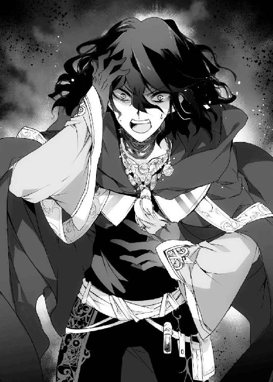
「その〈魔王〉というものは、ご主人さまが継承されたからです」
バルバロスの顔から、表情が抜け落ちた。
「......嘘だ」
「事実です。だからわたしは解雇されたそうです」
ふらふらと、バルバロスが後退る。
「あり得ん。あいつが、〈魔王〉だと？」
ガリガリと頭を掻きむしる。
「俺からアンドラスの遺産を奪っただけじゃ飽き足らず、〈魔王〉の座まで？」
それから、どこか病んだ眼差しでネフィを見る。
ゾッとしたものを感じて身を退くと、ネフィは首輪を引っ張られた。
「あぐっ......」
手も足も繋がれているのだ。ネフィは受け身も取れずに地面に転がった。
「来い！」
バルバロスが向かう先には、大きな広間があった。
「やつが〈魔王〉だと？ 上等だ。だったらその称号を力尽くで奪えばいい。こいつさえ完成すれば、相手が〈魔王〉だろうがなんだろうが関係ない」
そこには、不気味な魔法陣が描かれていた。壁に繋がれていても見えた、あの巨大な魔法陣だ。
中央には巨大な紋章が刻まれ、それを微細な紋章で囲んだ〝回路〟が何十層も描かれている。その魔法陣の全てが血で描かれていることがネフィにもわかった。
これだけ精緻な魔法陣を描くのに、いったいどれほどの生贄を必要としたのだろう。
自分はその〝仕上げ〟に使われるのだとわかった。
シャスティルが怒りの声を上げる。
「や、やめろ！ 生贄なら私にしろ。騎士としてそれくらいの覚悟はできている！」
バルバロスは胡乱げにシャスティルを睨む。
「そうねだらなくても、お前は他の機会に使ってやるから心配するな。この儀式には最上の道具が必要なんだ」
ネフィは奥歯を噛みしめる。
――道具――
その通りだ。ネフィはずっとそう呼ばれて生きてきた。
――でも、ご主人さまは一度としてわたしを道具とは言わなかった。
自分はまだ、それに報いていない。
だから、こんなところで無意味に死ぬわけにはいかないのだ。
――生きたい。
初めて、ネフィは自分のためにそう願った。
「......生きて、ご主人さまのところに......帰るん、です」
追い返されるかもしれない。叱られるかもしれない。
それでも強情に城に居座ってやるのだ。
朝になったらご飯を作って、ザガンが食べてくれるまでじっと待つのだ。
それを三食やっても駄目なら、今度は膝枕をしてみよう。ザガンが喜んでくれたことを全部やってあげるのだ。
――根比べなら、ご主人さまにだって負けませんから。
屍のように、ただ虐げられることに耐える日々だったのだ。
ぬくもりの欠片もなかったあの場所、あの時間に比べれば、あたたかいザガンのところでなにをされたって耐えてみせる。
それは、別にネフィである必要はないのかもしれない。
ネフィ以外に、大切な誰かができる日が来るかもしれない。
――でも、独りでいるのはダメです、ご主人さま。
独りでいると、心が死んでしまう。
なにも感じなくなって、世界の全てが灰色に見えていく。
それは生きているとは言わない。
そんな死んでいないだけのネフィに、色鮮やかな世界を与えてくれたのは外ならぬザガンなのだ。
だから、彼が独りでなくなるその日まで、側で支えてあげたい。
身を捩って抵抗する。
「......離、して」
「チッ、こいつ！」
それでバルバロスが苛立ったように鎖を引っ張り、また転倒する。地面を引きずられて、腕や膝から血がこぼれていた。
痛みで涙が込み上げる。
だが、ネフィは歯を食いしばってバルバロスを睨み返す。
――こんなの、ちっとも辛くないです。
ザガンに出ていけと言われたときに比べればなんでもない。
あのときの悲しそうな彼の顔を見たときに比べれば、痛くともなんともない。
だからネフィは吼える。
「わたしはご主人さまのものです。あなたになんて触られたくありません！」
バルバロスの顔が愉快なほど歪んだ。
「奴隷風情が、思い上がるなよ！」
バルバロスが手を上げる。
魔術師の力で打たれれば、ネフィの華奢な体はひとたまりもない。
それでもネフィはバルバロスから目を逸らさなかった。
そして、そのときだった。
轟音と共に、石壁が砕け散った。
「な、なにごとだ？」
うろたえるバルバロスの前で、土煙の中からその男はゆっくりと現れた。
嗚呼、と声がもれる。
「よく言ったネフィ。それでこそ俺の弟子だ」
誰よりも会いたかった主が、そこに立っていた。
◇
「よう、バルバロス。一週間ぶりくらいか？」
親しい友人にそうするように、ザガンはいつも通りにそう話しかけた。
バルバロスの顔は見る見る強張っていく。
マニュエラが来たあと、ザガンは真っ直ぐここにやってきた。バルバロスの隠れ家は全て知っているし、キュアノエイデスから駆け込める場所となると限られている。
いくつか候補はあったのだが、しらみつぶしにするつもりだった。ひとつ目でネフィを見つけることができたのは運がよかった。
「あ、あのさ、魔術師さん。大丈夫？ 魔術師って、他の魔術師の領地に入ったらめちゃくちゃ不利って聞いたよ？」
ザガンの後ろをついてきたマニュエラが怖る怖る口を開くが、ザガンは肩を竦めるだけだった。
ちなみに三騎士たちはとうてい戦えるような状態ではなかったため、外に置いてきた。
それで少しは冷静さを取り戻したのか、バルバロスがザガンを見据える。
「......いつから、気づいていた？」
どうしてここに、などと聞かないあたりは、バルバロスも覚悟をしていたということなのだろう。
ザガンは首の後ろをかきながら答える。
「一応、怪しいと思ったのは《顔剥ぎ》とかいう魔術師がやってきたときか？」
シャスティルを襲っていた魔術師のことだ。
――そういえば、あいつもここにいるのか？
探してみると、当のシャスティルは手枷をつけられて壁に繋がれていた。......よくよく魔術師に負ける聖騎士だと、少し同情する。
とはいえ、バルバロスに視線を戻す。
「そこの女を外に放り出そうとしたら、結果を確かめるみたいにやってきたんだ。それで疑わない方がどうかしているだろう？」
確信を持ったのは〈魔王〉たちから話を聞いたときだが、ずっと疑惑は抱いていた。
敢えて口に出さなかったのは、ただ単にどうでもよかったからだ。バルバロスに友情を感じていないわけではなかったが、彼が裏切ろうが敵対しようが関心がなかった。
バルバロスが意外そうな顔をする。
「それでよく、オークションの誘いを受けたな？」
「お前がなにを仕掛けるつもりなのか、というのは気になったからな。それに、〈魔王〉の遺産には普通に興味があった」
結果的に、ザガンはそのおかげでネフィと出会えた。そういう意味では、いまでもこの男に感謝をしている。
苦笑を返して「その前に」とザガンは言う。
「お前、ネフィに怪我をさせたな？」
地面が砕ける。
ザガンが踏み出した一歩で、岩盤が割れたのだ。
「――ッ」
バルバロスが身構えたときには、ザガンはその正面に立っていた。
「おのれ――」
「まず、腕だな」
なんの魔術を使おうとしたのか、バルバロスが掲げた腕を、ザガンは片手で振り払う。
ボギンッと嫌な音が響き、バルバロスの両腕があらぬ方向に曲がった。
「――っっっ？」
「次は、膝だ」
声にならない悲鳴を上げるバルバロスに、今度は容赦なく足払いをかける。
いや、足払いというのは正確ではない。斜め上から膝を蹴り抜いたのだ。その一撃は膝の関節を粉々に粉砕していた。
「あっぐあああああっ！」
泡まで吹いてバルバロスが昏倒する。
ザガンが踏み込んでから、ほんの数秒のできごとだった。
手足を砕かれ、芋虫のように転がる悪友を尻目に、ザガンはネフィの前に膝をつく。
手足を拘束する枷を力任せに引きちぎり、次に首輪を外してやる。この首輪は以前のものとは違い、大した仕掛けもなく力尽くでも外せる程度のものだった。
少女を縛り付けるものがなにもなくなったのを確かめてから、ザガンはようやくネフィの顔を見た。
真っ白な髪は泥で汚れ、瞳には涙まで浮かんでいた。
「ああっと......痛く、なかったか？」
「......痛かった、です」
「そうだよな。......すまん」
ぽかっと、胸を叩かれた。
「わたしなんかより、ご主人さまの方が、よっぽど痛そうでした」
「......俺が？」
ポロポロと、ネフィの目から涙がこぼれていた。
「ご主人さまの身になにが起こったのかは存じません。わたしが必要ないとおっしゃるなら、受け入れるべきなのだと思います。でも――」
ネフィはギュッと、胸元にしがみついた。
「ご主人さまが傷ついてるのに、平気なわけないじゃないですか！」
ネフィのこんなに大きな声を聞いたのは、初めてのことだった。
「俺は、傷ついているように見えるか？」
「はい」
「どちらかというと、傷つけた側だと思っているんだが......」
「それとご主人さまが傷ついていないかは、別の話です」
「......やっぱり、傷つけては、いたわけだよな？」
「話をすり替えないでください」
今日のネフィはずいぶんと厳しかった。
手を離さないまま、ネフィはザガンの顔を見上げる。
「独りに、ならないでください、ご主人さま」
じわっと、胸の奥に熱が込み上げた。
――俺は、お前を独りにしたんだぞ？
なのに、ネフィは恨み言をぶつけるどころかそう言ったのだ。
この少女を抱きしめ返したいと思うのは、いまさら都合がよすぎるだろうか。
「ネフィ......」
なによりもいま、伝えなければいけない言葉があるはずだ。
ザガンがそれを口にしようとしたときだった。
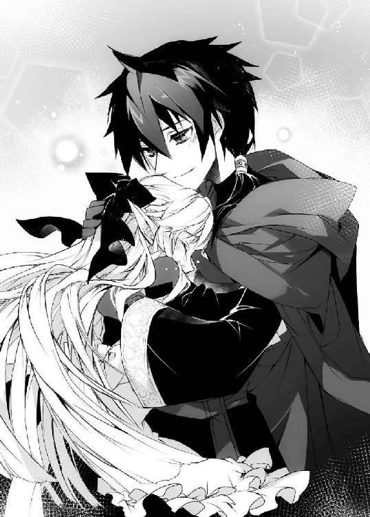
「てめえっ、トドメも刺さずに勝った気になってんじゃねえぞ！」
砕かれた手足を再生させたのだろう。バルバロスが立ち上がった。
足元に、血の色をした魔法陣が広がる。
「ご主人さま！」
ネフィが悲鳴を上げるが、ザガンはそれを落ち着かせるように頭を撫でてやった。
「心配するな。なにも起きない」
「なっ――？」
果たして、ザガンの言葉通り魔法陣からはなにも起きなかった。
バルバロスの魔術が発動しなかったわけではない。発動したのに、なにも起こらなかったのだ。
「どうなって、いるんですか......？」
不思議そうな顔をするネフィに、ザガンは言う。
「前に、理論上、最強の魔術が存在すると話したことがあっただろう？」
魔法陣の内側に回路を増設するという、魔術の法則を破壊する魔術。理論上は存在するが、現実には不可能な机上の空論である。
「実はな、あれを実現できる裏技みたいなのがあるんだ」
さっと宙に指を走らせて、地面に描かれた魔法陣と同じものを描く。
「相手とまったく同じ魔法陣なら、内側に重ねられるんだ。そうすると魔術ってのは共振みたいな現象を起こすんだ」
初めて魔術を使ったのは八歳のときだった。
当時、浮浪児だったザガンは《怨嗟》アンドラスによって、生贄として囚われたのだ。
自分のような身元のわからない子供が魔術師に捕まるというのがどういうことなのか、ザガンはすでに理解していた。
だから自分が捕まるときに見た魔法陣の形を覚え、ザガンはこっそり自分の腕に描いたのだ。書くものがなかったため、自分の血を使って。
いまにして思えば子供の浅知恵だった。素人が形だけ真似たところで、魔術など使えるはずがないのだから。
なのに、ザガンの魔術は発動した。
逃げようとして、それがアンドラスに見つかり、殺されようとしたときだった。
自分に降りかかる雷に向かって、ザガンは同じ魔術を使った。
偶然だったのだろう。まったく同じ魔術をほんの少し時間をずらして発動したことにより、共振した魔術はアンドラスへと跳ね返った。
口で言うほど簡単な現象ではない。ただ同じ魔術を重ねたところでお互い暴発するか全て自分に返ってくるだけだ。そもそも発動が間に合わないだろう。
コンマゼロ一秒にも満たない瞬間に同じ魔術を重ねたからできた奇跡だった。
ザガンはそのままアンドラスを殺した。
これが、ザガンだけの魔術――十二人の〈魔王〉がザガンを盟友に選んだ力だった。
バルバロスが後退る。
「ば、馬鹿な......。それが、アンドラスの遺産だというのか？」
「アンドラス......？ ああ、そういえばそんなやつもいたな。やつもこんな芸当ができたのか？」
そのわりにはずいぶんあっさりと死んでしまったが。
違うとわかったのだろう。バルバロスが蒼白になった。
「お、お前はいったい、なんなんだああああ！」
半狂乱になったバルバロスが魔術を乱射する。
ここは彼の結界の中だ。バルバロスの力は極限にまで高められ、ザガンは逆にいちじるしく力を減退させられている。
にも拘らず、バルバロスの魔術はひとつとしてザガンには届かず、その直前で掻き消えていた。バルバロスが繰り出す全ての魔術に、同じ魔法陣を描き返して〝共振〟を起こさせているのだ。
初見の魔術に対しても瞬時にそれを行える。
才能などというものがあるなら、これがザガンの魔術の才能なのだろう。
ネフィが愕然としたように呟く。
「でも、だったらどうしてなにも起こらないんですか？ 同じ魔術を重ねたなら、魔術自体は発動するのでは......」
「いい着眼点だネフィ」
優れた意見を口にする弟子を、ザガンは素直に褒める。
「いま言ったのは、タイミングさえ合えば素人でもできる初歩の初歩だ。魔術を語るのなら、それを発展させないとな？」
最初にザガンが覚えたのは〝共振〟による魔術の反射だ。
それを反射だけでなく、別の形に昇華できないかと考えたときから、ザガンの魔術師としての研究が始まった。
やがて、一度〝共振〟させた魔術を自分の魔力として還元することに成功した。
ザガンはローブを翻して腕を広げる。
その右腕には、いくつもの魔法陣が連なっていた。
魔法陣は全て、起動状態にある。中で魔力が循環し続けているのだ。
「見えるか？ こいつが、いまバルバロスがぶちまけた魔術を変換した魔法陣だ」
それはつまり魔術の吸収だ。
魔術の行使自体がザガンに力を与えるのだ。たとえ〈魔王〉であっても、魔術でザガンは殺せない。
これが、ザガンを〈魔王〉にした魔術だった。
「とはいっても、まだ俺の得意な魔術にしか変換できないからな。ここからどんな魔術にも応用できるように発展させていく必要があるんだが」
完成と呼ぶには未熟すぎる力だ。
だから〈魔王〉たちはザガンを矮小だと呼んだのだ。
バルバロスが驚愕に顔を歪ませる。
「俺の魔術を、喰ったとでもいうのか？」
ひと目でその表現が出てくるあたり、やはりこの男も一流の魔術師なのだろう。
ザガンがもっとも得意とする魔術――それは、肉体強化だ。
他の魔術師が放つ魔術を〝共振〟させ、自身の強化へ変換する。それは確かに魔術を喰うと呼ぶに相応しい。
それから、ふと思い出したように言う。
「そういえばバルバロス。俺もようやく通り名を与えられたんだ」
右手を拳に握る。
腕にまとわりつく魔法陣が輝いて回転した。
「――《魔術師殺し》――それが俺の通り名だそうだ」
そして、拳を叩きつけた。
バルバロスはなにかしらの防御を行ったのだろう。
だが、魔術は全てザガンに吸収される。体を強化しようにも、肉体強化でザガンに勝る魔術師は存在しない。
つまるところ、ザガンが拳を振るえばそれを止められる魔術師は存在しなかった。
たとえ、それが〈魔王〉であってもだ。
「げごあっ」
ザガンの拳がバルバロスの胴を抉る。内臓が破裂し、背骨までもがひしゃげる感触が伝わった。
体をくの字に曲げて吹き飛んだバルバロスは、そのまま広間の大きな魔法陣に投げ出されて二度、三度と転がった。
バルバロスは血を吐き、ピクピクと痙攣していた。
ザガンはゆっくりとそれを追いかける。
「ま、待ってくれ。俺の、負けだ。もう、戦えん。もう、お前の前にも、顔を見せないと、誓う。知識も、全て譲渡する」
命乞いを始めるバルバロスに、ザガンは拳を握る。
腕にまとわりつく魔法陣は、何枚か数を減らしてはいたがまだまだ残っていた。
バルバロスの顔が青ざめる。
「ザガン、俺たち、友達だよな？」
見苦しいひと言に、ザガンは真面目な顔で首を傾げた。
「魔術師に、友人なんて概念があるのか？」
そして、拳を振り下ろした。
岩盤が砕け、広間に描かれた魔法陣が跡形もなく崩れる。破壊は地面に留まらず、岩でできた壁や天井までも広がっていった。その亀裂はシャスティルを拘束していた壁にまで侵蝕し、鎖を解く。
そんな一撃をまともに受けたバルバロスは、肉片すら残らない......はず、だった。
「あ、あばばば......」
バルバロスは白目を剥いて伸びていた。ザガンの拳は彼の頭のすぐ真横を撃ち抜いていたのだ。
無様な悪友の姿に、ザガンはプッと吹き出す。
「はははっ、冗談だ。そんなにビビるなよ」
「お、お前......？ なんのつもりだ？」
ザガンは肩を竦める。
「まあ、別に殺してもいいんだが、お前を殺すと美味い酒が飲めなくなる。俺は、酒の種類には疎いんだ」
「情けでもかけるつもりか......ッ」
「余裕と言うんだよ、こういうのは」
バルバロスがザガンを睨みつける。
「ふざけるなよ......。俺を生かしておいたら、必ずお前を殺す。必ずだ！ お前が死ぬまで諦めるものか」
「かまわんさ。負けるたびに美味い酒を貢いでもらうがな」
理解できないというように、バルバロスが目を見開く。
「お前はいったい、なにを言っているんだ？ 魔術師が敵を殺さないでなんの得になるというんだ？」
「ああ、それなんだがな......」
ザガンは忘れていたと手を叩く。
「バルバロス。俺は〈魔王〉を継承した」
ギリッとバルバロスが悔しげに歯を食いしばる。それを眺めてザガンは続ける。
「〈魔王〉がしきたりやルールを気にするなんて、滑稽だと思わないか？」
十二人の〈魔王〉はおぞましいほどに強力だった。
彼らと対面して、全ての魔術師の行き着く先は、そこなのだと痛感した。
恐怖したのだと思う。
――冗談じゃない。
なぜそんな勘違いをしてしまったのだろう。
ザガンは生きたいから強くなったのではないか。
虐げられるのが嫌だから、強さを求めたのではないか。
それが他人の強さに屈するなど、自分自身への裏切りに外ならない。
――そんな無様な俺だから、ネフィまで傷つけてしまった。
そんな負け犬のままでいられるほど、ザガンはものわかりがよくはないのだ。
だから堂々とこう宣言した。
「俺は俺のやりたいように振る舞う。ネフィを陽の光の下で生きさせたいなら、陽の光の下も支配すればいいだけの話だ」
改めてバルバロスを見下ろす。
「だからお前も殺さない。俺がそう決めたからだ。気に入らないなら俺を従えられるだけの力を示してみせろ」
脱力したように、バルバロスが四肢を投げ出した。力だけでなく、精神が敗北を認めたのだ。
本当の意味での、決着の瞬間だった。
「傲慢な野郎だ」
「ああ、そうとも。傲慢でなくてなにが〈魔王〉だ」
そう言って笑い返したときだった。
砕けたはずの広間の魔法陣が、淡く輝き始めた。
「......おい、まだやるつもりか？ バルバロス」
さすがに呆れた顔をすると、バルバロスは首を横に振った。
「ち、違う、俺じゃない」
ザガンは自分が拳を撃ち込んだ位置を見る。
魔法陣の中心だ。そしてザガンの魔術は他人の魔法陣と共振する。無意識にここの魔法陣に干渉してしまったのかもしれない。
――なんだ？ 異様な魔力が集まってくるぞ？
それはザガンでも吸収しきれないほどの力だった。とてもではないが、人間の許容量を超えている。
「......お前、なにをするつもりだったんだ？」
バルバロスは、ひくっと顔を引きつらせた。
「本物の、魔族を召喚するはずだったんだ」
魔術に使う紋章、あるいは教会の紋章もそうなのかもしれない。それらは古い時代の神や悪魔が残した文字だという説があった。
――そんな〝本物〟を呼び出すなんて、できるのか？
年若いザガンの知らない、魔術の深淵だった。
ザガンは叫ぶ。
「ネフィ、逃げろ！ マニュエラ、お前たちもだ！」
しかしそれが無理な要求だとはザガンにもわかっていた。
洞窟が崩落しかねないほどに揺れる。
ザガンの一撃で罅だらけになっていたところに、この魔法陣の力だ。天井まで崩れ始めていて、逃げるどころか立ち上がることさえ困難だった。
「くっ、なにが起きているんだ」
それでもシャスティルはネフィの下まで這って近付くと、彼女を守るように覆いかぶさる。彼女はやはり騎士なのだ。翼を持つマニュエラもこんな狭い場所で飛べるはずはなく、身動きが取れなくなっている。
――腹を決めるしか、ないか。
なにが現れるかは知らないが、迎え撃つしかないのだ。
かくして、魔法陣の中心からそれは現れた。
ザガンは、瞬時に自分の思い上がりを理解した。
魔法陣が不完全だったのか、偶然の発動だったからか、それは明確な形すら持たないただの〝影〟だった。
その影に、ザガンは恐怖した。
――無理だ。こんなもの、人間にはどうしようもない。
息が詰まる。
十二人の〈魔王〉たちと対面しても、これほどの威圧感は覚えなかった。
ネフィが蒼白になって震えている。シャスティルは耐えきれずに気を失った。マニュエラも顔を覆って踞っている。
――これが、魔族なのか......！
《魔術師殺し》などという通り名を与えられはしたが、果たしてこの怪物が振るうのは魔術なのだろうか。仮に魔術だったとしても、ザガンの処理能力で相殺することができるだろうか。
無理だろう。
どれほど力を手に入れようと、人は神にはなれないのだ。
死を覚悟したそのときだった。
怪物が、不意に膝をついた。
まるで、ザガンに傅くように。
そしてこう語った。
『我が王よ。なんなりとご命令を』
人智を超えた怪物は、どういうわけかザガンに従っていた。
自分の拳に、紋章が浮かんでいることに気づく。
〈魔王〉として継承した、〈魔王の刻印〉――怪物は、この紋章に傅いているのだ。
――俺は、いったいなにを手に入れたんだ？
〈魔王〉の名は、ただの称号と呼ぶにはあまりに力を持ちすぎていた。
長い夜が明けて、朝日が昇っていた。
怪物は、ザガンが命じると還っていった。どこから呼びだしたのかはわからないが、彼らが住まうどこか別の場所へとだ。
そのあとすぐに洞窟は崩落を始め、ザガンはネフィとシャスティル、マニュエラ、おまけにバルバロスまで抱えて脱出しなければいけなくなった。
まあ、よくも間に合ったものだと思う。
実際、間に合うはずはなかったのだが、もう駄目かと思ったところで三騎士たちが決死の覚悟で飛び込んできた。彼らがシャスティルやマニュエラを抱えてくれたおかげで間に合ったのだ。
役立たずだと思っていたが、彼らは最後の最後で本当に役に立ってくれた。
......まあ、最後まで「我らはシャスティル殿と市民の安全を優先しただけであって、邪悪な魔術師に協力したわけでも見逃すわけでもない！」などと暑苦しく喚いていたが。
彼らはそのままシャスティルを抱えて去っていった。バルバロスに取りあげられた聖剣も回収したらしい。結局、気を失った彼女と言葉を交わす機会はなかったが。
シャスティルが連れていかれると、マニュエラも帰っていった。
「あとはふたりできちんと話し合うのよ？」
そんなお節介な言葉を残して。
そうして崩れた洞窟を眺めるのは、ザガンとネフィ、そしてバルバロスの三人だった。
岩の残骸を見つめて、ザガンはバルバロスに問いかけた。
「それで、どうする？ まだ続きをするか？」
「......はっ、あんな化け物見たあとでなにをどうしろってんだ」
曲がりなりにも、ザガンはあの怪物――それを〝魔族〟と呼ぶべきなのかいまもわからない――を使役してみせたのだ。
そこで、バルバロスの敵愾心も折れてしまったらしい。
「んで、なんだっけ？ 美味い酒を持っていけば詫びになるんだっけか？」
「ああ、上等なのを期待している」
「へいへい」
バルバロスも立ち上がれる程度に回復すると、どこかへ去っていった。
この男は、きっとまたザガンの寝首をかこうと画策するのだろう。
だが、別にそれでよかった。
こんな男ではあるが――なにも殺すことはないだろう――なぜか、そんなふうに憎めない部分がある。だから、生かしておくのだ。
それから、ようやくザガンはネフィとふたりきりになれた。
――どうしよう、なんて声をかけたらいいんだ？
この半月でだいぶまともに話せるようになったのに、またどうしゃべったらいいかわからなくなっていた。
なにせザガンがネフィを傷つけて追い出してから、まだ一日も経っていないのだから。
額に汗を滲ませていると、先に口を開いたのはネフィだった。
「ご主人さま、わたしは、ご主人さまのお側にいたいです」
「......いいのか？ 俺はあんなことを言ったわけだし、無理をしなくても」
「ご主人さまが、いいんです」
ザガンは、そんな少女に見惚れたのかもしれない。
――なんだ。強くなったんじゃないか。
たったひと言を伝えるのにも右往左往しているザガンなどより、よほど。
ザガンは困った顔を返す。
「だが、前の通りとはいかない」
「......ダメ、ですか？」
「ああ、駄目だ」
ザガンはネフィの前に跪くと、その紺碧の瞳を真っ直ぐ見つめた。
彼女に伝えなければならない言葉がある。
もう、独りになんてしない。
〈魔王〉の権能全てを使ってでも守って見せる。
だからずっと側にいてほしい。なによりも――
――俺は、ネフィが好きなんだ。愛しているんだ。
一度ネフィを傷つけて、追い出した自分が帰ってきてくれと請うのだ。この想いを伝えなければ、そんなことは口にできない。
静かに息を整えて、ザガンは口を開く。
「俺は〝ご主人さま〟ではなく、名前で呼んでほしい」
ネフィが目を丸くした。
「ダメなんですか？」
「ああ、駄目だ。その呼び方では、いつまで経ってもネフィは奴隷で、俺はその主でしかないじゃないか」
戸惑うネフィの肩を摑む。
「奴隷でも、使用人でも、弟子でもない、そういう関係になりたいんだ」
「つ、つまり......？」
ツンと尖った耳が痙攣するように震える。
ザガンも緊張で震えながら口を開く。
「つまり、お前が......好......す......」
――お前が好きだ――
その単純なひと言が、咽の奥に引っかかったように出てこなかった。
咽がからからに渇いて声が出ない。バルバロスを一蹴し、魔族さえも追い返した自分の膝が無様に震えている。
葛藤の末、ザガンの口をついて出たのはこんな言葉だった。
「お前は俺のものだ。いつまでも、一生、どちらかが死ぬまで、いいや死んでもだ！」
言ってから、ガックリと膝をついた。
――どうして俺は〝好き〟のひと言も告げられないんだ！
ひと目見たときから心を奪われた。
彼女に好かれたくて、この半月の間右往左往した。自分が意気地無しだから、傷つけてしまったことさえあった。
それでもいまこそ気持ちを打ち明けるときだというのに、ザガンにはできなかった。
己の無力さに涙まで浮かべていると、ネフィはいつものようにこう答えた。
「はい！」
いつものように頷いて――
そして花が開くように微笑んだ。
――ネフィが、笑った......。
それは、ザガンも初めて見る表情だった。
思わず見惚れていると、ネフィは首輪の残骸を取り出す。ほんの数時間前まで彼女の首にはまっていたものだ。鍵で外したおかげで、壊れてはいない。
「これを、また嵌めてくださいますか？」
「いや、これは駄目だろう？ これは奴隷の......」
言いかけたザガンの唇に、ネフィは人差し指を当てた。
「これがいいんです。わたしとご主人さまの......」
言いかけて、ネフィは困ったように口ごもる。
「わたしとザガンさまとの、初めての繋がりじゃないですか」
ザガンは、一度は解放した首輪を手に取る。
気持ちは伝えられなかった。なのに、ネフィは首輪をつけろと言う。
まるで、誓いの指輪のように。
婚約指輪と呼ぶには、あまりに物騒なリング。
それでも紛れもなくふたりにとっては〝証〟だった。
「ああ、わかった」
ザガンは、ネフィの首にもう一度首輪を嵌めた。
魔力を封じネフィを隷属させる、見るも忌まわしい鉄塊。
だが自分と彼女の間には、正反対の意味を持つ証。
それから、キョトンとしてネフィは首を傾げる。
「あの、ザガンさま」
「なんだ？」
「奴隷でも使用人でも弟子でもない関係とは、どのようなものなのでしょうか？」
ザガンは顔を強張らせた。
――そんなの、俺の方が聞きたいんだが！
恋人になってほしい――その言葉を口にできなかったザガンはまた苦悩した。
――魔王の俺が奴隷エルフを嫁にしたんだが、どう愛でればいい？
誰か教えてくれと、心から祈った。
みなさまこんにちは。ＨＪ文庫では初めましてになります。『魔王な俺がエルフを嫁にしたんだが、どう愛でればいい？』をお届けにまいりました。手島史詞と申します。
この物語は強大な力を手にしながらも過酷な人生を歩んできたひとりの男が薄幸の美少女と出会い、絆を深めていく純愛ドラマ巨編でございます（語弊あり）。
とまあ、冗談はさておき久しぶりにこてこてなファンタジーであります。
剣も魔法もあるし、エルフや有翼人種、ケモ耳の獣人なんかも出てきます。神や魔王、魔族なんかもいますし、通貨は金貨や銀貨でお金がなければ追いはぎをしたりなんかもします。子供のころは食い物盗んでしこたま殴られたりもしていた少年が主人公です。
エルフの少女に一目惚れしたことで、少年は力では手に入らないものがあることを知ります。そう、暗い研究室に篭もりっきりの魔術師には、コミュ力なんてものは存在しなかったのです。
そんな痛々しい初恋を生暖かい目で見守っていただければ幸いです。
ＲＰＧ的な異世界ファンタジーというのは、かれこれ二年ぶりくらいになるでしょうか。なんだか懐かしいような恥ずかしいような複雑な気持ちです。
久しぶりといえば、本作のイラストを担当してくださいましたＣＯＭＴＡさんですが、実は『影執事マルクの手違い』というシリーズでも担当してもらっていました。コンビを組むのは二度目だったりします。
おかげでクオリティなどもわかっている分、安心感がありまして、そのあたりに不安がないのがありがたかったです。
今後の予定ですが、まずは今月二月に小説版デスクトップアーミー第二巻『デスクトップアーミー ハーメルンの笛吹き妖精』が発売。
次に春より放送開始のアニメ『フレームアームズ・ガール』のノベライズを担当させていただきまして、こちらが四月末にファミ通文庫より発売予定。もうひとつ、ファミ通文庫では別の新作を用意しておりまして、こちらも同じころに出るんじゃないかと思います。
他にも動かしている新作がいくつかあるのですが、報告できるのはこのあたりでしょうか。他の新作も梅雨ごろまでには発売されるのではないかと思います。
今回お世話になりました各方面へ謝辞。
本企画を立ち上げ、いろいろとアドバイスくださいました担当Ｋさま。可憐美麗なイラストを仕上げてくださいましたイラストレーターＣＯＭＴＡさま。カバーデザイン、校正、広報等に携わってくださいましたみなさま。最近じゃオムライスとかも作ってくれるようになった子供たち。そして本書を手に取ってくださいましたあなたさま。
ありがとうございました！
二〇一七年一月 プラモデルを組み立てたい夜に 手島史詞
アトリエ月の窓新館 http://teshima.exblog.jp/
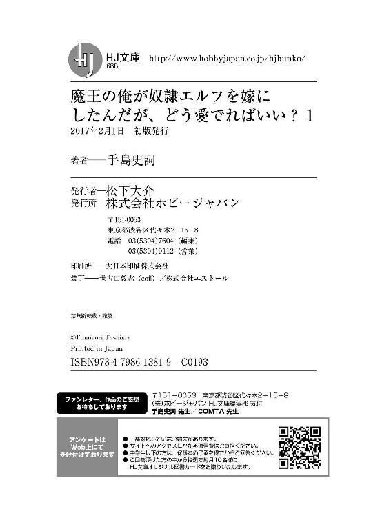